B4 · GPT-6 Astra · attempt aaSq42G
Batch tb8 · job tb8_B_EXP23000279_rep1_230309_gpt-6-astra · trial B_EXP23000279_rep1_230309__aaSq42G. Long tool outputs are cut at 6,000 characters.
0.42
41.3
$30.94
185
159
task prompt (instruction.md)
<environment_context> <cwd>/task</cwd> <shell>bash</shell> <current_date>2026-11-06</current_date> <timezone>Etc/UTC</timezone> <filesystem><workspace_roots><root>/task</root></workspace_roots><permission_profile type="disabled"><file_system type="unrestricted" /></permission_profile></filesystem> </environment_context>
user message
# Caspase-3/7 assay in WT vs PGRN-KO iPSC-derived neurons: plate acquired 09-Mar-2023
You are the analyst for this experiment: analyse the plate, answer the plan's question, and recommend the next step.
## Inputs (read-only)
| Path | Content |
|---|---|
| `/task/inputs/plan.md` | The scientist's notebook plan for this run: background, objective, materials, procedure, plate maps |
| `/task/inputs/plate_layout.csv` | One row per FCS file: `file, well, sample, genotype, treatment`. Values are the scientist's plate-map wording, from the plan's "Run flow" plate map (first row = A, second row = B) |
| `/task/inputs/start.flow` | Cytoflow workflow with the Import step configured: one tube per FCS file, conditions `well`, `sample`, `genotype`, `treatment` |
| `/task/inputs/raw/` | 18 FCS files (Attune NxT, FCS 3.1, acquired 09-Mar-2023) |
## Environment
- **Software.** All gating, any colour correction and all statistics must be done in **Cytoflow 1.3.2** on screen, through `cu`.
- **Terminal.** It has no flow-cytometry libraries. Use it only to read inputs, tabulate CSVs exported from Cytoflow, plot from them, and write the deliverables.
- **Open the start workflow.** File → Open → `/task/inputs/start.flow` (use `cu paste` for the path), then answer "Yes" to run it. Loading takes about 40 s.
- **Import step.** Leave "Events per sample" unset: final counts must use all events.
- **Channel names.** The names shown on screen are the labels stored inside the FCS files. They may be out of date.
- **Saving.** Save the workflow from Cytoflow (File → Save) as `/task/outputs/workflow.flow`. Save again after your last edit.
- **Budget.** About 5 hours.
## Deliverables (all in `/task/outputs/`)
CSV files must be comma-separated, UTF-8, with a header row. Use the exact file names, column names and allowed values below.
### 1. `workflow.flow`
- The saved Cytoflow workflow.
- Every population in `counts.csv` except `all_events` must be a gate operation in this workflow with exactly the same name.
- Re-applying the saved workflow to the raw files must reproduce the counts in `counts.csv`.
### 2. `counts.csv`
Columns, in order: `file, well, population, role, parent, count, pct_of_parent`
- **One row per file × population**, for all 18 files and the same set of populations in every file.
- **The `all_events` row.** Each file has one row with `population` = `all_events`, `role` = `other`, `parent` = `none`, and `pct_of_parent` empty.
- **`role`** ∈ {`cells`, `singlets`, `live`, `marker_positive`, `other`}.
- `cells`: the main cell population on scatter.
- `singlets`: single cells.
- `live`: viable cells.
- `marker_positive`: the population carrying your primary readout.
- `other`: any other population.
- Each of `cells`, `singlets`, `live` and `marker_positive` must be assigned to exactly one population, the same one in every file.
- **`parent`**: the name of the parent population (`all_events` for the first gate).
- **`count`**: integer event count from Cytoflow statistics.
- **`pct_of_parent`**: 100 × count / parent count.
### 3. `flags.csv`
Columns: `file, well, issue_type, evidence, decision`
- One row per file, for all 18 files. Flag any well whose data should not be used, with evidence.
- `issue_type` ∈ {`none`, `clog`, `ran_dry`, `too_few_events`, `saturation`, `bad_control`, `mislabel`, `other`}
- `decision` ∈ {`keep`, `keep_with_note`, `exclude`}
- `evidence` is required unless `issue_type` = `none`. It must cite at least one number measured from the data.
### 4. `condition_summary.csv`
Columns: `condition, wells, n_wells_used, mean, sd, metric_definition, normalisation_applied`
- **One row per condition.** You name the conditions. If you report more than one metric, give each condition–metric pair its own row with a unique `condition` name.
- **`wells`**: the plate wells used, separated by `;` (e.g. `A7;A8`).
- **`n_wells_used`**: integer.
- **`mean`**: number. **`sd`**: number, or empty when `n_wells_used` = 1.
- **`metric_definition`**: the metric in terms of your population names (numerator / denominator).
- **`normalisation_applied`**: `none`, or the exact formula you applied.
### 5. `figure.png`
The main result chart.
### 6. `report.md`
These headings, in this order:
1. `## Question`
2. `## Methods`
3. `## Results`
4. `## Conclusion`
5. `## Caveats`
6. `## Recommendation`
### 7. `answer.json`
```
{
"question": "<the question from the plan>",
"comparisons": [
{"comparison": "<name>", "a": "<condition from condition_summary.csv>", "b": "<condition from condition_summary.csv>",
"direction": "increase|decrease|no_clear_change", "magnitude": "<text with number>", "confidence": "high|medium|low"}
],
"overall_answer": "yes: ... | partial: ... | no: ...",
"assay_verdict": "fit_for_purpose|needs_optimisation|not_fit_for_purpose",
"next_action": "<one ACTION>",
"next_change": {"what": str, "from": str, "to": str, "why": str},
"excluded_wells": ["<wells with decision = exclude in flags.csv>"],
"caveats": ["..."]
}
```
Rules for `answer.json`:
- `comparisons` has at least 1 item. `a` and `b` must exactly match `condition` values in `condition_summary.csv`. `direction` describes b relative to a.
- `overall_answer` starts with `yes:`, `partial:` or `no:`.
- ACTION ∈ {`proceed_as_planned`, `repeat_unchanged`, `repeat_with_change`, `optimise_reagent_or_setting`, `change_treatment_or_timing`, `switch_assay`, `stop`}.
- `next_change`: the change you recommend, as an object: `what` (the step, reagent or condition to change), `from` (its value as run), `to` (the value you recommend) and `why`. Use empty strings if you recommend no change.
- `excluded_wells` must equal the set of wells marked `exclude` in `flags.csv`.
---
## How you operate this computer
You work from a **terminal** (bash, working directory `/task`). The analysis program, **Cytoflow 1.3.2**, is already running on a virtual screen (1440×900). You see and control that screen with the `cu` command:
| Command | What it does |
|---|---|
| `cu screenshot /tmp/screen.png` | Save a screenshot. Then **open/view the image file** to see the screen. |
| `cu click X Y` · `cu click X Y right` · `cu click X Y double` | Mouse click at pixel X,Y |
| `cu drag X1 Y1 X2 Y2` · `cu move X Y` · `cu scroll X Y down 3` | Drag, move, scroll |
| `cu type "text"` · `cu paste "text"` · `cu key ctrl+s` | Keyboard (use `cu paste` for file paths) |
Take a fresh screenshot after actions to check what happened.
- **Cytoflow.** If a "Welcome to Cytoflow!" dialog is showing, close it. In file dialogs, paste the full path (e.g. `/task/inputs/start.flow`) into the *File name* box.
- **Gating must be done in Cytoflow on screen.** Do not install or use flow-cytometry libraries (flowkit, flowio, fcsparser, FlowCytometryTools, the cytoflow Python API, etc.) to gate or count events. Python (numpy, pandas, matplotlib, openpyxl) is available for working with exported tables and writing reports.
- **Inputs** are in `/task/inputs/` (read-only). **Write every deliverable to `/task/outputs/`.** Only that folder is collected for grading.
- **Limits.** There is no limit on the number of actions; the only limit is the time budget above. Save `workflow.flow` and your output files early and often.
const r = await tools.exec_command({cmd:"pwd && rg --files /task/inputs /task | head -60","max_output_tokens":2000});text(r.output);
text(ALL_TOOLS.filter(x=>/computer|terminal|screen/.test(x.name+" "+x.description)).map(x=>({name:x.name,description:x.description.slice(0,130)})));
Script completed
Wall time 0.1 seconds
Output:
/task
/task/inputs/start.flow
/task/inputs/plate_layout.csv
/task/inputs/plan.md
/task/inputs/start.flow
/task/inputs/plate_layout.csv
/task/inputs/plan.md
/task/inputs/raw/Caspase_WT_KO_optimization_caspase_Group_B4.fcs
/task/inputs/raw/Caspase_WT_KO_optimization_caspase_Group_B8.fcs
/task/inputs/raw/Caspase_WT_KO_optimization_caspase_Group_A9.fcs
/task/inputs/raw/Caspase_WT_KO_optimization_caspase_Group_A2.fcs
/task/inputs/raw/Caspase_WT_KO_optimization_caspase_Group_A12.fcs
/task/inputs/raw/Caspase_WT_KO_optimization_caspase_Group_A11.fcs
/task/inputs/raw/Caspase_WT_KO_optimization_caspase_Group_A10.fcs
/task/inputs/raw/Caspase_WT_KO_optimization_caspase_Group_B11.fcs
/task/inputs/raw/Caspase_WT_KO_optimization_caspase_Group_B12.fcs
/task/inputs/raw/Caspase_WT_KO_optimization_caspase_Group_B9.fcs
/task/inputs/raw/Caspase_WT_KO_optimization_caspase_Group_B10.fcs
/task/inputs/raw/Caspase_WT_KO_optimization_caspase_Group_B6.fcs
/task/inputs/raw/Caspase_WT_KO_optimization_caspase_Group_B2.fcs
/task/inputs/raw/Caspase_WT_KO_optimization_caspase_Group_B7.fcs
/task/inputs/raw/Caspase_WT_KO_optimization_caspase_Group_A6.fcs
/task/inputs/raw/Caspase_WT_KO_optimization_caspase_Group_A7.fcs
/task/inputs/raw/Caspase_WT_KO_optimization_caspase_Group_A8.fcs
/task/inputs/raw/Caspase_WT_KO_optimization_caspase_Group_A4.fcs
/task/inputs/raw/Caspase_WT_KO_optimization_caspase_Group_B9.fcs
/task/inputs/raw/Caspase_WT_KO_optimization_caspase_Group_B10.fcs
/task/inputs/raw/Caspase_WT_KO_optimization_caspase_Group_B4.fcs
/task/inputs/raw/Caspase_WT_KO_optimization_caspase_Group_B6.fcs
/task/inputs/raw/Caspase_WT_KO_optimization_caspase_Group_B8.fcs
/task/inputs/raw/Caspase_WT_KO_optimization_caspase_Group_B2.fcs
/task/inputs/raw/Caspase_WT_KO_optimization_caspase_Group_B7.fcs
/task/inputs/raw/Caspase_WT_KO_optimization_caspase_Group_A9.fcs
/task/inputs/raw/Caspase_WT_KO_optimization_caspase_Group_A6.fcs
/task/inputs/raw/Caspase_WT_KO_optimization_caspase_Group_A2.fcs
/task/inputs/raw/Caspase_WT_KO_optimization_caspase_Group_A7.fcs
/task/inputs/raw/Caspase_WT_KO_optimization_caspase_Group_A12.fcs
/task/inputs/raw/Caspase_WT_KO_optimization_caspase_Group_A8.fcs
/task/inputs/raw/Caspase_WT_KO_optimization_caspase_Group_A11.fcs
/task/inputs/raw/Caspase_WT_KO_optimization_caspase_Group_A4.fcs
/task/inputs/raw/Caspase_WT_KO_optimization_caspase_Group_A10.fcs
/task/inputs/raw/Caspase_WT_KO_optimization_caspase_Group_B12.fcs
/task/inputs/raw/Caspase_WT_KO_optimization_caspase_Group_B11.fcs
[{"name":"web__run","description":"Tool for accessing the internet.\n\n\n---\n\n## Examples of different commands available in this tool\n\nExamples of different commands a"}]const r = await tools.exec_command({cmd:"cat /task/inputs/plan.md /task/inputs/plate_layout.csv && mkdir -p /task/outputs && cu screenshot /tmp/screen.png","max_output_tokens":10000});text(r.output);
const v=await tools.view_image({path:"/tmp/screen.png"});image(v.image_url);
Script completed Wall time 0.1 seconds Output:
# EXP23000279 | Caspase Assay in WT and PGRNKO iPSC Derived Neurons Notebook plan for the run acquired on 2023-03-09. This is the scientist's text as written, up to the start of this run's results. ## DAY 2023-03-09 ### Background: Loss of function of PGRN has been shown to negatively impact neural cell health reflected by increased cell death and caspase activity. Caspases are important mediators of the cell death pathway (apoptosis). Caspases are a group of proteases that result in cleavage of protein substrates subsequently leading to cell disassembly. For the PGRN RNAswap program we will want to measure caspase activity in iPSC derived neurons before and after adding the PGRN RNAswap constructs to ensure that PGRN protein replacement is rescuing the health of neurons. Before testing if AAV-PGRN constructs help restore neural health I will test and optimize the assay on the neurons with no AAV. ### Objective: For first round of experiments will be optimizing the assay. The goal will be to determine if a difference in caspase activity is present in PGRNKOs compared to WT PGP1 neurons. Camptothsesin (topoisomerase inhibitor) will be added. ### Materials: - Camptothecin - CellEvent Caspase 3/7 reagent - DMSO - Zombie NIR ### Procedure: - Differentiate WT and PGRNKO iPSC into neurons - Once cells are sufficiently neuronal can run caspase assay. - Add camptothecin Follow plate maps below. | Dose | for 1 well | |---|---| | 10uM | 20uL of 250uM stock into 500uL media | | 5uM | 10uL of 250uM stock into 500uL media | | 2uM | 4uL of 250uM stock into 500uL media | | 1uM | 2uL of 250uM stock into 500uL media | | DMSO (no treatment controls) | 10uL into 500uL media | - Incubate with camptothecin for 4.5hrs WT plate map (as written): ``` WT DMSO | WT 5uM camptothecin | WT caspase stain only WT no treatment | WT 10uM camptothecin | WT caspase stain only WT 1uM camptothecin | WT no stain | WT L/D only WT 2uM camptothecin | WT no stain | WT L/D only ``` KO plate map (as written): ``` KO DMSO | KO 5uM camptothecin | KO caspase only KO no treatment | KO 10uM camptothecin | KO caspase only KO 1uM camptothecin | KO no stain | KO L/D only KO 2uM camptothecin | KO no stain | KO L/D only ``` 5. Run flow Flow plate map (as written; the remaining rows of the table are empty): ``` WT no stain | WT no stain | WT caspase only | WT caspase only | WT L/D only | WT L/D only | WT 10uM camptothecin | WT 5uM camptothecin | WT 2uM camptothecin | WT 1uM camptothecin | WT DMSO | WT no treatment KO no stain | KO no stain | KO caspase only | KO caspase only | KO L/D only | KO L/D only | KO 10uM camptothecin | KO 5uM camptothecin | KO 2uM camptothecin | KO 1uM camptothecin | KO DMSO | KO no treatment ``` 3. Run CellEvent flow assay - Aspirate media and wash with PBS - Add 150uL accutase incubate for 5-10min - Add 75uL FBS and collect into 96w round bottom plate - spin down 200xg for 5min - Add 200uL Zombie NIR at 1:500 (4mL PBS+ 8uL Zombie) Incubate for 10min - Spin down and remove Zombie stain - Add 200uL of Cell Event Caspase 3/7 Detection reagent (1:1000) in flow staining buffer. Incubate for 30min at 37C (4mL +4uL reagent) - Analyze the samples without fixing. file,well,sample,genotype,treatment Caspase_WT_KO_optimization_caspase_Group_A2.fcs,A2,WT no stain,WT,no stain Caspase_WT_KO_optimization_caspase_Group_A4.fcs,A4,WT caspase only,WT,caspase only Caspase_WT_KO_optimization_caspase_Group_A6.fcs,A6,WT L/D only,WT,L/D only Caspase_WT_KO_optimization_caspase_Group_A7.fcs,A7,WT 10uM camptothecin,WT,10uM camptothecin Caspase_WT_KO_optimization_caspase_Group_A8.fcs,A8,WT 5uM camptothecin,WT,5uM camptothecin Caspase_WT_KO_optimization_caspase_Group_A9.fcs,A9,WT 2uM camptothecin,WT,2uM camptothecin Caspase_WT_KO_optimization_caspase_Group_A10.fcs,A10,WT 1uM camptothecin,WT,1uM camptothecin Caspase_WT_KO_optimization_caspase_Group_A11.fcs,A11,WT DMSO,WT,DMSO Caspase_WT_KO_optimization_caspase_Group_A12.fcs,A12,WT no treatment,WT,no treatment Caspase_WT_KO_optimization_caspase_Group_B2.fcs,B2,KO no stain,KO,no stain Caspase_WT_KO_optimization_caspase_Group_B4.fcs,B4,KO caspase only,KO,caspase only Caspase_WT_KO_optimization_caspase_Group_B6.fcs,B6,KO L/D only,KO,L/D only Caspase_WT_KO_optimization_caspase_Group_B7.fcs,B7,KO 10uM camptothecin,KO,10uM camptothecin Caspase_WT_KO_optimization_caspase_Group_B8.fcs,B8,KO 5uM camptothecin,KO,5uM camptothecin Caspase_WT_KO_optimization_caspase_Group_B9.fcs,B9,KO 2uM camptothecin,KO,2uM camptothecin Caspase_WT_KO_optimization_caspase_Group_B10.fcs,B10,KO 1uM camptothecin,KO,1uM camptothecin Caspase_WT_KO_optimization_caspase_Group_B11.fcs,B11,KO DMSO,KO,DMSO Caspase_WT_KO_optimization_caspase_Group_B12.fcs,B12,KO no treatment,KO,no treatment /tmp/screen.png

text(await tools.exec_command({cmd:"cu click 918 495 && cu key ctrl+o && cu paste /task/inputs/start.flow && cu key Return && cu screenshot /tmp/open.png","max_output_tokens":1000}));image((await tools.view_image({path:"/tmp/open.png"})).image_url);
Script completed Wall time 1.6 seconds Output:
{"chunk_id":"1f7baa","wall_time_seconds":1.388926562,"exit_code":0,"original_token_count":4,"output":"/tmp/open.png\n"}
text(await tools.exec_command({cmd:"cu click 1303 746 && cu screenshot /tmp/open2.png","max_output_tokens":1000}));image((await tools.view_image({path:"/tmp/open2.png"})).image_url);
Script completed Wall time 0.2 seconds Output:
{"chunk_id":"c4ec56","wall_time_seconds":0.007337127,"exit_code":0,"original_token_count":4,"output":"/tmp/open2.png\n"}
text(await tools.exec_command({cmd:"cu click 749 449","max_output_tokens":1000}));
text(await tools.web__run({search_query:[{q:"site.thermofisher.com CellEvent Caspase 3/7 Green flow cytometry 488 530 30 minutes"},{"q":"site.biolegend.com Zombie NIR APC Cy7 780 viability excitation"}],response_length:"long"}));
Script completed
Wall time 1.2 seconds
Output:
{"chunk_id":"54d303","wall_time_seconds":0.00000283,"exit_code":0,"original_token_count":0,"output":""}
CellEvent Caspase-3/7 Green Flow Cytometry Assay Kit User Guide (Pub.No. MAN0007522 B.0) (https://documents.thermofisher.com/TFS-Assets/LSG/manuals/cellevent_caspase_3_7_grn_flow_cytometry_assay_kit_man.pdf)
citeturn0search12 [wordlim: 200] Published: 4.3 years ago; **Stain cells with CellEvent™ Caspase-3/7 Green Flow Cytometry Assay Kit (continued)** ... ** Analyze the samples without washing or fixing, using 488-nm excitation and collecting fluorescence emission using a 530/30 bandpass filter or equivalent for CellEvent™ Caspase-3/7 Green Detection Reagent and a 690/50 bandpass filter or equivalent for SYTOX™ AADvanced™ Dead Cell Stain.
We recommend that you prepare and acquire single stained compensation controls using the CellEvent™ Caspase-3/7 Green Detection Reagent and the SYTOX™ AADvanced™ Dead Cell Stain.
**1.5.** Add 1 µL of CellEvent™ Caspase-3/7 Green Detection Reagent to 1 mL of sample and mix gently. Incubate the samples for 30 minutes at 37°C or 45–60 minutes at room temperature, protected from light. The final concentration of the reagent is 500 nM.
**Note:** For other cell types and models, stain concentration and labeling duration may require adjustment. For optimization, we recommend testing final concentrations between 400–1,000 nM.
**1.6.** During the final 5 minutes of staining, add 1 µL of the 1 mM SYTOX™ AADvanced™ Dead Cell Stain in DMSO to the appropriate samples and mix gently. The final labeling concentration of stain is 1 µM.
**1.7.** Analyze the samples without washing or fixing, using 488-nm excitation and collecting fluorescence emission using a 530/30 bandpass filter or equivalent for CellEvent™ Caspase-3/7 Green Detection Reagent and a 690/50 bandpass filter or equivalent for SYTOX™ AADvanced™ Dead Cell Stain.
--------------------------------------------------------------------------------
USER GUIDE
CellEvent™ Caspase-3/7 Green Flow Cytom (https://www.thermofisher.com/TFS-Assets/LSG/manuals/cellevent_caspase_3_7_grn_flow_cytometry_assay_kit_man.pdf)
citeturn0search13 [wordlim: 200] Published: 8 months ago; Safety Data Sheets (SDSs) are available from thermofisher.com/support. ... Figure 1 Flow cytometry analysis with the CellEvent™ Caspase-3/7 Green Flow Cytometry Assay Kit. ... 488‑nm laser, and fluorescence emission was collected using a 530/30 bandpass filter for CellEvent
USER GUIDE
CellEvent™ Caspase-3/7 Green Flow Cytometry Assay Kit
Catalog Numbers C10427, C10740
Pub. No. MAN0007522 Rev. B.0
WARNING! Read the Safety Data Sheets (SDSs) and follow the handling instructions. Wear appropriate protective eyewear,
clothing, and gloves. Safety Data Sheets (SDSs) are available from thermofisher.com/support.
Product description
A distinctive feature of the early stages of apoptosis is the activation of caspase enzymes, which are cysteine-aspartic acid-specific
proteases. These enzymes participate in a series of reactions triggered in response to pro-apoptotic signals and result in the cleavage of
protein substrates and subsequent cell disassembly. The recognition sequence in the target substrate always includes an aspartic acid
residue; cleavage takes place at the carbonyl end of that residue.
CellEvent
™ Caspase-3/7 Green Detection Reagent is a fluorogenic substrate for detection of activated caspases 3 and 7 in apoptotic
cells. This cell-permeant reagent consists of a 4 amino acid peptide (DEVD) conjugated to a nucleic acid binding dye. During apoptosis,
caspase-3 and caspase-7 proteins are activated and are able to cleave the caspase 3/7 recognition sequence encoded in the DEVD
peptide. Cleavage of the recognition sequence and binding of DNA by the reagent labels apoptotic cells with a bright, fluorogenic signal.
When used together with the SYTOX
™ AADvanced
™ Dead Cell Stain, apoptotic cells can easily be discriminated from live and necrotic
cells (see Figure 1).
Figure 1 Flow cytometry analysis with the CellEvent™ Caspase-3/7 Green Flow Cytometry Assay Kit.
Jurkat cells (T-cell leukemia, human) were treated with (A) DMSO or (B) 10 µM camptothecin for 3 hours before labeling with the CellEvent
™
Caspase-3/7 Green Flow Cytometry Assay Kit. Stained samples were analyzed on the Attune
™ Acoustic Focusing Cytometer equipped with a
488‑nm laser, and fluorescence emission was collected using a 530/30 bandpass filter for CellEvent
™ Caspase-3/7 Green Detection Reagent and
a 690/50 bandpass filter for SYTOX
™ AADvanced
™ Dead Cell Stain, respectively. --------------------------------------------------------------------------------
invitrogen USER GUIDE (https://documents.thermofisher.com/TFS-Assets/LSG/manuals/MAN0003556_CellEvent_Caspase_3_7_Green_Dctn_Rgnt_UG.pdf)
citeturn0search14 [wordlim: 200] Published: 9.8 years ago; Crawled: 9.7 years ago; After activation of caspase-3 or caspase-7 in apoptotic cells, the DEVD peptide is cleaved, enabling the dye to bind to DNA and produce a bright, fluorogenic response with an absorption/emission maxima of ~502/530 nm (Figure 1, page 2). ... To use the CellEvent™ Caspase-3/7 Green Detection Reagent, add the substrate to your cells in complete growth medium or buffer, incubate for 30 minutes, and image (Figure 2, page 2).
After activation of caspase-3 or caspase-7 in apoptotic cells, the DEVD peptide is cleaved, enabling the dye to bind to DNA and produce a bright, fluorogenic response with an absorption/emission maxima of ~502/530 nm (Figure 1, page 2).
There are several benefits of the CellEvent™ Caspase-3/7 Green Detection Reagent compared to other methods of detecting activated caspase 3/7. One important advantage of this assay is that it does not require wash steps, which helps preserve the fragile apoptotic cells typically lost during wash steps. To use the CellEvent™ Caspase-3/7 Green Detection Reagent, add the substrate
… [22,477 more characters not shown]text(await tools.exec_command({cmd:"cu screenshot /tmp/loaded.png","max_output_tokens":1000}));image((await tools.view_image({path:"/tmp/loaded.png"})).image_url);
Script completed Wall time 0.1 seconds Output:
{"chunk_id":"2e6663","wall_time_seconds":0.00000309,"exit_code":0,"original_token_count":4,"output":"/tmp/loaded.png\n"}
text(await tools.exec_command({cmd:"head -100 /task/inputs/start.flow && cu key ctrl+shift+s && cu screenshot /tmp/save.png","max_output_tokens":4000}));image((await tools.view_image({path:"/tmp/save.png"})).image_url);
Script completed Wall time 0.1 seconds Output:
{"chunk_id":"a96383","wall_time_seconds":0.0000037,"exit_code":0,"original_token_count":745,"output":"- !workflow-item;5\n channels: []\n conditions: {}\n current_view: null\n metadata: {}\n operation: !import;4\n channels_list: []\n conditions:\n well: category\n sample: category\n genotype: category\n treatment: category\n events: null\n ignore_v_bool: false\n name_metadata: null\n tubes:\n - !tube;1\n conditions:\n well: 'A2'\n sample: 'WT no stain'\n genotype: 'WT'\n treatment: 'no stain'\n file: '/task/inputs/raw/Caspase_WT_KO_optimization_caspase_Group_A2.fcs'\n - !tube;1\n conditions:\n well: 'A4'\n sample: 'WT caspase only'\n genotype: 'WT'\n treatment: 'caspase only'\n file: '/task/inputs/raw/Caspase_WT_KO_optimization_caspase_Group_A4.fcs'\n - !tube;1\n conditions:\n well: 'A6'\n sample: 'WT L/D only'\n genotype: 'WT'\n treatment: 'L/D only'\n file: '/task/inputs/raw/Caspase_WT_KO_optimization_caspase_Group_A6.fcs'\n - !tube;1\n conditions:\n well: 'A7'\n sample: 'WT 10uM camptothecin'\n genotype: 'WT'\n treatment: '10uM camptothecin'\n file: '/task/inputs/raw/Caspase_WT_KO_optimization_caspase_Group_A7.fcs'\n - !tube;1\n conditions:\n well: 'A8'\n sample: 'WT 5uM camptothecin'\n genotype: 'WT'\n treatment: '5uM camptothecin'\n file: '/task/inputs/raw/Caspase_WT_KO_optimization_caspase_Group_A8.fcs'\n - !tube;1\n conditions:\n well: 'A9'\n sample: 'WT 2uM camptothecin'\n genotype: 'WT'\n treatment: '2uM camptothecin'\n file: '/task/inputs/raw/Caspase_WT_KO_optimization_caspase_Group_A9.fcs'\n - !tube;1\n conditions:\n well: 'A10'\n sample: 'WT 1uM camptothecin'\n genotype: 'WT'\n treatment: '1uM camptothecin'\n file: '/task/inputs/raw/Caspase_WT_KO_optimization_caspase_Group_A10.fcs'\n - !tube;1\n conditions:\n well: 'A11'\n sample: 'WT DMSO'\n genotype: 'WT'\n treatment: 'DMSO'\n file: '/task/inputs/raw/Caspase_WT_KO_optimization_caspase_Group_A11.fcs'\n - !tube;1\n conditions:\n well: 'A12'\n sample: 'WT no treatment'\n genotype: 'WT'\n treatment: 'no treatment'\n file: '/task/inputs/raw/Caspase_WT_KO_optimization_caspase_Group_A12.fcs'\n - !tube;1\n conditions:\n well: 'B2'\n sample: 'KO no stain'\n genotype: 'KO'\n treatment: 'no stain'\n file: '/task/inputs/raw/Caspase_WT_KO_optimization_caspase_Group_B2.fcs'\n - !tube;1\n conditions:\n well: 'B4'\n sample: 'KO caspase only'\n genotype: 'KO'\n treatment: 'caspase only'\n file: '/task/inputs/raw/Caspase_WT_KO_optimization_caspase_Group_B4.fcs'\n - !tube;1\n conditions:\n well: 'B6'\n sample: 'KO L/D only'\n genotype: 'KO'\n treatment: 'L/D only'\n file: '/task/inputs/raw/Caspase_WT_KO_optimization_caspase_Group_B6.fcs'\n/tmp/save.png\n"}
text(await tools.exec_command({cmd:"cu click 20 30 && cu screenshot /tmp/menu.png","max_output_tokens":1000}));image((await tools.view_image({path:"/tmp/menu.png"})).image_url);
Script completed Wall time 0.2 seconds Output:
{"chunk_id":"7b94bc","wall_time_seconds":0.004584988,"exit_code":0,"original_token_count":4,"output":"/tmp/menu.png\n"}
text(await tools.exec_command({cmd:"cu click 71 102 && cu paste /task/outputs/workflow.flow && cu screenshot /tmp/save2.png","max_output_tokens":1000}));image((await tools.view_image({path:"/tmp/save2.png"})).image_url);
Script completed Wall time 1.5 seconds Output:
{"chunk_id":"8cb486","wall_time_seconds":1.3451915300000001,"exit_code":0,"original_token_count":4,"output":"/tmp/save2.png\n"}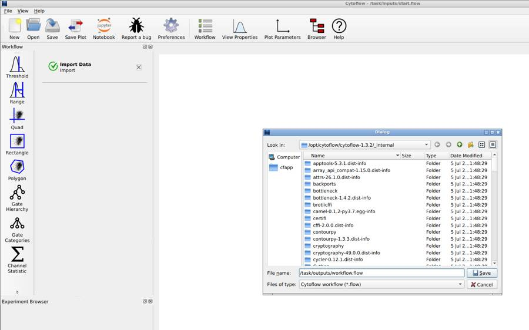
text(await tools.exec_command({cmd:"cu click 1317 745 && cu click 241 185 && cu click 45 455 && cu screenshot /tmp/poly.png","max_output_tokens":1000}));image((await tools.view_image({path:"/tmp/poly.png"})).image_url);
Script completed Wall time 0.4 seconds Output:
{"chunk_id":"16f73a","wall_time_seconds":0.218295299,"exit_code":0,"original_token_count":4,"output":"/tmp/poly.png\n"}
text(await tools.exec_command({cmd:"cu screenshot /tmp/poly2.png","max_output_tokens":1000}));image((await tools.view_image({path:"/tmp/poly2.png"})).image_url);
Script completed Wall time 0.1 seconds Output:
{"chunk_id":"921d5c","wall_time_seconds":0.00000357,"exit_code":0,"original_token_count":4,"output":"/tmp/poly2.png\n"}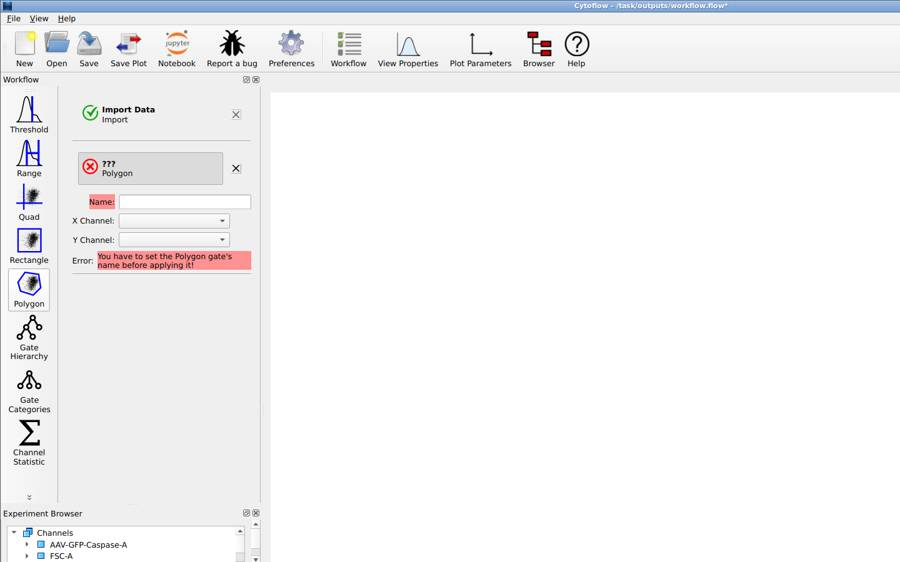
text(await tools.exec_command({cmd:"cu click 284 323 && cu type cells && cu click 356 352 && cu screenshot /tmp/channels.png","max_output_tokens":1000}));image((await tools.view_image({path:"/tmp/channels.png"})).image_url);
Script completed Wall time 0.4 seconds Output:
{"chunk_id":"8c23a8","wall_time_seconds":0.242497939,"exit_code":0,"original_token_count":5,"output":"/tmp/channels.png\n"}
text(await tools.exec_command({cmd:"cu click 223 377 && cu click 355 383 && cu key s && cu key Return && cu click 651 70 && cu screenshot /tmp/view.png","max_output_tokens":1000}));image((await tools.view_image({path:"/tmp/view.png"})).image_url);
Script completed Wall time 0.4 seconds Output:
{"chunk_id":"d1317c","wall_time_seconds":0.247634777,"exit_code":0,"original_token_count":4,"output":"/tmp/view.png\n"}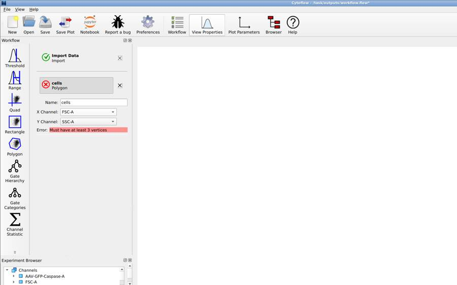
text(await tools.exec_command({cmd:"cu screenshot /tmp/view2.png","max_output_tokens":1000}));image((await tools.view_image({path:"/tmp/view2.png"})).image_url);
Script completed Wall time 0.1 seconds Output:
{"chunk_id":"f36f4f","wall_time_seconds":0.00000742,"exit_code":0,"original_token_count":4,"output":"/tmp/view2.png\n"}text(await tools.exec_command({cmd:"cu click 654 70 && cu screenshot /tmp/view3.png","max_output_tokens":1000}));image((await tools.view_image({path:"/tmp/view3.png"})).image_url);
Script completed Wall time 0.2 seconds Output:
{"chunk_id":"cf010e","wall_time_seconds":0.006195507,"exit_code":0,"original_token_count":4,"output":"/tmp/view3.png\n"}text(await tools.exec_command({cmd:"cu click 63 30 && cu screenshot /tmp/viewmenu.png","max_output_tokens":1000}));image((await tools.view_image({path:"/tmp/viewmenu.png"})).image_url);
Script completed Wall time 0.2 seconds Output:
{"chunk_id":"c0acb3","wall_time_seconds":0.060425505,"exit_code":0,"original_token_count":5,"output":"/tmp/viewmenu.png\n"}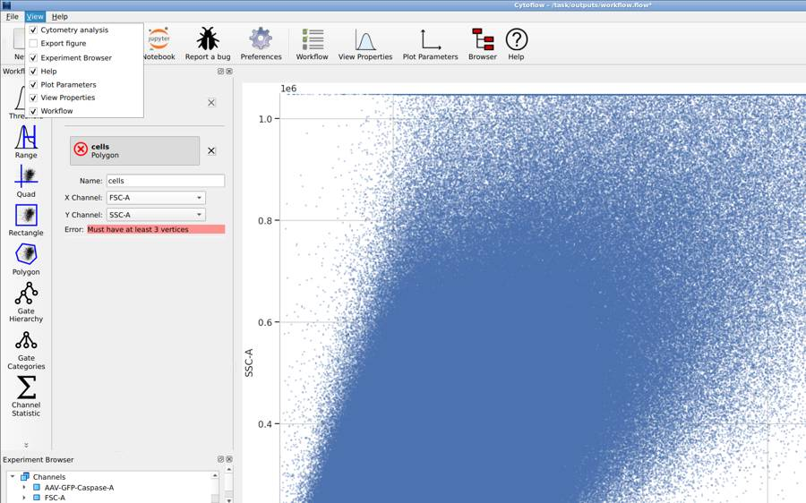
text(await tools.exec_command({cmd:"cu key Escape && cu click 753 10 double && cu screenshot /tmp/window.png","max_output_tokens":1000}));image((await tools.view_image({path:"/tmp/window.png"})).image_url);
Script completed Wall time 0.3 seconds Output:
{"chunk_id":"452302","wall_time_seconds":0.155687595,"exit_code":0,"original_token_count":4,"output":"/tmp/window.png\n"}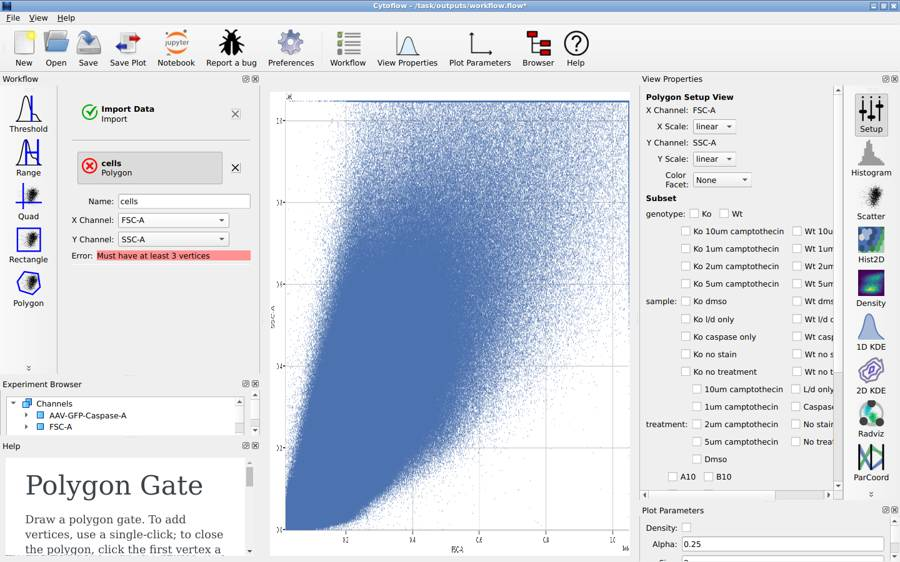
text(await tools.exec_command({cmd:"cu click 408 714 && cu click 1168 202 && cu key l && cu key Return && cu click 1166 255 && cu key l && cu key Return && cu click 1098 844 && cu screenshot /tmp/logcells.png","max_output_tokens":1000}));image((await tools.view_image({path:"/tmp/logcells.png"})).image_url);
Script completed Wall time 0.6 seconds Output:
{"chunk_id":"9b5036","wall_time_seconds":0.417264316,"exit_code":0,"original_token_count":5,"output":"/tmp/logcells.png\n"}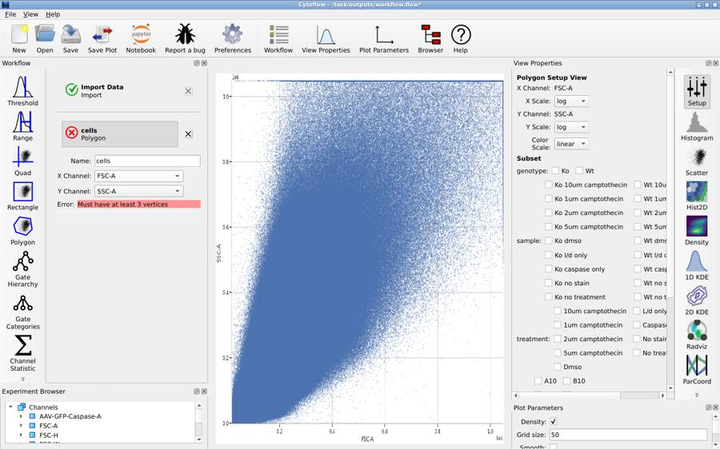
text(await tools.exec_command({cmd:"cu click 1274 706 && cu key ctrl+s && cu screenshot /tmp/log2.png","max_output_tokens":1000}));image((await tools.view_image({path:"/tmp/log2.png"})).image_url);
Script completed Wall time 0.3 seconds Output:
{"chunk_id":"7d2fcf","wall_time_seconds":0.066120193,"exit_code":0,"original_token_count":4,"output":"/tmp/log2.png\n"}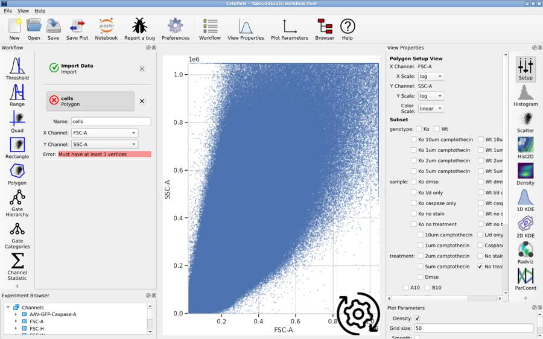
text(await tools.web__run({search_query:[{q:"site.cytoflow.readthedocs.io 1.3.2 GUI gate hierarchy channel statistic count table export"}],response_length:"long"}));
text(await tools.exec_command({cmd:"cu screenshot /tmp/log3.png","max_output_tokens":1000}));image((await tools.view_image({path:"/tmp/log3.png"})).image_url);
Script completed Wall time 1.1 seconds Output:
Table — Cytoflow 1.3.2 documentation (https://cytoflow.readthedocs.io/en/1.3.2/user_manual/reference/views/table.html)
citeturn1search0 [wordlim: 200] Crawled: 4 months ago; The column in the statistic to view (often a channel name.) ... Export the table to a CSV file.
# Table#
Make a table out of a statistic. The table can then be exported.
Statistic
Which statistic to view.
Feature
The column in the statistic to view (often a channel name.)
Rows
Which variable to use for the rows
Subrows
Which variable to use for subrows.
Columns
Which variable to use for the columns.
Subcolumns
Which variable to use for the subcolumns.
Export
Export the table to a CSV file.--------------------------------------------------------------------------------
cytoflowgui.view_plugins.table — Cytoflow 1.3.2 documentation (https://cytoflow.readthedocs.io/en/1.3.2/dev_manual/api/cytoflowgui.view_plugins.table.html)
citeturn1search1 [wordlim: 200] Crawled: 4 months ago; The column in the statistic to view (often a channel name.) ... Export the table to a CSV file.
class cytoflowgui.view_plugins.table.TableHandler(*args: Any, **kwargs: Any)[source]#
# cytoflowgui.view_plugins.table#
Make a table out of a statistic. The table can then be exported.
Statistic
Which statistic to view.
Feature
The column in the statistic to view (often a channel name.)
Rows
Which variable to use for the rows
Subrows
Which variable to use for subrows.
Columns
Which variable to use for the columns.
Subcolumns
Which variable to use for the subcolumns.
Export
Export the table to a CSV file.
class cytoflowgui.view_plugins.table.TableHandler(*args: Any, **kwargs: Any)[source]#
Bases: `ViewHandler`
indices = <traits.traits.ForwardProperty object>#
levels = <traits.traits.ForwardProperty object>#
features = <traits.traits.ForwardProperty object>#
export = <traits.trait_types.Event object>#
class cytoflowgui.view_plugins.table.TablePlugin[source]#
Bases: `Plugin`, `PluginHelpMixin`
view_id = 'cytoflow.view.table'#
short_name = 'Table'#
get_view()[source]#
get_handler(model, context)[source]#
get_icon()[source]#--------------------------------------------------------------------------------
Guide: Using statistics to summarize data — Cytoflow 1.3.2 documentation (https://cytoflow.readthedocs.io/en/1.3.2/user_manual/guides/statistics.html)
citeturn1search2 [wordlim: 200] Crawled: 4 months ago; `Cytoflow` calls these summary values – such as the mean or count of a set of events – statistics. ... /../_images/stats2.png ... /../_images/stats3.png ... For each subset of the data – each unique value of Drug – `Cytoflow` applies the function I asked for (in this case, Geom.Mean – the geometric mean – to the channel I said – in this case, FITC_A. ... If you would like to export this data, you can of course do so with the Export button. ... However, some functions reduce the size of the statistic – for example, if we apply Geom.Mean again, we only get a table with one column (because it’s taking the geometric mean of all the values in each group):
# Guide: Using statistics to summarize data#
Summarizing data is a key step in flow cytometry. Even simple, “traditional” analyses involve drawing gates and counting the number of events in them.
What proportion of these events were T-cells?#
`Cytoflow` calls these summary values – such as the mean or count of a set of events – statistics. Here, I’m using the word “statistic” in the technical sense, as in “a quantity that is computed from a sample.”
Another key insight is that we are usually interested in how a statistic changes across our experiment. For example, let’s say that I have some cells that express GFP, and I want to know how the amount of GFP expression changes as I alter the amount of a small molecule that I treat my cells with. I can create a statistic, then plot that statistic, to answer my question. Let’s see how I might do so. (I’m using data from the examples-basic directory – feel free to follow along.)
First, I need to import my data. In my experiment setup (in the Import Data operation), I must specify the conditions for each tube – that is, how the cells in each tube are different. In this case, I treated each tube with a different concentration of my drug, so I use “Drug” as a condition.
Using a histogram (and a vertical facet), I can see that the GFP intensity (as displayed in the FITC-A channel) is in fact changing when I vary the amount of drug I treat the cells with.
Image: ../../_images/stats2.png
Each distribution seems pretty symmetrical when plotted on a logarithmic scale, so let’s use a geometric mean to summarize them. I can do that with a Channel Statistics operation (the one whose button is a big sigma.)
Image: ../../_images/stats3.png
Note that I’ve set a name for the statistic, the channel I want to summarize, and the function I want to apply. Probably the most important – and most confusing! – parameter is Group By. This specifies how I want to `Cytoflow` to group the data before applying Function to channel – in this case, I’ve set it to Drug. Here’s the order that things happen in:
1. Cytoflow sees how many different values of the Drug parameter are in the data set.
2. It separates the data into groups – subsets – by those different values of Drug. If each tube has a different Drug value, then each of those subsets is the events from a single tube. However, if I had multiple tubes with the same **Drug* value, those tubes would be combined.*
3. For each subset of the data – each unique value of Drug – `Cytoflow` applies the function I asked for (in this case, Geom.Mean – the geometric mean – to the channel I said – in this case, FITC_A.
This results in a table of those summary numbers for each subset. You can view this table directly (with the Table View, natch) – here’s what we
… [26,631 more characters not shown]{"chunk_id":"5c478b","wall_time_seconds":0.00000327,"exit_code":0,"original_token_count":4,"output":"/tmp/log3.png\n"}text(await tools.exec_command({cmd:"cu screenshot /tmp/log4.png","max_output_tokens":1000}));image((await tools.view_image({path:"/tmp/log4.png"})).image_url);
Script completed Wall time 0.1 seconds Output:
{"chunk_id":"1f83b2","wall_time_seconds":0.00000412,"exit_code":0,"original_token_count":4,"output":"/tmp/log4.png\n"}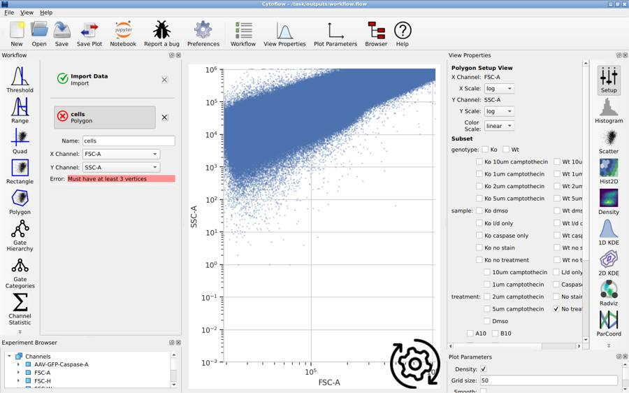
text(await tools.exec_command({cmd:"cu screenshot /tmp/log5.png","max_output_tokens":1000}));image((await tools.view_image({path:"/tmp/log5.png"})).image_url);
Script completed Wall time 0.1 seconds Output:
{"chunk_id":"567245","wall_time_seconds":0.00000328,"exit_code":0,"original_token_count":4,"output":"/tmp/log5.png\n"}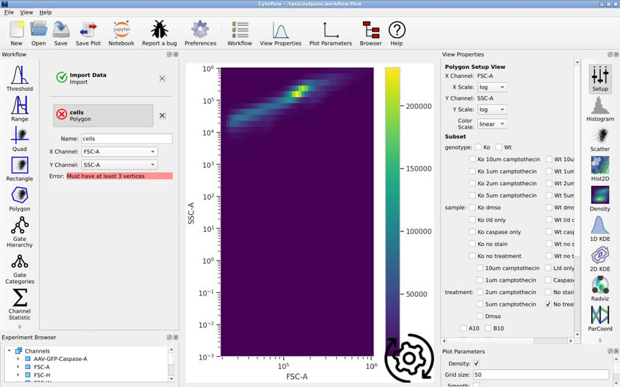
text(await tools.exec_command({cmd:"cu scroll 1275 868 down 5 && cu screenshot /tmp/params.png","max_output_tokens":1000}));image((await tools.view_image({path:"/tmp/params.png"})).image_url);
Script completed Wall time 0.6 seconds Output:
{"chunk_id":"4f3f96","wall_time_seconds":0.421418404,"exit_code":0,"original_token_count":4,"output":"/tmp/params.png\n"}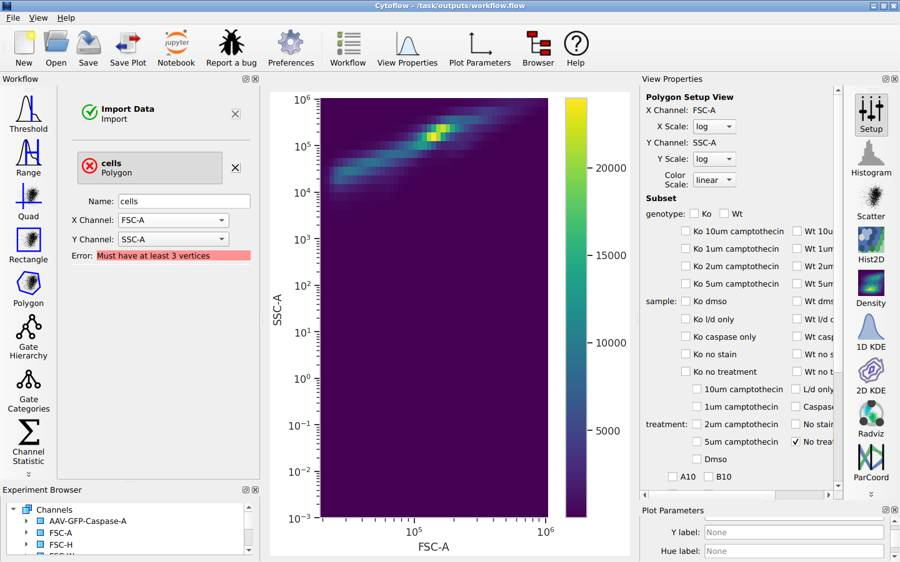
text(await tools.exec_command({cmd:"cu drag 1203 805 1203 590 && cu scroll 1283 738 down 3 && cu screenshot /tmp/params2.png","max_output_tokens":1000}));image((await tools.view_image({path:"/tmp/params2.png"})).image_url);
Script completed Wall time 0.4 seconds Output:
{"chunk_id":"116f3a","wall_time_seconds":0.222496268,"exit_code":0,"original_token_count":5,"output":"/tmp/params2.png\n"}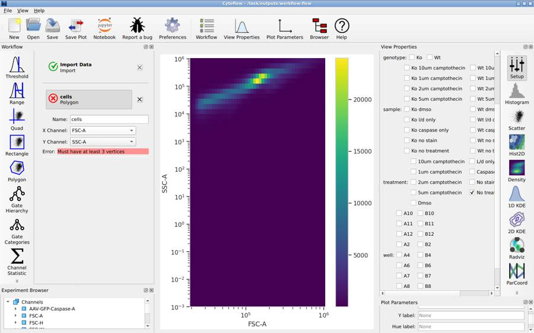
text(await tools.exec_command({cmd:"cu drag 1170 800 1170 540 && cu screenshot /tmp/resize.png","max_output_tokens":1000}));image((await tools.view_image({path:"/tmp/resize.png"})).image_url);
Script completed Wall time 0.1 seconds Output:
{"chunk_id":"ac47cf","wall_time_seconds":0.00000375,"exit_code":0,"original_token_count":4,"output":"/tmp/resize.png\n"}text(await tools.exec_command({cmd:"cu click 1430 127 && cu screenshot /tmp/params3.png","max_output_tokens":1000}));image((await tools.view_image({path:"/tmp/params3.png"})).image_url);
Script completed Wall time 0.2 seconds Output:
{"chunk_id":"dd8311","wall_time_seconds":0.013736154,"exit_code":0,"original_token_count":5,"output":"/tmp/params3.png\n"}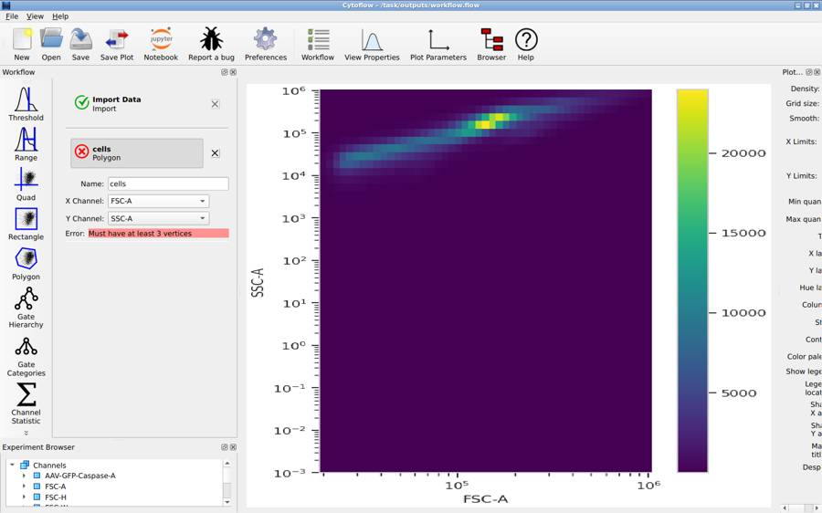
text(await tools.exec_command({cmd:"cu drag 1356 514 1020 514 && cu screenshot /tmp/params4.png","max_output_tokens":1000}));image((await tools.view_image({path:"/tmp/params4.png"})).image_url);
Script completed Wall time 0.1 seconds Output:
{"chunk_id":"2d3b1e","wall_time_seconds":0.00000349,"exit_code":0,"original_token_count":5,"output":"/tmp/params4.png\n"}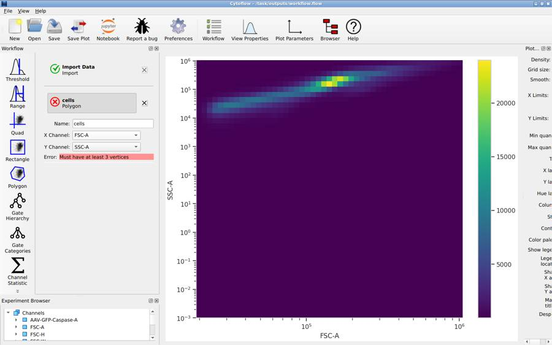
text(await tools.exec_command({cmd:"cu drag 1363 508 1018 508 && cu screenshot /tmp/params5.png","max_output_tokens":1000}));image((await tools.view_image({path:"/tmp/params5.png"})).image_url);
Script completed Wall time 0.1 seconds Output:
{"chunk_id":"a801af","wall_time_seconds":0.00000398,"exit_code":0,"original_token_count":5,"output":"/tmp/params5.png\n"}text(await tools.exec_command({cmd:"cu --help","max_output_tokens":2000}));
Script completed
Wall time 0.0 seconds
Output:
{"chunk_id":"a1e5ac","wall_time_seconds":0.00000385,"exit_code":1,"original_token_count":116,"output":"# Computer-use helper: the agent's only way to act on the screen.\n# cu screenshot [path] -> PNG of the screen (default /tmp/screen.png); prints path\n# cu click X Y [left|right|double]\n# cu move X Y | cu drag X1 Y1 X2 Y2 | cu scroll X Y up|down [N]\n# cu type \"text\" (keystrokes) | cu paste \"text\" (clipboard) | cu key KEYS (e.g. ctrl+s, Return)\n# cu cursor -> current mouse position\nexport DISPLAY=${DISPLAY:-:1}\ncmd=$1; shift\n"}text(await tools.exec_command({cmd:"cu click 1394 127 double && cu screenshot /tmp/floatparams.png","max_output_tokens":1000}));image((await tools.view_image({path:"/tmp/floatparams.png"})).image_url);
Script completed Wall time 0.3 seconds Output:
{"chunk_id":"6a6f86","wall_time_seconds":0.112257593,"exit_code":0,"original_token_count":6,"output":"/tmp/floatparams.png\n"}text(await tools.exec_command({cmd:"cu drag 1391 127 1037 127 && cu screenshot /tmp/floatparams2.png","max_output_tokens":1000}));image((await tools.view_image({path:"/tmp/floatparams2.png"})).image_url);
Script completed Wall time 0.1 seconds Output:
{"chunk_id":"7bda26","wall_time_seconds":0.00000355,"exit_code":0,"original_token_count":6,"output":"/tmp/floatparams2.png\n"}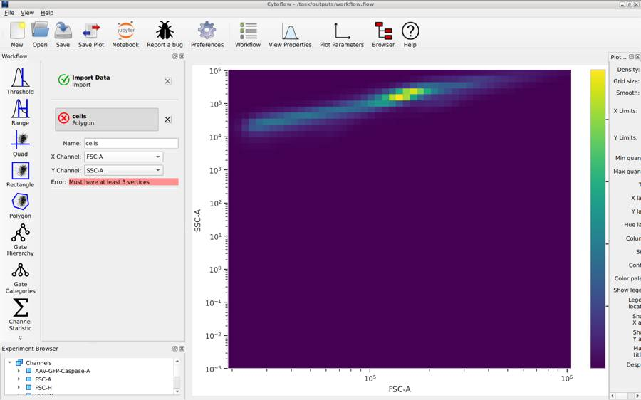
text(await tools.exec_command({cmd:"cu click 1432 128 && cu click 650 72 && cu screenshot /tmp/restore.png","max_output_tokens":1000}));image((await tools.view_image({path:"/tmp/restore.png"})).image_url);
Script completed Wall time 0.3 seconds Output:
{"chunk_id":"601d2c","wall_time_seconds":0.12048333,"exit_code":0,"original_token_count":5,"output":"/tmp/restore.png\n"}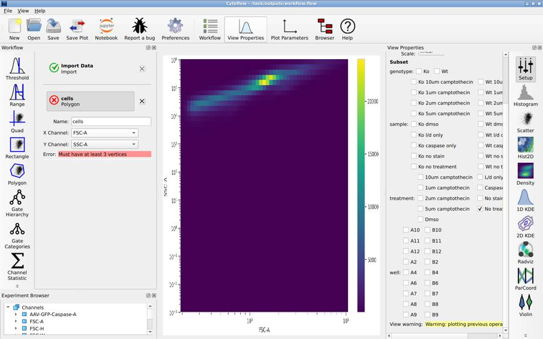
text(await tools.exec_command({cmd:"cu click 770 72 && cu screenshot /tmp/paramshow.png","max_output_tokens":1000}));image((await tools.view_image({path:"/tmp/paramshow.png"})).image_url);
Script completed Wall time 0.2 seconds Output:
{"chunk_id":"f67532","wall_time_seconds":0.017209343,"exit_code":0,"original_token_count":5,"output":"/tmp/paramshow.png\n"}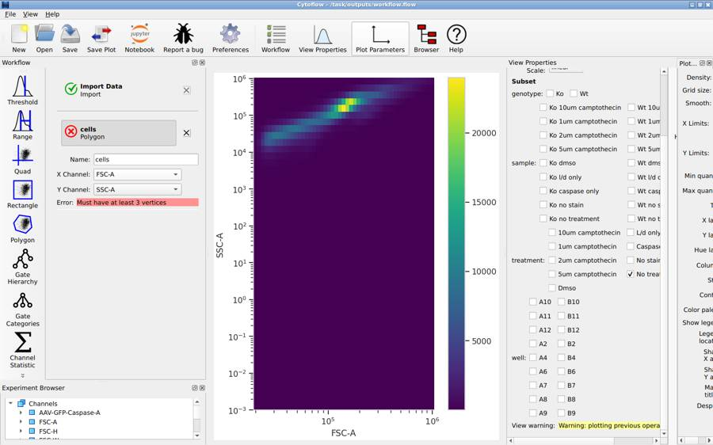
text(await tools.exec_command({cmd:"cu click 1392 127 && cu key alt+F7 && cu move 1051 126 && cu key Return && cu screenshot /tmp/movepane.png","max_output_tokens":1000}));image((await tools.view_image({path:"/tmp/movepane.png"})).image_url);
Script completed Wall time 0.2 seconds Output:
{"chunk_id":"d89007","wall_time_seconds":0.061355114,"exit_code":0,"original_token_count":5,"output":"/tmp/movepane.png\n"}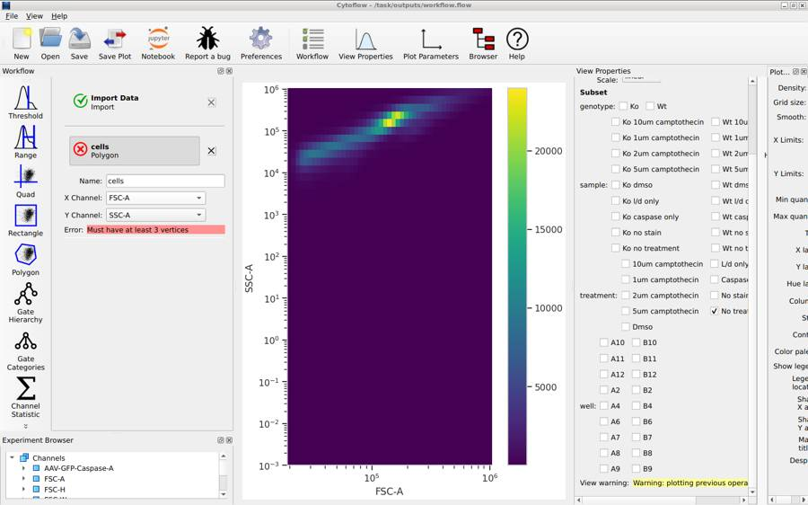
text(await tools.exec_command({cmd:"cu click 1433 127 && cu screenshot /tmp/befgate.png","max_output_tokens":1000}));image((await tools.view_image({path:"/tmp/befgate.png"})).image_url);
Script completed Wall time 0.2 seconds Output:
{"chunk_id":"2962c5","wall_time_seconds":0.017276193,"exit_code":0,"original_token_count":5,"output":"/tmp/befgate.png\n"}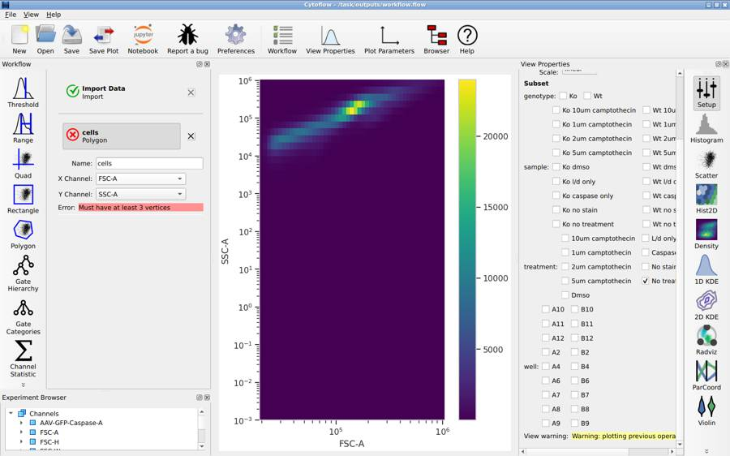
text(await tools.exec_command({cmd:"cu click 600 291 && cu click 600 217 && cu click 697 161 && cu click 870 161 && cu click 870 225 && cu click 708 291 && cu click 600 291 double && cu key ctrl+s && cu screenshot /tmp/cellgate.png","max_output_tokens":1000}));image((await tools.view_image({path:"/tmp/cellgate.png"})).image_url);
Script completed Wall time 1.0 seconds Output:
{"chunk_id":"ed9b2d","wall_time_seconds":0.782373354,"exit_code":0,"original_token_count":5,"output":"/tmp/cellgate.png\n"}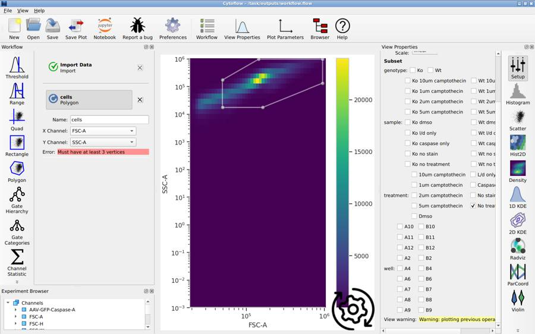
text(await tools.exec_command({cmd:"cu click 45 454 && cu screenshot /tmp/singletstart.png","max_output_tokens":1000}));image((await tools.view_image({path:"/tmp/singletstart.png"})).image_url);
Script completed Wall time 0.2 seconds Output:
{"chunk_id":"d0b967","wall_time_seconds":0.018761592,"exit_code":0,"original_token_count":6,"output":"/tmp/singletstart.png\n"}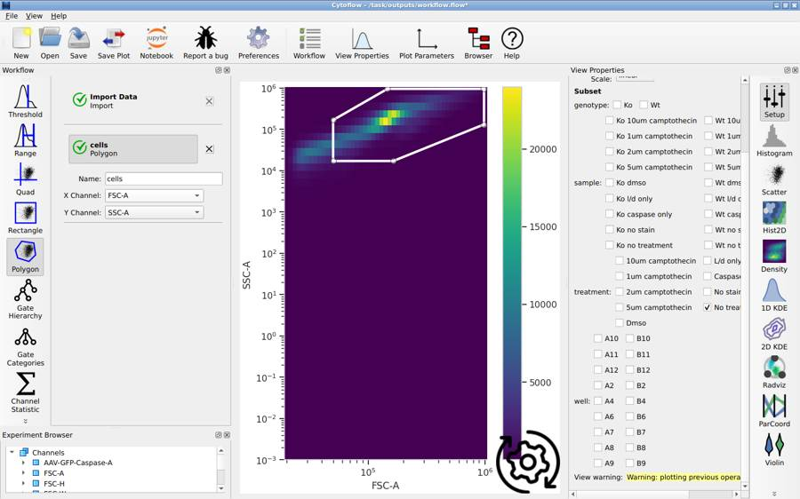
text(await tools.exec_command({cmd:"cu screenshot /tmp/singletstart2.png","max_output_tokens":1000}));image((await tools.view_image({path:"/tmp/singletstart2.png"})).image_url);
Script completed Wall time 0.1 seconds Output:
{"chunk_id":"194fbd","wall_time_seconds":0.00000422,"exit_code":0,"original_token_count":6,"output":"/tmp/singletstart2.png\n"}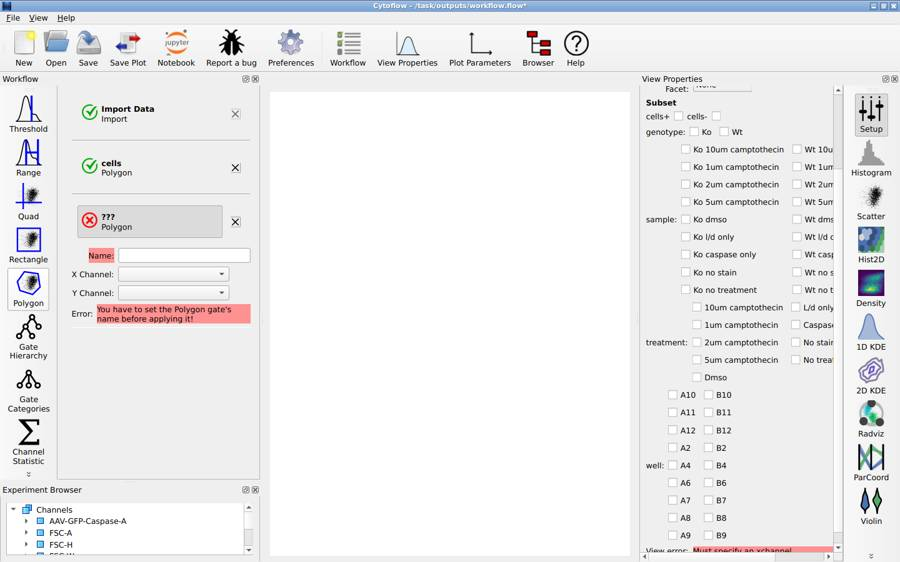
text(await tools.exec_command({cmd:"cu click 290 409 && cu type singlets && cu click 355 439 && cu key f && cu key Return && cu click 355 470 && cu key f && cu key Down && cu key Return && cu click 1086 185 && cu click 1273 575 && cu scroll 1260 297 up 10 && cu screenshot /tmp/singletsetup.png","max_output_tokens":1000}));image((await tools.view_image({path:"/tmp/singletsetup.png"})).image_url);
Script completed Wall time 1.9 seconds Output:
{"chunk_id":"2596bf","wall_time_seconds":1.727644791,"exit_code":0,"original_token_count":6,"output":"/tmp/singletsetup.png\n"}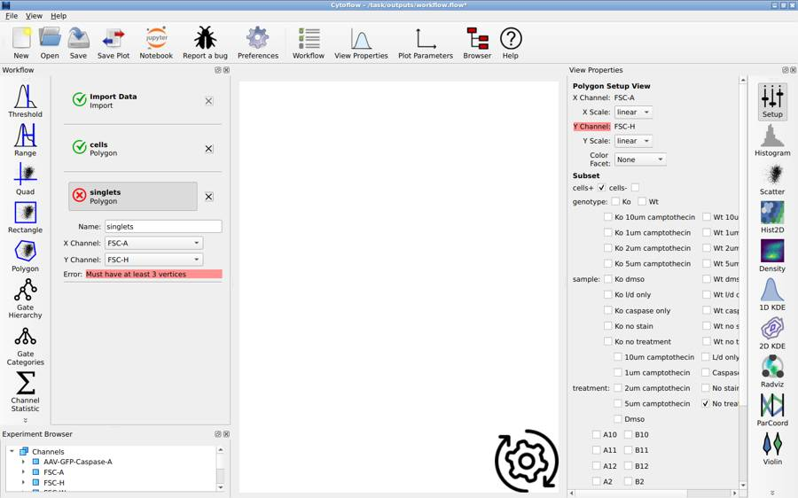
text(await tools.exec_command({cmd:"cu screenshot /tmp/singletplot.png","max_output_tokens":1000}));image((await tools.view_image({path:"/tmp/singletplot.png"})).image_url);
Script completed Wall time 0.1 seconds Output:
{"chunk_id":"da0505","wall_time_seconds":0.00000343,"exit_code":0,"original_token_count":6,"output":"/tmp/singletplot.png\n"}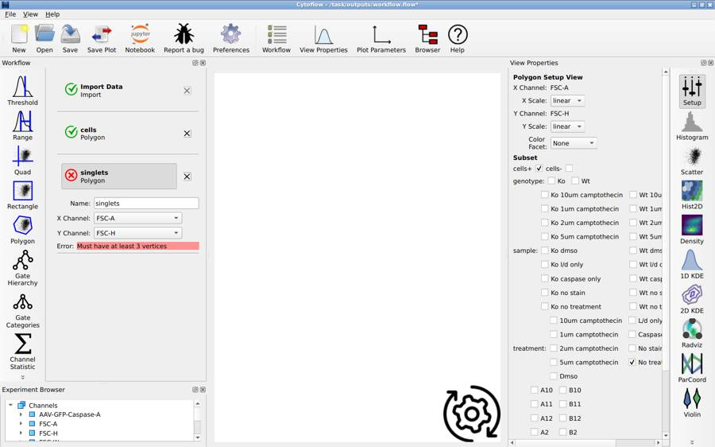
text(await tools.exec_command({cmd:"cu screenshot /tmp/singletplot2.png","max_output_tokens":1000}));image((await tools.view_image({path:"/tmp/singletplot2.png"})).image_url);
Script completed Wall time 0.1 seconds Output:
{"chunk_id":"de4784","wall_time_seconds":0.00000331,"exit_code":0,"original_token_count":6,"output":"/tmp/singletplot2.png\n"}text(await tools.exec_command({cmd:"cu click 355 469 && cu key f && cu key Down && cu key Down && cu key Return && cu screenshot /tmp/width.png","max_output_tokens":1000}));image((await tools.view_image({path:"/tmp/width.png"})).image_url);
Script completed Wall time 0.3 seconds Output:
{"chunk_id":"20f9a8","wall_time_seconds":0.087608593,"exit_code":0,"original_token_count":4,"output":"/tmp/width.png\n"}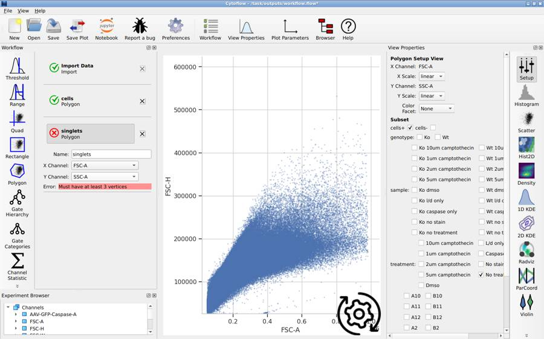
text(await tools.exec_command({cmd:"cu click 355 469 && cu screenshot /tmp/widthmenu.png","max_output_tokens":1000}));image((await tools.view_image({path:"/tmp/widthmenu.png"})).image_url);
Script completed Wall time 0.2 seconds Output:
{"chunk_id":"040ba6","wall_time_seconds":0.033542676,"exit_code":0,"original_token_count":5,"output":"/tmp/widthmenu.png\n"}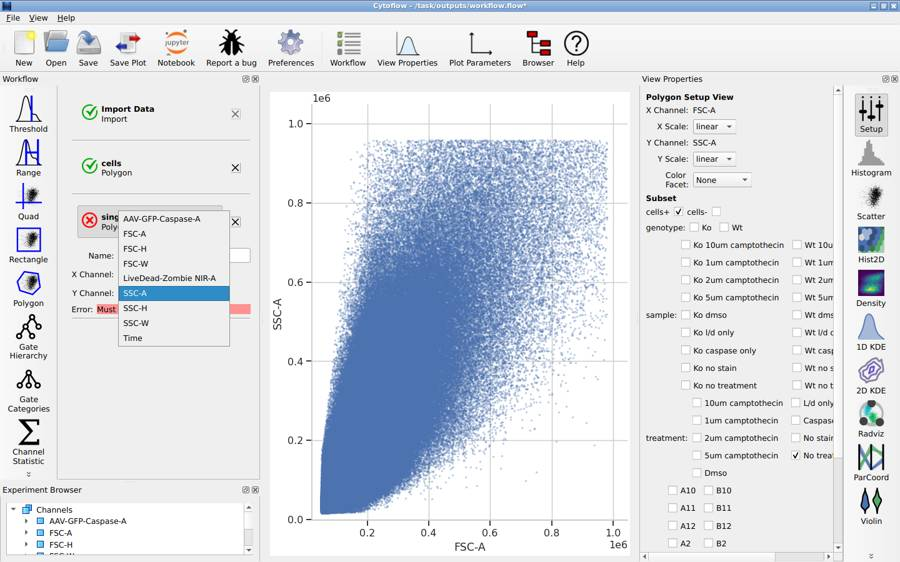
text(await tools.exec_command({cmd:"cu click 223 422 && cu key ctrl+s && cu screenshot /tmp/fscw.png","max_output_tokens":1000}));image((await tools.view_image({path:"/tmp/fscw.png"})).image_url);
Script completed Wall time 0.2 seconds Output:
{"chunk_id":"ec3965","wall_time_seconds":0.062408194,"exit_code":0,"original_token_count":4,"output":"/tmp/fscw.png\n"}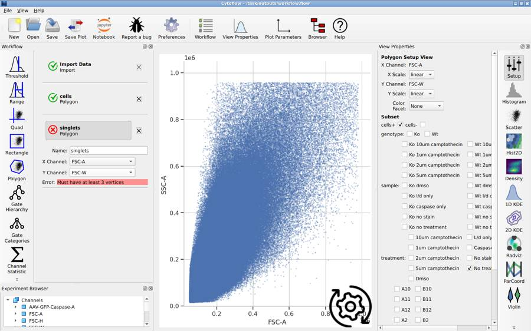
text(await tools.exec_command({cmd:"cu screenshot /tmp/fscw2.png","max_output_tokens":1000}));image((await tools.view_image({path:"/tmp/fscw2.png"})).image_url);
Script completed Wall time 0.1 seconds Output:
{"chunk_id":"8fac8e","wall_time_seconds":0.00000336,"exit_code":0,"original_token_count":4,"output":"/tmp/fscw2.png\n"}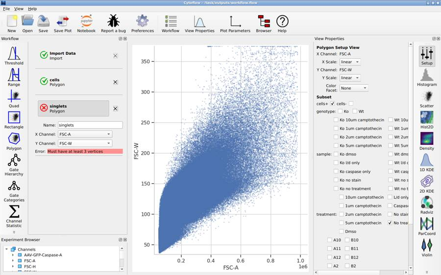
text(await tools.exec_command({cmd:"cu click 354 469 && cu key Home && cu key Down && cu key Down && cu key Return && cu screenshot /tmp/singletreturn.png","max_output_tokens":1000}));image((await tools.view_image({path:"/tmp/singletreturn.png"})).image_url);
Script completed Wall time 0.3 seconds Output:
{"chunk_id":"d1e08d","wall_time_seconds":0.09423759,"exit_code":0,"original_token_count":6,"output":"/tmp/singletreturn.png\n"}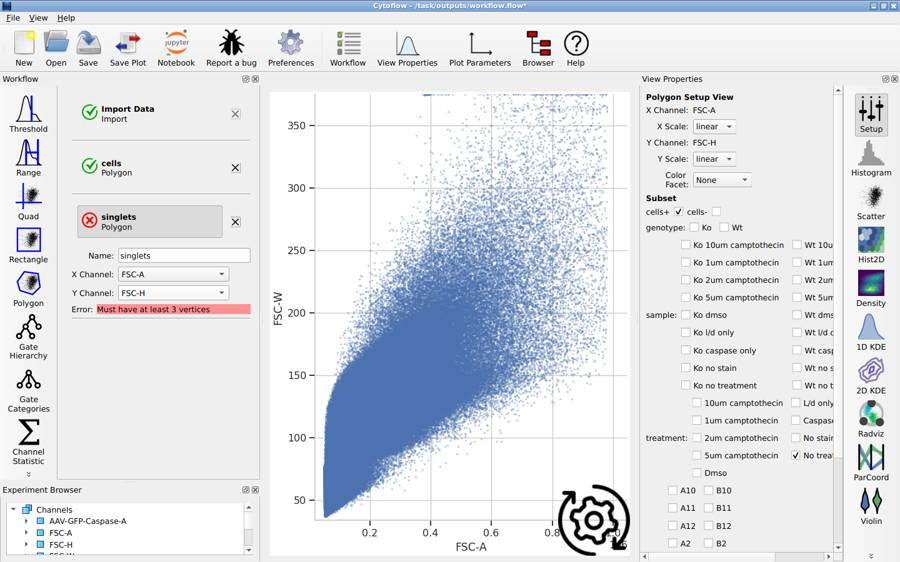
text(await tools.exec_command({cmd:"cu screenshot /tmp/singletready.png","max_output_tokens":1000}));image((await tools.view_image({path:"/tmp/singletready.png"})).image_url);
Script completed Wall time 0.1 seconds Output:
{"chunk_id":"eece7f","wall_time_seconds":0.00000341,"exit_code":0,"original_token_count":6,"output":"/tmp/singletready.png\n"}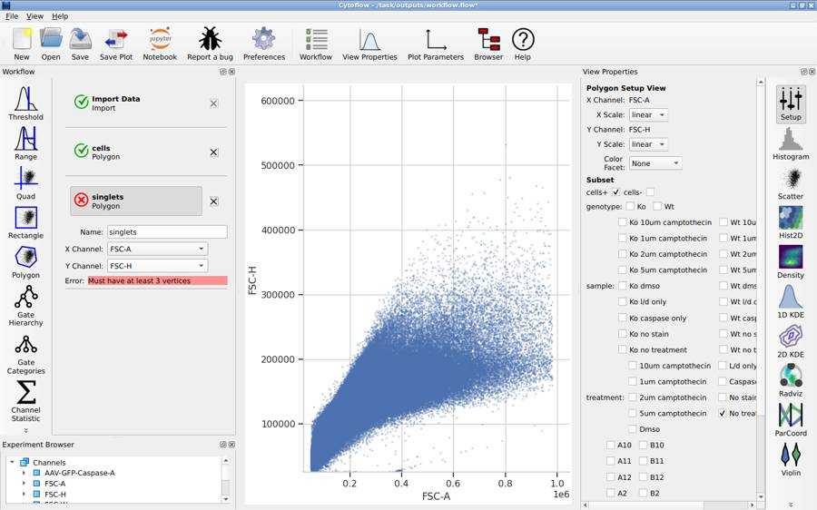
text(await tools.exec_command({cmd:"cu click 544 825 && cu click 544 770 && cu click 617 610 && cu click 732 463 && cu click 846 291 && cu click 846 543 && cu click 640 760 && cu click 544 825 double && cu key ctrl+s && cu screenshot /tmp/singlets_gate.png","max_output_tokens":1000}));image((await tools.view_image({path:"/tmp/singlets_gate.png"})).image_url);
Script completed Wall time 1.1 seconds Output:
{"chunk_id":"ee557a","wall_time_seconds":0.897028027,"exit_code":0,"original_token_count":6,"output":"/tmp/singlets_gate.png\n"}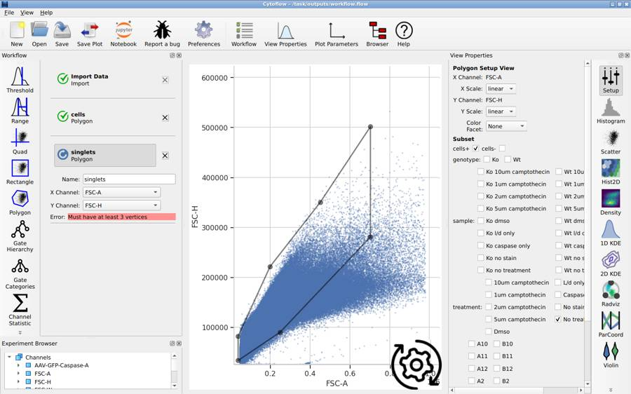
text(await tools.exec_command({cmd:"cu click 44 245 && cu screenshot /tmp/liveadd.png","max_output_tokens":1000}));image((await tools.view_image({path:"/tmp/liveadd.png"})).image_url);
Script completed Wall time 0.2 seconds Output:
{"chunk_id":"cad3fc","wall_time_seconds":0.025555259,"exit_code":0,"original_token_count":5,"output":"/tmp/liveadd.png\n"}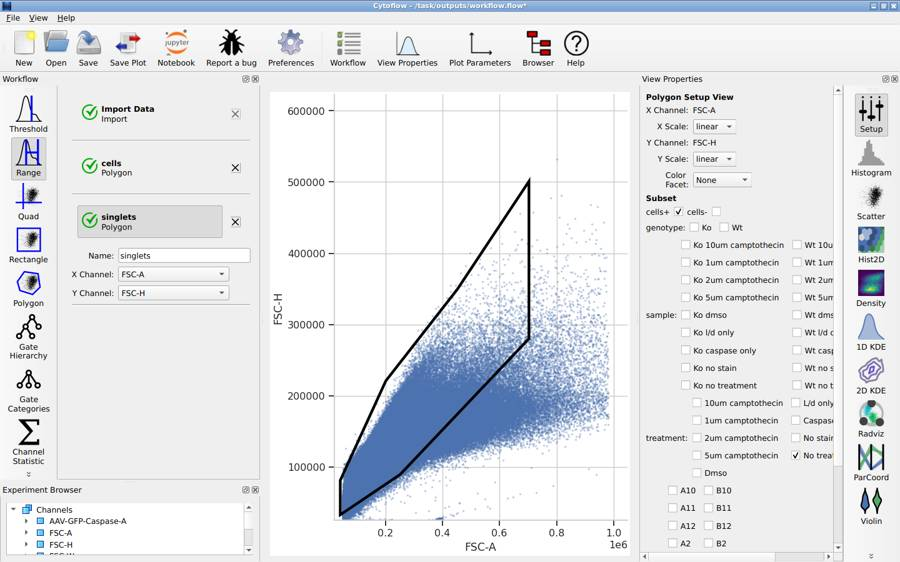
text(await tools.exec_command({cmd:"cu screenshot /tmp/liveadd2.png","max_output_tokens":1000}));image((await tools.view_image({path:"/tmp/liveadd2.png"})).image_url);
Script completed Wall time 0.1 seconds Output:
{"chunk_id":"4efc9a","wall_time_seconds":0.00000394,"exit_code":0,"original_token_count":5,"output":"/tmp/liveadd2.png\n"}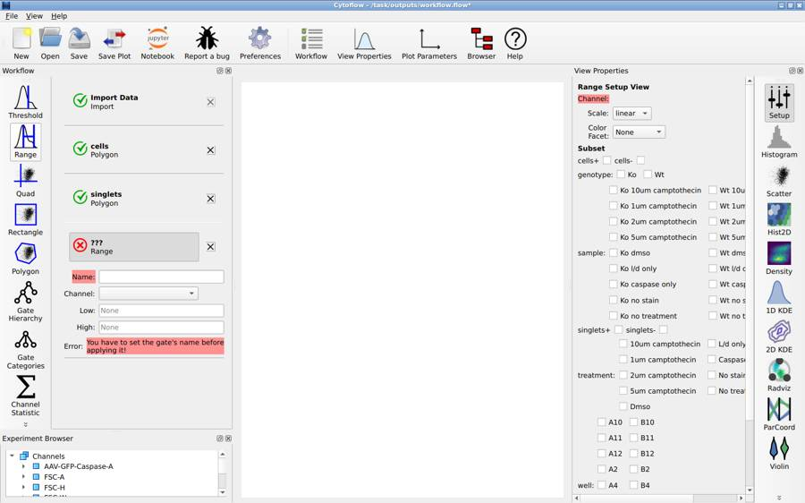
text(await tools.exec_command({cmd:"cu click 280 494 && cu type live && cu click 341 523 && cu key Home && cu key Down && cu key Down && cu key Down && cu key Down && cu key Return && cu click 1153 202 && cu key End && cu key Return && cu click 1086 286 && cu click 1106 588 && cu click 1274 615 && cu click 1274 671 && cu click 1180 236 && cu key End && cu key Up && cu key Return && cu screenshot /tmp/livesetup.png","max_output_tokens":1000}));image((await tools.view_image({path:"/tmp/livesetup.png"})).image_url);
Script completed Wall time 1.2 seconds Output:
{"chunk_id":"c384d0","wall_time_seconds":1.024878593,"exit_code":0,"original_token_count":5,"output":"/tmp/livesetup.png\n"}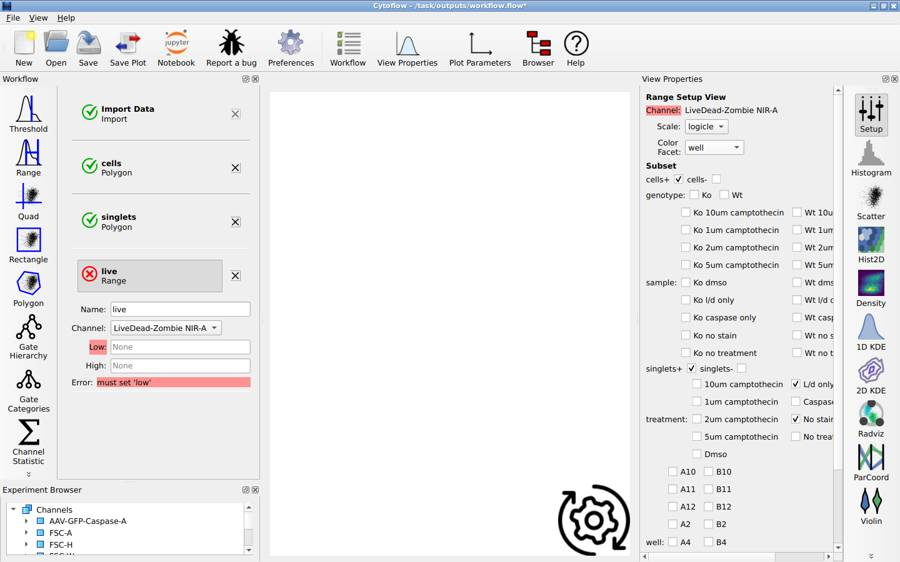
text(await tools.exec_command({cmd:"cu click 1177 235 && cu key t && cu key Return && cu screenshot /tmp/livehist.png","max_output_tokens":1000}));image((await tools.view_image({path:"/tmp/livehist.png"})).image_url);
Script completed Wall time 0.2 seconds Output:
{"chunk_id":"b0779f","wall_time_seconds":0.04962464,"exit_code":0,"original_token_count":5,"output":"/tmp/livehist.png\n"}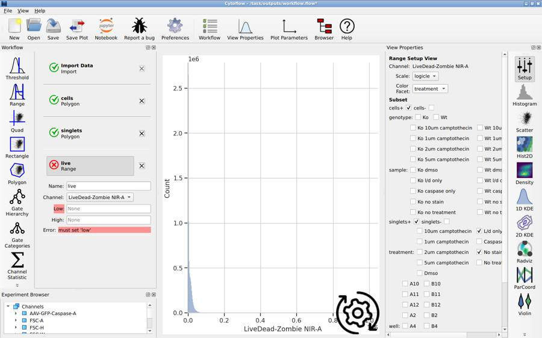
{
"duration_ms": 15000
}Wall time: 15.0053 seconds Sleep completed.
text(await tools.exec_command({cmd:"cu screenshot /tmp/livehist2.png","max_output_tokens":1000}));image((await tools.view_image({path:"/tmp/livehist2.png"})).image_url);
Script completed Wall time 0.1 seconds Output:
{"chunk_id":"380f56","wall_time_seconds":0.00000377,"exit_code":0,"original_token_count":5,"output":"/tmp/livehist2.png\n"}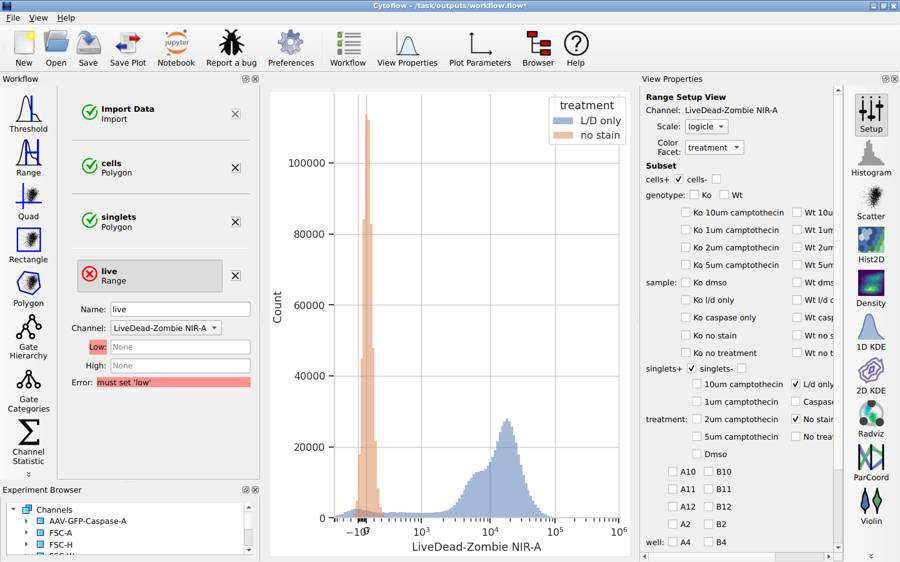
text(await tools.exec_command({cmd:"cu click 1273 642 && cu click 275 555 && cu key ctrl+a && cu type -1000000 && cu click 274 585 && cu key ctrl+a && cu type 3000 && cu key Tab && cu key ctrl+s && cu screenshot /tmp/livegate.png","max_output_tokens":1000}));image((await tools.view_image({path:"/tmp/livegate.png"})).image_url);
Script completed Wall time 0.8 seconds Output:
{"chunk_id":"54836a","wall_time_seconds":0.643597832,"exit_code":0,"original_token_count":5,"output":"/tmp/livegate.png\n"}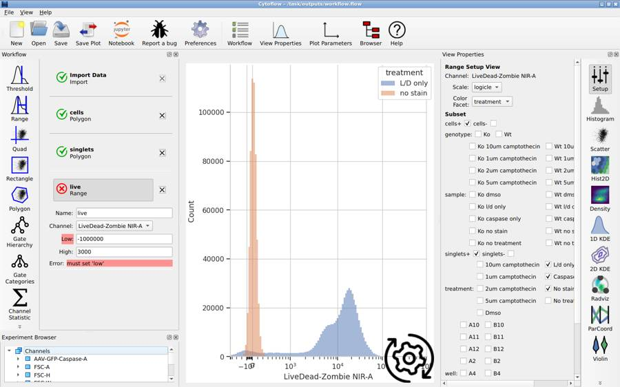
text(await tools.exec_command({cmd:"cu screenshot /tmp/livegate2.png","max_output_tokens":1000}));image((await tools.view_image({path:"/tmp/livegate2.png"})).image_url);
Script completed Wall time 0.1 seconds Output:
{"chunk_id":"9e3cfd","wall_time_seconds":0.00000351,"exit_code":0,"original_token_count":5,"output":"/tmp/livegate2.png\n"}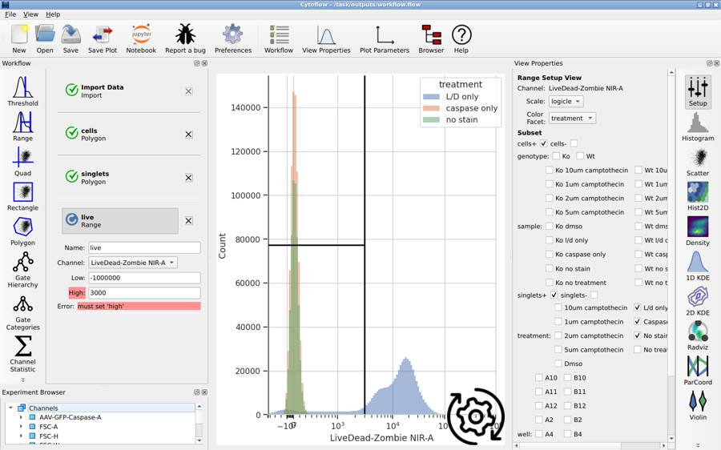
text(await tools.exec_command({cmd:"cu click 44 173 && cu screenshot /tmp/casadd.png","max_output_tokens":1000}));image((await tools.view_image({path:"/tmp/casadd.png"})).image_url);
Script completed Wall time 0.2 seconds Output:
{"chunk_id":"e4cdda","wall_time_seconds":0.020244041,"exit_code":0,"original_token_count":4,"output":"/tmp/casadd.png\n"}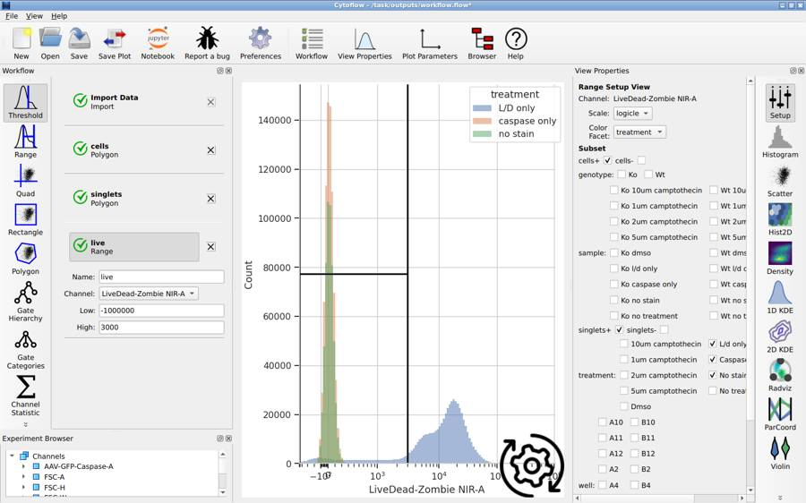
text(await tools.exec_command({cmd:"cu screenshot /tmp/casadd2.png","max_output_tokens":1000}));image((await tools.view_image({path:"/tmp/casadd2.png"})).image_url);
Script completed Wall time 0.1 seconds Output:
{"chunk_id":"9adf8b","wall_time_seconds":0.00000345,"exit_code":0,"original_token_count":5,"output":"/tmp/casadd2.png\n"}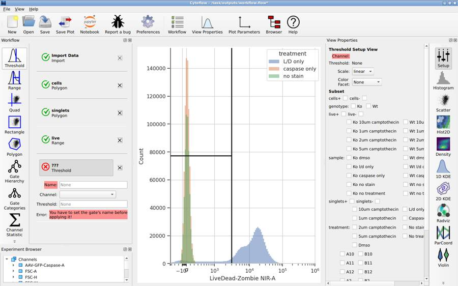
text(await tools.exec_command({cmd:"cu click 284 582 && cu key ctrl+a && cu type caspase_positive && cu click 353 612 && cu key Home && cu key Return && cu click 1165 225 && cu key End && cu key Return && cu click 1188 257 && cu key t && cu key Return && cu click 1085 309 && cu click 1106 633 && cu click 1273 657 && cu click 1273 685 && cu click 1273 713 && cu screenshot /tmp/cassetup.png","max_output_tokens":1000}));image((await tools.view_image({path:"/tmp/cassetup.png"})).image_url);
Script completed Wall time 1.6 seconds Output:
{"chunk_id":"0d58cd","wall_time_seconds":1.39263753,"exit_code":0,"original_token_count":5,"output":"/tmp/cassetup.png\n"}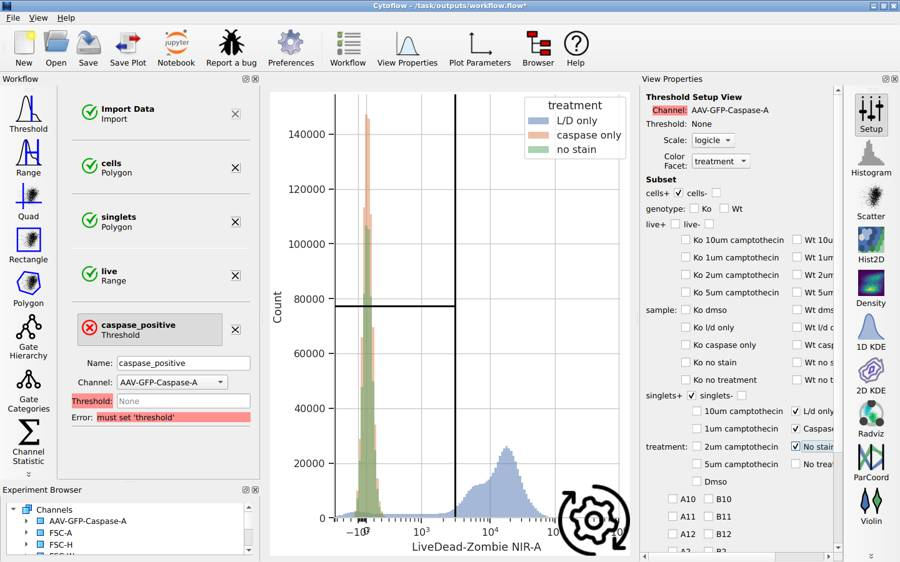
{
"duration_ms": 10000
}Wall time: 10.0031 seconds Sleep completed.
text(await tools.exec_command({cmd:"cu screenshot /tmp/cashist.png","max_output_tokens":1000}));image((await tools.view_image({path:"/tmp/cashist.png"})).image_url);
Script completed Wall time 0.1 seconds Output:
{"chunk_id":"3390d4","wall_time_seconds":0.00000415,"exit_code":0,"original_token_count":5,"output":"/tmp/cashist.png\n"}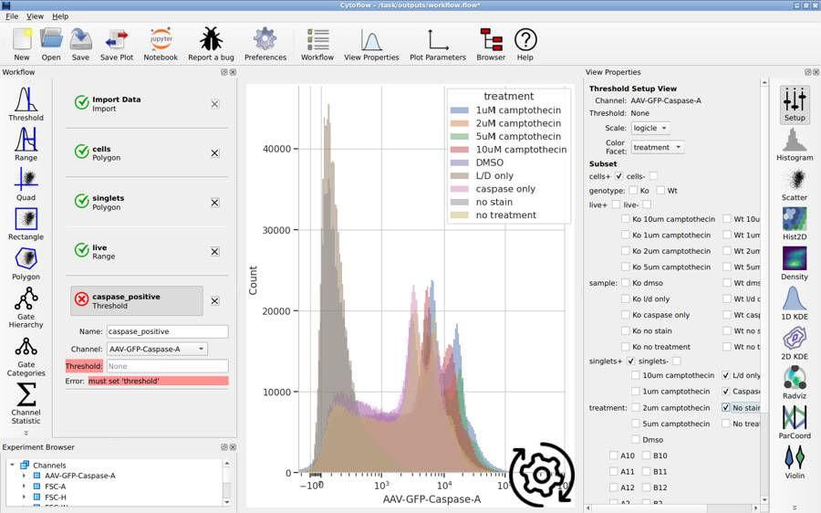
text(await tools.exec_command({cmd:"cu screenshot /tmp/cashist2.png","max_output_tokens":1000}));image((await tools.view_image({path:"/tmp/cashist2.png"})).image_url);
Script completed Wall time 0.1 seconds Output:
{"chunk_id":"a1fb6d","wall_time_seconds":0.00000343,"exit_code":0,"original_token_count":5,"output":"/tmp/cashist2.png\n"}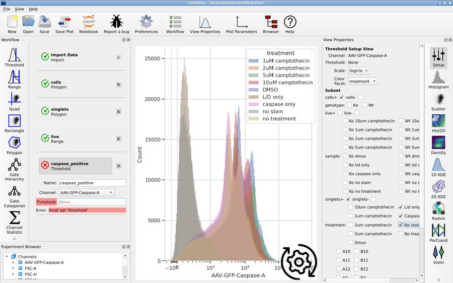
text(await tools.exec_command({cmd:"cu click 286 642 && cu key ctrl+a && cu type 1000 && cu key Tab && cu key ctrl+s && cu screenshot /tmp/casgate.png","max_output_tokens":1000}));image((await tools.view_image({path:"/tmp/casgate.png"})).image_url);
Script completed Wall time 0.4 seconds Output:
{"chunk_id":"0ee652","wall_time_seconds":0.195312058,"exit_code":0,"original_token_count":5,"output":"/tmp/casgate.png\n"}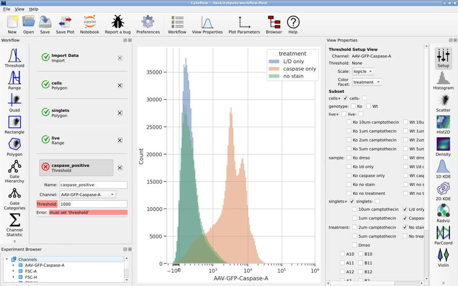
text(await tools.exec_command({cmd:"cu click 286 642 && cu key ctrl+a && cu type 2000 && cu key Tab && cu click 45 695 && cu screenshot /tmp/countadd.png","max_output_tokens":1000}));image((await tools.view_image({path:"/tmp/countadd.png"})).image_url);
Script completed Wall time 0.5 seconds Output:
{"chunk_id":"2aa80c","wall_time_seconds":0.274246886,"exit_code":0,"original_token_count":5,"output":"/tmp/countadd.png\n"}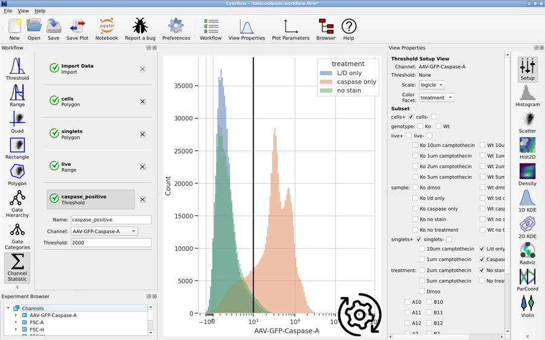
text(await tools.exec_command({cmd:"cu screenshot /tmp/countadd2.png","max_output_tokens":1000}));image((await tools.view_image({path:"/tmp/countadd2.png"})).image_url);
Script completed Wall time 0.1 seconds Output:
{"chunk_id":"5e43ad","wall_time_seconds":0.00000635,"exit_code":0,"original_token_count":5,"output":"/tmp/countadd2.png\n"}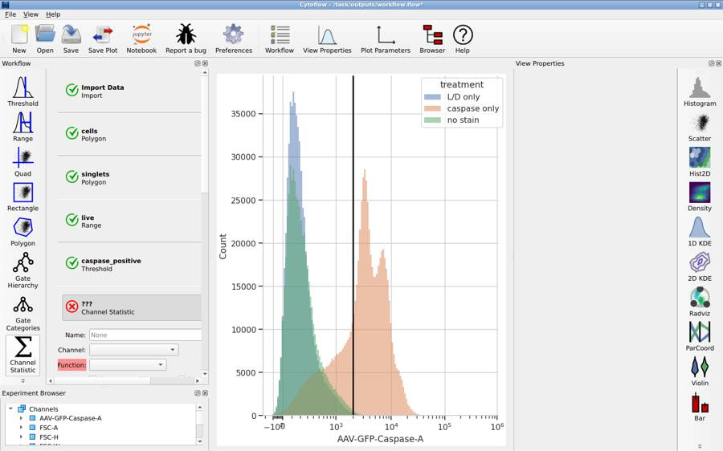
text(await tools.exec_command({cmd:"cu click 270 668 && cu key ctrl+a && cu type gate_counts && cu click 343 698 && cu key Home && cu key Down && cu key Return && cu click 319 728 && cu screenshot /tmp/countfunctions.png","max_output_tokens":1000}));image((await tools.view_image({path:"/tmp/countfunctions.png"})).image_url);
Script completed Wall time 0.8 seconds Output:
{"chunk_id":"73e1be","wall_time_seconds":0.582049837,"exit_code":0,"original_token_count":6,"output":"/tmp/countfunctions.png\n"}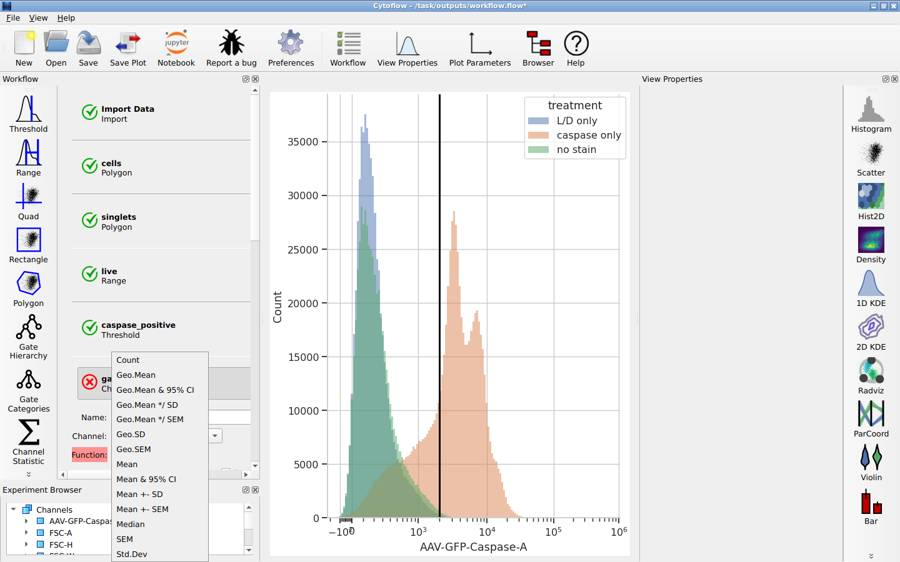
text(await tools.exec_command({cmd:"cu click 210 577 && cu scroll 320 672 down 6 && cu scroll 1394 775 down 8 && cu screenshot /tmp/countconfig.png","max_output_tokens":1000}));image((await tools.view_image({path:"/tmp/countconfig.png"})).image_url);
Script completed Wall time 1.6 seconds Output:
{"chunk_id":"7501b2","wall_time_seconds":1.428745635,"exit_code":0,"original_token_count":6,"output":"/tmp/countconfig.png\n"}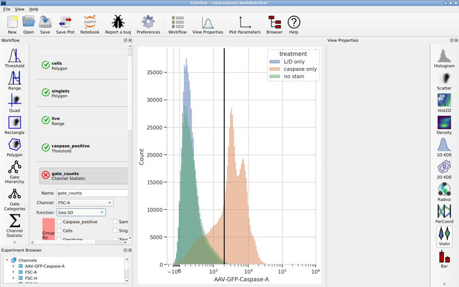
text(await tools.exec_command({cmd:"cu click 318 666 && cu key Home && cu key Return && cu scroll 320 696 down 15 && cu screenshot /tmp/countgroup.png","max_output_tokens":1000}));image((await tools.view_image({path:"/tmp/countgroup.png"})).image_url);
Script completed Wall time 1.7 seconds Output:
{"chunk_id":"1b72a8","wall_time_seconds":1.5541004630000002,"exit_code":0,"original_token_count":5,"output":"/tmp/countgroup.png\n"}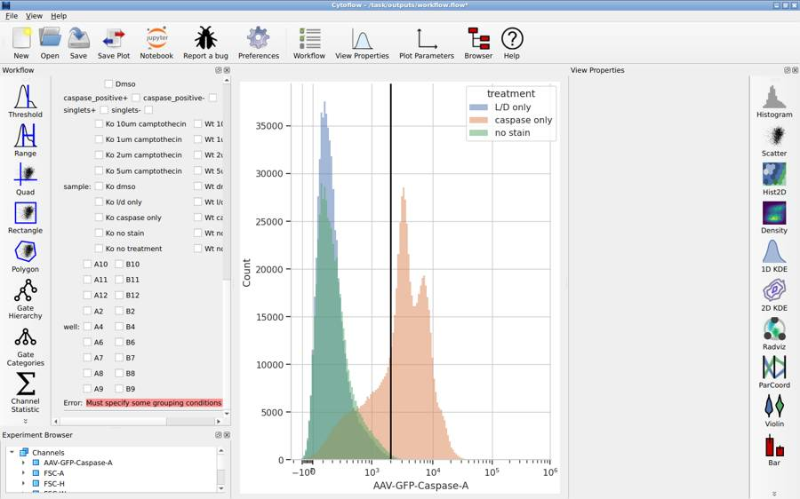
text(await tools.exec_command({cmd:"cu scroll 306 391 up 11 && cu screenshot /tmp/countgroup2.png","max_output_tokens":1000}));image((await tools.view_image({path:"/tmp/countgroup2.png"})).image_url);
Script completed Wall time 1.2 seconds Output:
{"chunk_id":"cf67ea","wall_time_seconds":1.016058497,"exit_code":0,"original_token_count":6,"output":"/tmp/countgroup2.png\n"}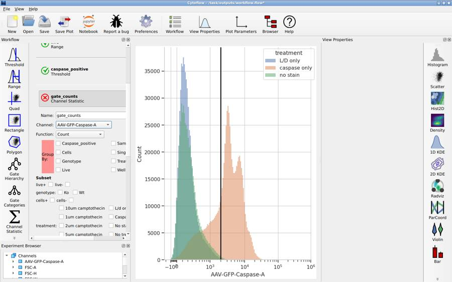
text(await tools.exec_command({cmd:"cu click 185 456 && cu click 185 486 && cu click 185 541 && cu click 361 486 && cu click 361 542 && cu click 1393 891 && cu click 1393 891 && cu click 1393 891 && cu screenshot /tmp/statviews.png","max_output_tokens":1000}));image((await tools.view_image({path:"/tmp/statviews.png"})).image_url);
Script completed Wall time 0.9 seconds Output:
{"chunk_id":"e1cfa1","wall_time_seconds":0.749337598,"exit_code":0,"original_token_count":5,"output":"/tmp/statviews.png\n"}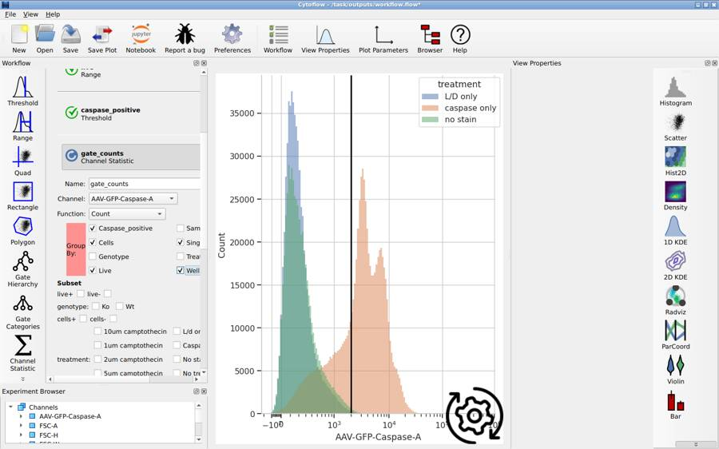
text(await tools.exec_command({cmd:"cu click 1374 891 && cu screenshot /tmp/statviews2.png","max_output_tokens":1000}));image((await tools.view_image({path:"/tmp/statviews2.png"})).image_url);
Script completed Wall time 0.2 seconds Output:
{"chunk_id":"b93f0d","wall_time_seconds":0.016258074,"exit_code":0,"original_token_count":5,"output":"/tmp/statviews2.png\n"}text(await tools.exec_command({cmd:"cu scroll 1354 804 down 6 && cu screenshot /tmp/statviews3.png","max_output_tokens":1000}));image((await tools.view_image({path:"/tmp/statviews3.png"})).image_url);
Script completed Wall time 0.7 seconds Output:
{"chunk_id":"435223","wall_time_seconds":0.517218555,"exit_code":0,"original_token_count":5,"output":"/tmp/statviews3.png\n"}text(await tools.exec_command({cmd:"cu click 1392 890 && cu screenshot /tmp/overflow.png","max_output_tokens":1000}));image((await tools.view_image({path:"/tmp/overflow.png"})).image_url);
Script completed Wall time 0.2 seconds Output:
{"chunk_id":"131dd3","wall_time_seconds":0.014831734,"exit_code":0,"original_token_count":5,"output":"/tmp/overflow.png\n"}text(await tools.exec_command({cmd:"cu move 1380 890 && cu screenshot /tmp/hover.png","max_output_tokens":1000}));image((await tools.view_image({path:"/tmp/hover.png"})).image_url);
Script completed Wall time 0.1 seconds Output:
{"chunk_id":"e598a8","wall_time_seconds":0.00000362,"exit_code":0,"original_token_count":4,"output":"/tmp/hover.png\n"}text(await tools.exec_command({cmd:"cu click 1403 527 && cu screenshot /tmp/longtable.png","max_output_tokens":1000}));image((await tools.view_image({path:"/tmp/longtable.png"})).image_url);
Script completed Wall time 0.2 seconds Output:
{"chunk_id":"2ecec1","wall_time_seconds":0.014573724,"exit_code":0,"original_token_count":5,"output":"/tmp/longtable.png\n"}text(await tools.exec_command({cmd:"cu click 1191 181 && cu key Home && cu key Return && cu move 993 137 && cu screenshot /tmp/longtable2.png","max_output_tokens":1000}));image((await tools.view_image({path:"/tmp/longtable2.png"})).image_url);
Script completed Wall time 0.2 seconds Output:
{"chunk_id":"587536","wall_time_seconds":0.04831362,"exit_code":0,"original_token_count":5,"output":"/tmp/longtable2.png\n"}text(await tools.exec_command({cmd:"cu click 1134 206 && cu screenshot /tmp/longtable3.png","max_output_tokens":1000}));image((await tools.view_image({path:"/tmp/longtable3.png"})).image_url);
Script completed Wall time 0.2 seconds Output:
{"chunk_id":"e0ec16","wall_time_seconds":0.02323263,"exit_code":0,"original_token_count":5,"output":"/tmp/longtable3.png\n"}text(await tools.exec_command({cmd:"cu click 980 599 && cu click 1189 181 && sleep 1 && cu screenshot /tmp/statdropdown.png","max_output_tokens":1000}));image((await tools.view_image({path:"/tmp/statdropdown.png"})).image_url);
Script completed Wall time 1.3 seconds Output:
{"chunk_id":"8af9f9","wall_time_seconds":1.130499879,"exit_code":0,"original_token_count":6,"output":"/tmp/statdropdown.png\n"}text(await tools.exec_command({cmd:"cu click 1137 205 && sleep 1 && cu click 1145 211 && sleep 1 && cu paste /task/outputs/cytoflow_gate_counts.csv && sleep 1 && cu screenshot /tmp/exportcounts.png","max_output_tokens":1000}));image((await tools.view_image({path:"/tmp/exportcounts.png"})).image_url);
Script completed Wall time 4.6 seconds Output:
{"chunk_id":"da78d4","wall_time_seconds":4.458629012,"exit_code":0,"original_token_count":6,"output":"/tmp/exportcounts.png\n"}text(await tools.exec_command({cmd:"cu click 981 567 && sleep 1 && cu key ctrl+s && head -15 /task/outputs/cytoflow_gate_counts.csv","max_output_tokens":2000}));
Script completed
Wall time 1.2 seconds
Output:
{"chunk_id":"0e1303","wall_time_seconds":0.986955549,"exit_code":0,"original_token_count":80,"output":"caspase_positive,cells,live,singlets,well,AAV-GFP-Caspase-A\n0,0,0,0,A10,5635.0\n0,0,0,0,A11,8417.0\n0,0,0,0,A12,8168.0\n0,0,0,0,A6,14337.0\n0,0,0,0,A7,14913.0\n0,0,0,0,A8,9880.0\n0,0,0,0,A9,12300.0\n0,0,0,0,B10,13271.0\n0,0,0,0,B11,368.0\n0,0,0,0,B12,97.0\n0,0,0,0,B2,4.0\n0,0,0,0,B6,23727.0\n0,0,0,0,B7,8337.0\n0,0,0,0,B8,11222.0\n"}text(await tools.exec_command({cmd:"python - <<'PY'\nimport pandas as pd\np=pd.read_csv('/task/inputs/plate_layout.csv'); d=pd.read_csv('/task/outputs/cytoflow_gate_counts.csv'); v='AAV-GFP-Caspase-A'\nmasks={'all_events':pd.Series(True,index=d.index),'cells':d.cells.eq(1),'singlets':d.cells.eq(1)&d.singlets.eq(1),'live':d.cells.eq(1)&d.singlets.eq(1)&d.live.eq(1),'caspase_positive':d.cells.eq(1)&d.singlets.eq(1)&d.caspase_positive.eq(1),'live_caspase':d.cells.eq(1)&d.singlets.eq(1)&d.live.eq(1)&d.caspase_positive.eq(1)}\nr=p[['well','sample']].copy()\nfor k,m in masks.items():r[k]=r.well.map(d.loc[m].groupby('well')[v].sum()).fillna(0).astype(int)\nfor k,parent in [('cells','all_events'),('singlets','cells'),('live','singlets'),('caspase_positive','singlets'),('live_caspase','live')]:r[k+'_pct']=100*r[k]/r[parent]\nr.to_csv('/task/outputs/gate_summary_draft.csv',index=False)\nprint(r.to_string(index=False,float_format=lambda x:f'{x:.3f}'))\nprint('Total:',r.all_events.sum())\nPY","max_output_tokens":5000}));
Script completed
Wall time 0.0 seconds
Output:
{"chunk_id":"433337","wall_time_seconds":0.00000318,"exit_code":127,"original_token_count":12,"output":"/bin/bash: line 1: python: command not found\n"}text(await tools.exec_command({cmd:"python3 - <<'PY'\nimport pandas as pd\np=pd.read_csv('/task/inputs/plate_layout.csv'); d=pd.read_csv('/task/outputs/cytoflow_gate_counts.csv'); v='AAV-GFP-Caspase-A'\nmasks={'all_events':pd.Series(True,index=d.index),'cells':d.cells.eq(1),'singlets':d.cells.eq(1)&d.singlets.eq(1),'live':d.cells.eq(1)&d.singlets.eq(1)&d.live.eq(1),'caspase_positive':d.cells.eq(1)&d.singlets.eq(1)&d.caspase_positive.eq(1),'live_caspase':d.cells.eq(1)&d.singlets.eq(1)&d.live.eq(1)&d.caspase_positive.eq(1)}\nr=p[['well','sample']].copy()\nfor k,m in masks.items():r[k]=r.well.map(d.loc[m].groupby('well')[v].sum()).fillna(0).astype(int)\nfor k,parent in [('cells','all_events'),('singlets','cells'),('live','singlets'),('caspase_positive','singlets'),('live_caspase','live')]:r[k+'_pct']=100*r[k]/r[parent]\nr.to_csv('/task/outputs/gate_summary_draft.csv',index=False)\nprint(r.to_string(index=False,float_format=lambda x:f'{x:.3f}'))\nprint('Total:',r.all_events.sum())\nPY","max_output_tokens":5000}));
Script completed
Wall time 0.6 seconds
Output:
{"chunk_id":"3928bf","wall_time_seconds":0.395223695,"exit_code":0,"original_token_count":807,"output":"well sample all_events cells singlets live caspase_positive live_caspase cells_pct singlets_pct live_pct caspase_positive_pct live_caspase_pct\n A2 WT no stain 365736 270828 253081 253080 227 227 74.050 93.447 100.000 0.090 0.090\n A4 WT caspase only 440820 329526 310786 310784 230857 230855 74.753 94.313 99.999 74.282 74.281\n A6 WT L/D only 412724 306176 289744 59095 273 36 74.184 94.633 20.396 0.094 0.061\n A7 WT 10uM camptothecin 395514 303924 290210 40776 242664 19512 76.843 95.488 14.051 83.617 47.852\n A8 WT 5uM camptothecin 384992 295680 283540 53432 240197 29789 76.802 95.894 18.845 84.714 55.751\n A9 WT 2uM camptothecin 428254 320603 304150 64138 248622 33128 74.863 94.868 21.088 81.743 51.651\n A10 WT 1uM camptothecin 552590 409329 380906 92782 313611 51284 74.075 93.056 24.358 82.333 55.274\n A11 WT DMSO 377220 285126 271340 52788 201989 15281 75.586 95.165 19.455 74.441 28.948\n A12 WT no treatment 409074 323024 299326 57203 240125 25821 78.965 92.664 19.111 80.222 45.139\n B2 KO no stain 392795 298062 291492 291417 1791 1776 75.882 97.796 99.974 0.614 0.609\n B4 KO caspase only 605670 458972 442159 442147 291780 291771 75.779 96.337 99.997 65.990 65.990\n B6 KO L/D only 457465 323190 312855 32029 658 6 70.648 96.802 10.238 0.210 0.019\n B7 KO 10uM camptothecin 612174 444882 426918 41842 318877 12174 72.672 95.962 9.801 74.693 29.095\n B8 KO 5uM camptothecin 493435 362774 351786 23194 262052 6177 73.520 96.971 6.593 74.492 26.632\n B9 KO 2uM camptothecin 425772 298664 291618 29647 206665 8952 70.146 97.641 10.166 70.868 30.195\n B10 KO 1uM camptothecin 539106 388084 375751 35998 284248 11206 71.987 96.822 9.580 75.648 31.130\n B11 KO DMSO 561171 399572 384365 87713 232985 8073 71.203 96.194 22.820 60.616 9.204\n B12 KO no treatment 538223 387984 372174 111117 232739 14119 72.086 95.925 29.856 62.535 12.706\nTotal: 8392735\n"}text(await tools.clock__curr_time({}));
text(await tools.exec_command({cmd:"cu scroll 113 244 up 30 && sleep 1 && cu click 245 182 && sleep 1 && cu click 1391 173 && sleep 1 && cu screenshot /tmp/qchist.png","max_output_tokens":1000}));image((await tools.view_image({path:"/tmp/qchist.png"})).image_url);
Script completed Wall time 6.3 seconds Output:
{"current_time":"2026-11-06 00:43:08 UTC"}{"chunk_id":"ba4ccd","wall_time_seconds":6.134412344,"exit_code":0,"original_token_count":4,"output":"/tmp/qchist.png\n"}text(await tools.exec_command({cmd:"cu click 1187 244 && cu key g && cu key Return && cu click 1188 282 && cu key t && cu key Return && cu click 1273 725 && cu click 1273 753 && cu click 1273 780 && cu click 1269 182 && cu key End && cu key Return && sleep 5 && cu screenshot /tmp/timecontrols.png","max_output_tokens":1000}));image((await tools.view_image({path:"/tmp/timecontrols.png"})).image_url);
Script completed Wall time 5.8 seconds Output:
{"chunk_id":"4a03e7","wall_time_seconds":5.633853133,"exit_code":0,"original_token_count":6,"output":"/tmp/timecontrols.png\n"}text(await tools.exec_command({cmd:"rg -n -A32 'operation: !polygon|operation: !range|operation: !threshold|operation: !channel-stat' /task/outputs/workflow.flow && sleep 5 && cu screenshot /tmp/timecontrols2.png","max_output_tokens":3500}));image((await tools.view_image({path:"/tmp/timecontrols2.png"})).image_url);
Script completed Wall time 5.1 seconds Output:
{"chunk_id":"8c6564","wall_time_seconds":4.926571117,"exit_code":0,"original_token_count":201,"output":"3039: operation: !channel-statistic;2\n3040- by:\n3041- - caspase_positive\n3042- - cells\n3043- - live\n3044- - singlets\n3045- - well\n3046- channel: AAV-GFP-Caspase-A\n3047- function_name: Count\n3048- name: gate_counts\n3049- subset_list:\n3050- - !bool-subset;1\n3051- name: caspase_positive\n3052- selected_f: false\n3053- selected_t: false\n3054- values:\n3055- - false\n3056- - true\n3057- - !bool-subset;1\n3058- name: cells\n3059- selected_f: false\n3060- selected_t: false\n3061- values:\n3062- - false\n3063- - true\n3064- - !category-subset;1\n3065- name: genotype\n3066- selected: []\n3067- values:\n3068- - KO\n3069- - WT\n3070- - !bool-subset;1\n3071- name: live\n/tmp/timecontrols2.png\n"}text(await tools.exec_command({cmd:"cu screenshot /task/outputs/qc_time_controls.png && cu click 1114 725 && cu click 1114 753 && cu click 1114 780 && cu click 1273 725 && cu click 1273 753 && cu click 1273 780 && sleep 5 && cu screenshot /tmp/timecpt.png","max_output_tokens":1000}));image((await tools.view_image({path:"/tmp/timecpt.png"})).image_url);
Script completed Wall time 5.8 seconds Output:
{"chunk_id":"5aee85","wall_time_seconds":5.6107672619999995,"exit_code":0,"original_token_count":13,"output":"/task/outputs/qc_time_controls.png\n/tmp/timecpt.png\n"}text(await tools.exec_command({cmd:"sleep 5 && cu screenshot /tmp/timecpt2.png","max_output_tokens":1000}));image((await tools.view_image({path:"/tmp/timecpt2.png"})).image_url);
Script completed Wall time 5.1 seconds Output:
{"chunk_id":"d81caf","wall_time_seconds":4.915934921,"exit_code":0,"original_token_count":5,"output":"/tmp/timecpt2.png\n"}text(await tools.exec_command({cmd:"cu screenshot /task/outputs/qc_time_cpt_1_2_10.png && cu click 1115 808 && cu click 1115 837 && cu click 1273 808 && cu click 1115 725 && cu click 1115 753 && cu click 1115 780 && sleep 5 && cu screenshot /tmp/timefinal.png","max_output_tokens":1000}));image((await tools.view_image({path:"/tmp/timefinal.png"})).image_url);
Script completed Wall time 5.8 seconds Output:
{"chunk_id":"2dc78c","wall_time_seconds":5.612709272,"exit_code":0,"original_token_count":14,"output":"/task/outputs/qc_time_cpt_1_2_10.png\n/tmp/timefinal.png\n"}text(await tools.exec_command({cmd:"sleep 5 && cu screenshot /tmp/timefinal2.png","max_output_tokens":1000}));image((await tools.view_image({path:"/tmp/timefinal2.png"})).image_url);
Script completed Wall time 5.1 seconds Output:
{"chunk_id":"5e85fc","wall_time_seconds":4.915616722,"exit_code":0,"original_token_count":5,"output":"/tmp/timefinal2.png\n"}text(await tools.exec_command({cmd:"cu screenshot /task/outputs/qc_time_cpt5_vehicle_untreated.png && cu scroll 113 686 down 12 && sleep 1 && cu screenshot /tmp/qcaddloc.png","max_output_tokens":1000}));image((await tools.view_image({path:"/tmp/qcaddloc.png"})).image_url);
Script completed Wall time 2.4 seconds Output:
{"chunk_id":"da4520","wall_time_seconds":2.18421371,"exit_code":0,"original_token_count":17,"output":"/task/outputs/qc_time_cpt5_vehicle_untreated.png\n/tmp/qcaddloc.png\n"}text(await tools.exec_command({cmd:"cu click 241 709 && sleep 1 && cu click 46 759 && cu move 45 756 && sleep 1 && cu screenshot /tmp/oppalette.png","max_output_tokens":1000}));image((await tools.view_image({path:"/tmp/oppalette.png"})).image_url);
Script completed Wall time 2.3 seconds Output:
{"chunk_id":"d55d94","wall_time_seconds":2.122290636,"exit_code":0,"original_token_count":5,"output":"/tmp/oppalette.png\n"}text(await tools.exec_command({cmd:"cu click 128 570 && cu move 675 128 && sleep 2 && cu scroll 112 683 down 12 && sleep 1 && cu screenshot /tmp/binsetup.png","max_output_tokens":1000}));image((await tools.view_image({path:"/tmp/binsetup.png"})).image_url);
Script completed Wall time 4.4 seconds Output:
{"chunk_id":"ff0f83","wall_time_seconds":4.229162448,"exit_code":0,"original_token_count":5,"output":"/tmp/binsetup.png\n"}text(await tools.exec_command({cmd:"cu click 282 624 && cu key ctrl+a && cu type acquisition_bin && cu click 350 655 && cu key End && cu key Return && cu click 268 714 && cu key ctrl+a && cu type 2000 && cu key Tab && sleep 2 && cu key ctrl+s && cu click 45 696 && sleep 2 && cu scroll 111 681 down 15 && sleep 1 && cu screenshot /tmp/timecountadd.png","max_output_tokens":1000}));image((await tools.view_image({path:"/tmp/timecountadd.png"})).image_url);
Script completed Wall time 7.7 seconds Output:
{"chunk_id":"c1269e","wall_time_seconds":7.479263363,"exit_code":0,"original_token_count":6,"output":"/tmp/timecountadd.png\n"}text(await tools.exec_command({cmd:"cu scroll 111 302 up 11 && sleep 1 && cu screenshot /tmp/timecountfields.png","max_output_tokens":1000}));image((await tools.view_image({path:"/tmp/timecountfields.png"})).image_url);
Script completed Wall time 2.2 seconds Output:
{"chunk_id":"15fb86","wall_time_seconds":2.01646882,"exit_code":0,"original_token_count":7,"output":"/tmp/timecountfields.png\n"}text(await tools.exec_command({cmd:"cu click 280 476 && cu key ctrl+a && cu type acquisition_counts && cu click 343 506 && sleep 0.3 && cu key End && cu key Return && cu click 318 537 && sleep 0.3 && cu key Home && cu key Return && cu click 185 565 && cu click 185 593 && cu click 185 621 && cu click 185 677 && cu click 361 593 && cu click 361 649 && sleep 3 && cu click 1392 890 && cu move 1380 890 && sleep 1 && cu screenshot /tmp/acqstat.png","max_output_tokens":1000}));image((await tools.view_image({path:"/tmp/acqstat.png"})).image_url);
Script completed Wall time 6.3 seconds Output:
{"chunk_id":"6b2388","wall_time_seconds":6.124541918,"exit_code":0,"original_token_count":5,"output":"/tmp/acqstat.png\n"}text(await tools.exec_command({cmd:"cu click 1400 527 && cu move 982 136 && sleep 2 && cu click 1188 181 && sleep 1 && cu screenshot /tmp/acqselect.png","max_output_tokens":1000}));image((await tools.view_image({path:"/tmp/acqselect.png"})).image_url);
Script completed Wall time 3.3 seconds Output:
{"chunk_id":"a51346","wall_time_seconds":3.127439046,"exit_code":0,"original_token_count":5,"output":"/tmp/acqselect.png\n"}text(await tools.exec_command({cmd:"cu click 1172 206 && sleep 3 && cu screenshot /tmp/acqwait.png","max_output_tokens":1000}));image((await tools.view_image({path:"/tmp/acqwait.png"})).image_url);
Script completed Wall time 3.2 seconds Output:
{"chunk_id":"d63957","wall_time_seconds":3.018711222,"exit_code":0,"original_token_count":5,"output":"/tmp/acqwait.png\n"}text(await tools.exec_command({cmd:"cu click 1167 211 && sleep 1 && cu paste /task/outputs/cytoflow_acquisition_counts.csv && sleep 0.5 && cu key Return && sleep 1 && cu key ctrl+s && sleep 0.5 && head -5 /task/outputs/cytoflow_acquisition_counts.csv","max_output_tokens":1000}));
Script completed
Wall time 4.5 seconds
Output:
{"chunk_id":"32d7e7","wall_time_seconds":4.339332842,"exit_code":0,"original_token_count":35,"output":"acquisition_bin,caspase_positive,cells,live,singlets,well,Time\n0,0,0,0,0,A10,255.0\n0,0,0,0,0,A11,354.0\n0,0,0,0,0,A12,9.0\n0,0,0,0,0,A6,578.0\n"}text(await tools.exec_command({cmd:"python3 - <<'PY'\nimport pandas as pd\nq=pd.read_csv('/task/outputs/cytoflow_acquisition_counts.csv'); s=q.groupby(['well','acquisition_bin']).Time.sum().unstack(fill_value=0).astype(int)\nprint(s.to_string()); print('\\nEarly fraction<20000:'); print((s.loc[:,s.columns<20000].sum(axis=1)/s.sum(axis=1)*100).round(3).to_string())\nfor well in ['A12','B12','A11','A8','B8']:\n d=q[q.well.eq(well)]\n print('\\n',well)\n for lo,hi in [(0,20000),(20000,24000),(24000,32000),(32000,46000)]:\n z=d[(d.acquisition_bin>=lo)&(d.acquisition_bin<hi)]; total=z.Time.sum(); z=z[z.cells.eq(1)&z.singlets.eq(1)]; n=z.Time.sum(); live=z.loc[z.live.eq(1),'Time'].sum(); cas=z.loc[z.caspase_positive.eq(1),'Time'].sum()\n print(lo,hi,'total',int(total),'singlets',int(n),'live%',round(100*live/n,3) if n else None,'casp%',round(100*cas/n,3) if n else None)\ns.to_csv('/task/outputs/acquisition_bin_totals.csv')\nPY","max_output_tokens":5500}));
Script completed
Wall time 0.4 seconds
Output:
{"chunk_id":"fa7d83","wall_time_seconds":0.19195568,"exit_code":0,"original_token_count":1318,"output":"acquisition_bin 0 2000 4000 6000 8000 10000 12000 14000 16000 18000 20000 22000 24000 26000 28000 30000 32000 34000 36000 38000 40000 42000 44000 46000\nwell \nA10 26882 26512 25889 25745 25983 25534 24703 23905 23870 24414 24171 24088 23620 23341 23229 21357 22048 22106 21019 20449 20630 20061 19401 13633\nA11 16254 16713 16298 16552 16687 16843 16261 16276 15714 16150 16379 16634 16615 16797 16823 16212 15997 15753 15270 15516 14492 14810 14777 7397\nA12 819 265 1 101 50 1257 74 65 55 137 26423 16568 40251 43433 42912 38312 28102 25282 26339 25054 27041 26411 26690 13432\nA2 16481 16364 16104 16335 16742 16359 15981 16062 15465 15721 16090 16345 14968 16635 15789 15154 16117 14171 15026 14497 14707 14323 13058 7242\nA4 17342 19011 19115 19162 19274 19314 19194 18584 18905 19125 18991 18704 18673 19402 19574 19662 19085 18794 18877 18297 18582 17360 16676 9117\nA6 17696 17994 18408 18644 19038 18744 18403 17919 18088 18281 18537 18778 18020 19084 18345 19019 18135 17945 17453 17123 16035 15170 15320 545\nA7 17591 18132 17343 17577 17462 17694 17350 16686 16643 16741 16907 17200 17189 17191 17441 17392 17160 17080 16779 16339 15358 14283 14609 7367\nA8 17187 21466 17216 17217 17247 16881 16649 17434 17482 17486 17204 17232 17144 17237 16928 16222 15380 15196 15285 13973 13542 13858 12901 6625\nA9 20421 20068 19350 19048 19070 19144 18446 18272 18003 18330 18800 18529 18240 18580 18070 18318 17537 17139 17313 16025 16873 16124 15550 11004\nB10 23101 24602 24136 24219 24240 24362 23756 23553 23445 23352 23177 23163 23058 23369 22691 22790 22054 22197 22161 21641 21391 19373 21916 11359\nB11 25854 26032 25233 25217 25818 25686 24957 24333 24418 24855 24985 25389 25061 25217 24779 24145 23508 23130 23094 22899 22183 22291 20938 1149\nB12 24549 25534 24933 25100 24205 24089 23695 22930 22640 22988 22777 23258 23347 23278 22449 22461 21582 21593 21347 20556 21399 19596 21663 12254\nB2 15379 16338 16263 16518 17045 17294 17255 17284 17191 17436 17559 17499 17447 17673 17289 16833 16610 16383 16081 16209 15976 15816 15833 7584\nB4 26535 26770 26847 26854 26994 26921 26737 26268 26148 26255 26489 26751 26634 26563 26198 25792 25290 24839 24817 23688 22914 22235 24432 12699\nB6 18078 19830 19604 20045 20169 20408 20237 19827 19687 19973 19953 20577 20309 20749 20208 19446 19654 18914 18681 18501 17798 18130 18189 8498\nB7 26164 28324 28056 27835 27348 27734 27214 26869 26054 26668 26518 26651 26089 25972 24153 25238 25440 25383 24500 25077 24074 24169 24651 11993\nB8 22691 23982 26542 22340 22471 22348 21765 20979 21740 21565 21773 21411 21784 21626 22063 21308 20795 20216 20117 19499 18579 19014 17898 929\nB9 18956 19363 19650 19032 19267 19445 19186 18752 18863 18672 18736 18826 18565 18703 18674 17794 17461 17483 16689 16371 16100 16207 15308 7669\n\nEarly fraction<20000:\nwell\nA10 45.863\nA11 43.409\nA12 0.690\nA2 44.189\nA4 42.881\nA6 44.392\nA7 43.796\nA8 45.784\nA9 44.402\nB10 44.289\nB11 44.978\nB12 44.714\nB2 42.771\nB4 43.973\nB6 43.251\nB7 44.475\nB8 45.887\nB9 44.903\n\n A12\n0 20000 total 2824 singlets 1589 live% 31.781 casp% 68.156\n20000 24000 total 42991 singlets 32020 live% 18.076 casp% 80.796\n24000 32000 total 164908 singlets 125724 live% 18.947 casp% 81.401\n32000 46000 total 184919 singlets 130517 live% 19.332 casp% 79.256\n\n B12\n0 20000 total 240663 singlets 164920 live% 30.469 casp% 63.106\n20000 24000 total 46035 singlets 32275 live% 28.257 casp% 64.27\n24000 32000 total 91535 singlets 64215 live% 28.996 casp% 62.708\n32000 46000 total 147736 singlets 102261 live% 29.891 casp% 61.063\n\n A11\n0 20000 total 163748 singlets 116300 live% 19.222 casp% 74.654\n20000 24000 total 33013 singlets 24073 live% 18.855 casp% 75.35\n24000 32000 total 66447 singlets 48389 live% 19.79 casp% 74.806\n32000 46000 total 106615 singlets 77286 live% 19.722 casp% 73.748\n\n A8\n0 20000 total 176265 singlets 129182 live% 19.109 casp% 84.598\n20000 24000 total 34436 singlets 25612 live% 19.147 casp% 84.995\n24000 32000 total 67531 singlets 50363 live% 19.008 casp% 84.993\n32000 46000 total 100135 singlets 73476 live% 18.21 casp% 84.67\n\n B8\n0 20000 total 226423 singlets 159713 live% 6.7 casp% 74.441\n20000 24000 total 43184 singlets 31006 live% 6.512 casp% 75.705\n24000 32000 total 86781 singlets 62734 live% 6.469 casp% 75.313\n32000 46000 total 136118 singlets 97679 live% 6.515 casp% 73.687\n"}text(await tools.exec_command({cmd:"cu click 45 385 && sleep 2 && cu scroll 110 690 down 8 && sleep 1 && cu screenshot /tmp/livecasadd.png","max_output_tokens":1000}));image((await tools.view_image({path:"/tmp/livecasadd.png"})).image_url);
Script completed Wall time 4.0 seconds Output:
{"chunk_id":"d17328","wall_time_seconds":3.826091636,"exit_code":0,"original_token_count":5,"output":"/tmp/livecasadd.png\n"}text(await tools.exec_command({cmd:"cu click 285 519 && cu type live_caspase_positive && cu click 1086 390 && cu click 1106 715 && cu click 1115 853 && cu click 1233 287 && sleep 0.3 && cu key g && cu key Return && cu click 1165 202 && sleep 0.3 && cu key End && cu key Return && cu click 1166 255 && sleep 0.3 && cu key End && cu key Return && cu click 355 550 && sleep 0.3 && cu key Home && cu key Return && cu click 270 579 && cu key ctrl+a && cu type 2000 && cu click 272 609 && cu key ctrl+a && cu type 2000000 && cu click 354 641 && sleep 0.3 && cu key Home && cu key Down && cu key Down && cu key Down && cu key Down && cu key Return && cu click 270 670 && cu key ctrl+a && cu type -1000000 && cu click 271 699 && cu key ctrl+a && cu type 3000 && cu key Tab && sleep 5 && cu screenshot /tmp/livecasgate.png","max_output_tokens":1000}));image((await tools.view_image({path:"/tmp/livecasgate.png"})).image_url);
Script completed Wall time 9.4 seconds Output:
{"chunk_id":"417e20","wall_time_seconds":9.26606325,"exit_code":0,"original_token_count":6,"output":"/tmp/livecasgate.png\n"}text(await tools.exec_command({cmd:"cu click 354 564 && sleep 0.3 && cu key Home && cu key Return && cu click 354 654 && sleep 0.3 && cu key Home && cu key Down && cu key Down && cu key Down && cu key Down && cu key Return && sleep 1 && cu screenshot /tmp/livecaschannels.png","max_output_tokens":1000}));image((await tools.view_image({path:"/tmp/livecaschannels.png"})).image_url);
Script completed Wall time 2.0 seconds Output:
{"chunk_id":"1e4479","wall_time_seconds":1.857047416,"exit_code":0,"original_token_count":7,"output":"/tmp/livecaschannels.png\n"}text(await tools.exec_command({cmd:"cu click 275 594 && cu key ctrl+a && cu type 2000 && cu click 275 623 && cu key ctrl+a && cu type 2000000 && cu click 275 684 && cu key ctrl+a && cu type -1000000 && cu click 275 715 && cu key ctrl+a && cu type 3000 && cu key Tab && sleep 3 && cu key ctrl+s && cu screenshot /tmp/livecasbound.png","max_output_tokens":1000}));image((await tools.view_image({path:"/tmp/livecasbound.png"})).image_url);
Script completed Wall time 4.3 seconds Output:
{"chunk_id":"17d821","wall_time_seconds":4.093172394,"exit_code":0,"original_token_count":6,"output":"/tmp/livecasbound.png\n"}text(await tools.exec_command({cmd:"cu click 45 695 && sleep 2 && cu scroll 110 690 down 12 && sleep 1 && cu screenshot /tmp/livecountadd.png","max_output_tokens":1000}));image((await tools.view_image({path:"/tmp/livecountadd.png"})).image_url);
Script completed Wall time 4.4 seconds Output:
{"chunk_id":"a64bde","wall_time_seconds":4.229117838,"exit_code":0,"original_token_count":6,"output":"/tmp/livecountadd.png\n"}text(await tools.exec_command({cmd:"cu scroll 110 281 up 8 && sleep 1 && cu screenshot /tmp/livecountfields.png","max_output_tokens":1000}));image((await tools.view_image({path:"/tmp/livecountfields.png"})).image_url);
Script completed Wall time 1.9 seconds Output:
{"chunk_id":"5aeecb","wall_time_seconds":1.7222519520000001,"exit_code":0,"original_token_count":7,"output":"/tmp/livecountfields.png\n"}text(await tools.exec_command({cmd:"cu click 282 392 && cu key ctrl+a && cu type live_caspase_counts && cu click 342 422 && sleep 0.3 && cu key End && cu key Return && cu click 318 453 && sleep 0.3 && cu key Home && cu key Return && cu click 361 481 && cu click 361 593 && cu click 166 690 && cu scroll 110 686 down 5 && sleep 1 && cu screenshot /tmp/livecountsubset.png","max_output_tokens":1000}));image((await tools.view_image({path:"/tmp/livecountsubset.png"})).image_url);
Script completed Wall time 3.4 seconds Output:
{"chunk_id":"17702a","wall_time_seconds":3.236754631,"exit_code":0,"original_token_count":7,"output":"/tmp/livecountsubset.png\n"}text(await tools.exec_command({cmd:"cu click 187 583 && cu click 1393 890 && cu move 1380 890 && sleep 1 && cu click 1400 527 && cu move 982 136 && sleep 2 && cu click 1189 181 && sleep 1 && cu screenshot /tmp/livecountstatselect.png","max_output_tokens":1000}));image((await tools.view_image({path:"/tmp/livecountstatselect.png"})).image_url);
Script completed Wall time 4.5 seconds Output:
{"chunk_id":"ee6879","wall_time_seconds":4.347804278,"exit_code":0,"original_token_count":8,"output":"/tmp/livecountstatselect.png\n"}text(await tools.exec_command({cmd:"cu click 1174 254 && sleep 4 && cu click 1173 211 && sleep 1 && cu paste /task/outputs/cytoflow_live_caspase_counts.csv && sleep 0.5 && cu key Return && sleep 1 && cu key ctrl+s && cu screenshot /tmp/livecountexport.png","max_output_tokens":1000}));image((await tools.view_image({path:"/tmp/livecountexport.png"})).image_url);
Script completed Wall time 8.2 seconds Output:
{"chunk_id":"cd0c1c","wall_time_seconds":8.002146346,"exit_code":0,"original_token_count":7,"output":"/tmp/livecountexport.png\n"}{
"duration_ms": 15000
}Wall time: 15.0043 seconds Sleep completed.
text(await tools.exec_command({cmd:"cu scroll 110 285 up 7 && sleep 1 && cu screenshot /tmp/livecountstatus.png","max_output_tokens":1000}));image((await tools.view_image({path:"/tmp/livecountstatus.png"})).image_url);
Script completed Wall time 1.8 seconds Output:
{"chunk_id":"d07d5d","wall_time_seconds":1.620526984,"exit_code":0,"original_token_count":7,"output":"/tmp/livecountstatus.png\n"}text(await tools.web__run({search_query:[{q:"site.cytoflow.readthedocs.io/en/1.3.2/_modules/cytoflow/operations/range2d.html"},{"q":"site.cytoflow.readthedocs.io/en/1.3.2/_modules/cytoflow/operations/threshold.html"},{"q":"site.cytoflow.readthedocs.io/en/1.3.2/_modules/cytoflow/operations/range.html"}],response_length:"long"}));
text(await tools.exec_command({cmd:"cu click 1170 211 && sleep 1 && cu paste /task/outputs/cytoflow_live_caspase_counts.csv && sleep 0.5 && cu key Return && sleep 1 && head -5 /task/outputs/cytoflow_live_caspase_counts.csv","max_output_tokens":1000}));
Script completed
Wall time 5.2 seconds
Output:
cytoflow.operations.threshold — Cytoflow 1.3.2 documentation (https://cytoflow.readthedocs.io/en/1.3.2/_modules/cytoflow/operations/threshold.html)
citeturn2search0 [wordlim: 200] Crawled: 4 months ago; # Source code for cytoflow.operations.threshold ... /../cytoflow/tests/data/Plate01/RFP_Well_A3.fcs', ... ex = flow.ImportOp(conditions = {"Dox" : "float"}, tubes = [tube1, tube2])
# Source code for cytoflow.operations.threshold
"""
cytoflow.operations.threshold
-----------------------------
Applies a threshold gate to an `Experiment`. `threshold` has two classes:
`ThresholdOp` -- Applies the gate, given a threshold
`ThresholdSelection` -- an `IView` that allows you to view and/or
interactively set the threshold.
"""
from traits.api import (HasStrictTraits, Float, Str, Instance,
Bool, observe, provides, Any, Dict,
Constant)
import pandas as pd
import matplotlib.pyplot as plt
from matplotlib.lines import Line2D
from matplotlib.widgets import Cursor
import cytoflow.utility as util
from cytoflow.views import ISelectionView, HistogramView
from .i_operation import IOperation
from .base_op_views import Op1DView
[docs]
@provides(IOperation)
class ThresholdOp(HasStrictTraits):
"""
Apply a threshold gate to a cytometry experiment.
Attributes
----------
name : Str
The operation name. Used to name the new column in the
experiment that's created by `apply`
channel : Str
The name of the channel to apply the threshold on.
threshold : Float
The value at which to threshold this channel.
Examples
Create and parameterize the operation.
.. plot::
:context: close-figs
>>> thresh_op = flow.ThresholdOp(name = 'Threshold',
... channel = 'Y2-A',
... threshold = 2000)
Plot a diagnostic view
.. plot::
:context: close-figs
>>> tv = thresh_op.default_view(scale = 'log')
>>> tv.plot(ex)
.. note::
If you want to use the interactive default view in a Jupyter notebook,
make sure you say ``%matplotlib notebook`` in the first cell
(instead of ``%matplotlib inline`` or similar). Then call
``default_view()`` with ``interactive = True``::
tv = thresh_op.default_view(scale = 'log',
interactive = True)
tv.plot(ex)
Apply the gate, and show the result
.. plot::
:context: close-figs
>>> ex2 = thresh_op.apply(ex)
>>> ex2.data.groupby('Threshold', observed = True).size()
Threshold
False 15786
True 4214
dtype: int64
"""
[docs]
def apply(self, experiment):
"""Applies the threshold to an experiment.
Parameters
----------
experiment : `Experiment`
the `Experiment` to which this operation is applied
Returns
-------
Experiment
a new `Experiment`, the same as the old experiment but with
a new column of type ``bool`` with the same name as the operation
`name`. The new condition is ``True`` if the event's
measurement in `channel` is greater than `threshold`;
it is ``False`` otherwise.
"""
if experiment is None:
raise util.CytoflowOpError('experiment', "No experiment specified")
# make sure name got set!
if not self.name:
raise util.CytoflowOpError('name',
"You have to set the gate's name "
"before applying it!")
if self.name != util.sanitize_identifier(self.name):
raise util.CytoflowOpError('name',
"Name can only contain letters, numbers and underscores."
.format(self.name))
# make sure old_experiment doesn't already have a column named self.name
if(self.name in experiment.data.columns):
raise util.CytoflowOpError('name',
"Experiment already contains a column {0}"
.format(self.name))
if self.channel not in experiment.channels:
raise util.CytoflowOpError('channel',
"{0} isn't a channel in the experiment"
.format(self.channel))
if self.threshold is None:
raise util.CytoflowOpError('threshold',
"must set 'threshold'")
gate = pd.Series(experiment[self.channel] > self.threshold)
new_experiment = experiment.clone(deep = False)
new_experiment.add_condition(self.name, "bool", gate)
new_experiment.history.append(self.clone_traits(transient = lambda t: True))
return new_experiment
[docs]
def default_view(self, **kwargs):
self._selection_view = ThresholdSelection(op = self)
self._selection_view.tr
… [28,203 more characters not shown]text(await tools.exec_command({cmd:"cu click 258 373 && sleep 1 && cu screenshot /tmp/rectedit.png","max_output_tokens":1000}));image((await tools.view_image({path:"/tmp/rectedit.png"})).image_url);
Script completed Wall time 1.2 seconds Output:
{"chunk_id":"22ebb3","wall_time_seconds":1.020508125,"exit_code":0,"original_token_count":5,"output":"/tmp/rectedit.png\n"}text(await tools.exec_command({cmd:"cu click 280 529 && cu key ctrl+a && cu type 2000.0002 && cu key Tab && sleep 2 && cu click 258 709 && sleep 6 && cu screenshot /tmp/rectupdated.png","max_output_tokens":1000}));image((await tools.view_image({path:"/tmp/rectupdated.png"})).image_url);
Script completed Wall time 8.6 seconds Output:
{"chunk_id":"f86e49","wall_time_seconds":8.403660438,"exit_code":0,"original_token_count":6,"output":"/tmp/rectupdated.png\n"}text(await tools.exec_command({cmd:"sleep 10 && cu click 1170 211 && sleep 1 && cu paste /task/outputs/cytoflow_live_caspase_counts.csv && sleep 0.5 && cu key Return && sleep 1 && cu screenshot /tmp/overwrite.png","max_output_tokens":1000}));image((await tools.view_image({path:"/tmp/overwrite.png"})).image_url);
Script failed
Wall time 10.2 seconds
Output:
{"chunk_id":"581ee9","wall_time_seconds":10.000913253,"session_id":70590,"original_token_count":0,"output":""}
Script error:
unable to locate image at `/tmp/overwrite.png`: No such file or directory (os error 2)text(await tools.write_stdin({session_id:70590,chars:"",yield_time_ms:1000,max_output_tokens:1000}));image((await tools.view_image({path:"/tmp/overwrite.png"})).image_url);
Script completed Wall time 0.0 seconds Output:
{"chunk_id":"87036c","wall_time_seconds":0.00000466,"exit_code":0,"original_token_count":5,"output":"/tmp/overwrite.png\n"}text(await tools.exec_command({cmd:"cu key ctrl+s && python3 - <<'PY'\nimport pandas as pd\nx=pd.read_csv('/task/outputs/cytoflow_live_caspase_counts.csv'); y=pd.read_csv('/task/outputs/gate_summary_draft.csv').set_index('well')\nz=x[x.live_caspase_positive.eq(1)].set_index('well').Time.astype(int)\nprint(z.to_string()); print('matches all prior intersections:', (z == y.loc[z.index,'live_caspase']).all())\nPY","max_output_tokens":1500}));
Script completed
Wall time 0.3 seconds
Output:
{"chunk_id":"51d3bc","wall_time_seconds":0.126283028,"exit_code":0,"original_token_count":74,"output":"well\nA10 51293\nA11 15285\nA12 25829\nA2 228\nA4 230873\nA6 36\nA7 19517\nA8 29795\nA9 33136\nB10 11210\nB11 8080\nB12 14130\nB2 1781\nB4 291825\nB6 6\nB7 12178\nB8 6181\nB9 8955\nmatches all prior intersections: False\n"}text(await tools.exec_command({cmd:"cu click 1170 211 && sleep 1 && cu screenshot /tmp/exportdialog.png","max_output_tokens":1000}));image((await tools.view_image({path:"/tmp/exportdialog.png"})).image_url);
Script completed Wall time 1.2 seconds Output:
{"chunk_id":"0c6349","wall_time_seconds":1.023409724,"exit_code":0,"original_token_count":6,"output":"/tmp/exportdialog.png\n"}text(await tools.exec_command({cmd:"cu paste /task/outputs/cytoflow_live_caspase_counts.csv && sleep 0.5 && cu click 980 567 && sleep 1 && cu screenshot /tmp/exportoverwrite2.png","max_output_tokens":1000}));image((await tools.view_image({path:"/tmp/exportoverwrite2.png"})).image_url);
Script completed Wall time 3.0 seconds Output:
{"chunk_id":"0b18a0","wall_time_seconds":2.854749761,"exit_code":0,"original_token_count":7,"output":"/tmp/exportoverwrite2.png\n"}text(await tools.exec_command({cmd:"cu click 978 567 && sleep 2 && cu screenshot /tmp/exportoverwrite3.png","max_output_tokens":1000}));image((await tools.view_image({path:"/tmp/exportoverwrite3.png"})).image_url);
Script completed Wall time 2.2 seconds Output:
{"chunk_id":"543f60","wall_time_seconds":2.023039947,"exit_code":0,"original_token_count":7,"output":"/tmp/exportoverwrite3.png\n"}text(await tools.exec_command({cmd:"cu click 758 409 && sleep 1 && python3 - <<'PY'\nimport pandas as pd\nx=pd.read_csv('/task/outputs/cytoflow_live_caspase_counts.csv');y=pd.read_csv('/task/outputs/gate_summary_draft.csv').set_index('well');z=x[x.live_caspase_positive.eq(1)].set_index('well').Time.astype(int)\nprint('Matches all 18 original intersections:', (z==y.loc[z.index,'live_caspase']).all());print(z.to_string())\nPY","max_output_tokens":1500}));
Script completed
Wall time 1.4 seconds
Output:
{"chunk_id":"733949","wall_time_seconds":1.210206066,"exit_code":0,"original_token_count":76,"output":"Matches all 18 original intersections: True\nwell\nA10 51284\nA11 15281\nA12 25821\nA2 227\nA4 230855\nA6 36\nA7 19512\nA8 29789\nA9 33128\nB10 11206\nB11 8073\nB12 14119\nB2 1776\nB4 291771\nB6 6\nB7 12174\nB8 6177\nB9 8952\n"}text(await tools.exec_command({cmd:"cu key ctrl+s && rg -n -A30 'operation: !.*polygon|operation: !.*range|operation: !.*threshold' /task/outputs/workflow.flow","max_output_tokens":5000}));
Script completed
Wall time 0.1 seconds
Output:
{"chunk_id":"25290c","wall_time_seconds":0.00000294,"exit_code":1,"original_token_count":0,"output":""}text(await tools.exec_command({cmd:"rg -n 'operation:|vertices:|xchannel:|ychannel:|threshold:|name: (cells|singlets|live|caspase_positive)|xlow:|xhigh:|ylow:|yhigh:' /task/outputs/workflow.flow | head -100","max_output_tokens":3000}));
Script completed
Wall time 0.0 seconds
Output:
{"chunk_id":"ea3d66","wall_time_seconds":0.00000331,"exit_code":0,"original_token_count":748,"output":"357: operation: !import;4\n792: name: cells\n793: vertices:\n812: xchannel: FSC-A\n814: ychannel: SSC-A\n1034: operation: *id002\n1343: name: singlets\n1344: vertices:\n1366: xchannel: FSC-A\n1368: ychannel: FSC-H\n1395: name: cells\n1596: operation: *id006\n1918: name: live\n1947: name: cells\n1980: name: singlets\n2162: operation: *id009\n2492: name: caspase_positive\n2493: threshold: 2000.0\n2522: name: cells\n2533: name: live\n2560: name: singlets\n2749: operation: *id011\n3079: name: caspase_positive\n3086: name: cells\n3093: name: live\n3100: name: singlets\n3148: operation: !channel-statistic;2\n3160: name: caspase_positive\n3167: name: cells\n3180: name: live\n3209: name: singlets\n5029: name: caspase_positive\n5035: name: cells\n5041: name: live\n5047: name: singlets\n5297: name: caspase_positive\n5302: name: cells\n5313: name: live\n5340: name: singlets\n5557: operation: *id033\n7337: name: caspase_positive\n7343: name: cells\n7349: name: live\n7355: name: singlets\n7631: name: caspase_positive\n7636: name: cells\n7641: name: live\n7646: name: singlets\n7850: operation: !channel-statistic;2\n7892: name: caspase_positive\n7899: name: cells\n7912: name: live\n7941: name: singlets\n49924: name: caspase_positive\n49930: name: cells\n49936: name: live\n49942: name: singlets\n51608: name: caspase_positive\n51614: name: cells\n51620: name: live\n51626: name: singlets\n51883: name: live_caspase_positive\n51884: xchannel: AAV-GFP-Caspase-A\n51885: xhigh: 2000000.0\n51886: xlow: 2000.0002\n51887: ychannel: LiveDead-Zombie NIR-A\n51888: yhigh: 3000.0\n51889: ylow: -1000000.0\n51944: name: caspase_positive\n51951: name: cells\n51964: name: live\n51993: name: singlets\n52222: operation: *id039\n94165: name: caspase_positive\n94171: name: cells\n94177: name: live\n94183: name: singlets\n95849: name: caspase_positive\n95855: name: cells\n95861: name: live\n95867: name: singlets\n96124: name: live_caspase_positive\n96174: operation: !channel-statistic;2\n96180: name: live_caspase_counts\n96212: name: caspase_positive\n96219: name: cells\n96232: name: live\n96239: name: live_caspase_positive\n96268: name: singlets\n138251: name: caspase_positive\n138257: name: cells\n138263: name: live\n138269: name: singlets\n139935: name: caspase_positive\n139941: name: cells\n139947: name: live\n139953: name: singlets\n140106: name: live_caspase_positive\n"}text(await tools.exec_command({cmd:"sed -n '785,818p;1336,1372p;1909,1925p' /task/outputs/workflow.flow","max_output_tokens":2000}));
Script completed
Wall time 0.0 seconds
Output:
{"chunk_id":"f37704","wall_time_seconds":0.00000365,"exit_code":0,"original_token_count":528,"output":" - 13\n - 14\n current_view: &id003 !polygon-view;3\n current_plot: null\n huefacet: ''\n huescale: linear\n op: &id002 !polygon;1\n name: cells\n vertices:\n - !!python/tuple\n - 50038.94721945827\n - 17194.018956395605\n - !!python/tuple\n - 50038.94721945827\n - 168822.1939723674\n - !!python/tuple\n - 146699.47732326572\n - 959285.9153449776\n - !!python/tuple\n - 980264.601442416\n - 959285.9153449776\n - !!python/tuple\n - 980264.601442416\n - 130511.57096080533\n - !!python/tuple\n - 164483.45746659892\n - 17194.018956395605\n xchannel: FSC-A\n xscale: log\n ychannel: SSC-A\n yscale: log\n plot_params: !polygon-params;1\n alpha: 0.25\n col_wrap: null\n - 13\n - 14\n current_view: &id007 !polygon-view;3\n current_plot: null\n huefacet: ''\n huescale: linear\n op: &id006 !polygon;1\n name: singlets\n vertices:\n - !!python/tuple\n - 40604.03757939697\n - 32932.98811286443\n - !!python/tuple\n - 40604.03757939697\n - 81280.32139675407\n - !!python/tuple\n - 200660.03921594005\n - 220849.0382351525\n - !!python/tuple\n - 452176.6132162221\n - 349471.1890470098\n - !!python/tuple\n - 703693.187216504\n - 500898.68574749434\n - !!python/tuple\n - 703693.187216504\n - 280142.9375455832\n - !!python/tuple\n - 250963.35401599645\n - 89490.24591665986\n xchannel: FSC-A\n xscale: linear\n ychannel: FSC-H\n yscale: linear\n plot_params: !polygon-params;1\n alpha: 0.25\n col_wrap: null\n - 13\n - 14\n current_view: &id010 !range-view;2\n current_plot: null\n huefacet: treatment\n op: &id009 !range;1\n channel: LiveDead-Zombie NIR-A\n high: 3000.0\n low: -1000000.0\n name: live\n plot_params: !histogram-params;4\n alpha: 0.5\n col_wrap: null\n density: false\n despine: true\n histtype: stepfilled\n huelabel: ''\n"}text(await tools.clock__curr_time({}));text(await tools.exec_command({cmd:"cu screenshot /tmp/current.png","max_output_tokens":500}));image((await tools.view_image({path:"/tmp/current.png"})).image_url);
Script completed Wall time 0.1 seconds Output:
{"current_time":"2026-11-06 00:55:52 UTC"}{"chunk_id":"7e2716","wall_time_seconds":0.00000362,"exit_code":0,"original_token_count":5,"output":"/tmp/current.png\n"}text(await tools.exec_command({cmd:"cu click 45 174 && sleep 2 && cu scroll 110 690 down 8 && sleep 1 && cu screenshot /tmp/ceilingadd.png","max_output_tokens":1000}));image((await tools.view_image({path:"/tmp/ceilingadd.png"})).image_url);
Script completed Wall time 4.0 seconds Output:
{"chunk_id":"be4075","wall_time_seconds":3.827241995,"exit_code":0,"original_token_count":5,"output":"/tmp/ceilingadd.png\n"}text(await tools.exec_command({cmd:"cu click 283 640 && cu key ctrl+a && cu type green_ceiling && cu key Tab && cu key Home && cu key Tab && cu key ctrl+a && cu type 1000000 && cu key Tab && sleep 2 && cu screenshot /tmp/greenqc.png","max_output_tokens":1000}));image((await tools.view_image({path:"/tmp/greenqc.png"})).image_url);
Script completed Wall time 2.8 seconds Output:
{"chunk_id":"c26ced","wall_time_seconds":2.653496895,"exit_code":0,"original_token_count":5,"output":"/tmp/greenqc.png\n"}text(await tools.exec_command({cmd:"cu click 45 174 && sleep 2 && cu scroll 110 690 down 5 && sleep 1 && cu screenshot /tmp/nirqcadd.png","max_output_tokens":1000}));image((await tools.view_image({path:"/tmp/nirqcadd.png"})).image_url);
Script completed Wall time 3.7 seconds Output:
{"chunk_id":"19df26","wall_time_seconds":3.545037023,"exit_code":0,"original_token_count":5,"output":"/tmp/nirqcadd.png\n"}text(await tools.exec_command({cmd:"cu click 913 461 && sleep 1 && cu key ctrl+q && sleep 1 && cu screenshot /tmp/exitapp.png","max_output_tokens":1000}));image((await tools.view_image({path:"/tmp/exitapp.png"})).image_url);
Script completed Wall time 2.2 seconds Output:
{"chunk_id":"b50a84","wall_time_seconds":2.049224087,"exit_code":0,"original_token_count":5,"output":"/tmp/exitapp.png\n"}text(await tools.exec_command({cmd:"cu click 20 30 && sleep 0.5 && cu screenshot /tmp/exitmenu.png","max_output_tokens":1000}));image((await tools.view_image({path:"/tmp/exitmenu.png"})).image_url);
Script completed Wall time 0.7 seconds Output:
{"chunk_id":"4bf644","wall_time_seconds":0.519881313,"exit_code":0,"original_token_count":5,"output":"/tmp/exitmenu.png\n"}text(await tools.exec_command({cmd:"cu click 50 195 && sleep 2 && cu screenshot /tmp/exitprompt.png","max_output_tokens":1000}));image((await tools.view_image({path:"/tmp/exitprompt.png"})).image_url);
Script completed Wall time 2.2 seconds Output:
{"chunk_id":"b0d072","wall_time_seconds":2.009231653,"exit_code":0,"original_token_count":5,"output":"/tmp/exitprompt.png\n"}
text(await tools.exec_command({cmd:"cu click 720 450 right && sleep 1 && cu screenshot /tmp/rootmenu.png","max_output_tokens":1000}));image((await tools.view_image({path:"/tmp/rootmenu.png"})).image_url);
Script completed Wall time 1.2 seconds Output:
{"chunk_id":"383121","wall_time_seconds":1.00939818,"exit_code":0,"original_token_count":5,"output":"/tmp/rootmenu.png\n"}
text(await tools.exec_command({cmd:"cu click 720 10 double && cu key ctrl+o && sleep 1 && cu paste /task/outputs/workflow.flow && sleep 0.5 && cu key Return && sleep 2 && cu screenshot /tmp/reopenprompt.png","max_output_tokens":1000}));image((await tools.view_image({path:"/tmp/reopenprompt.png"})).image_url);
Script completed Wall time 5.2 seconds Output:
{"chunk_id":"fa2a3a","wall_time_seconds":4.99095027,"exit_code":0,"original_token_count":6,"output":"/tmp/reopenprompt.png\n"}text(await tools.exec_command({cmd:"cu click 830 428 && cu click 408 713 && cu key ctrl+e && sleep 1 && cu paste /task/outputs/qc_workflow.flow && sleep 0.5 && cu key Return && sleep 2 && cu screenshot /tmp/qcsaved.png","max_output_tokens":1000}));image((await tools.view_image({path:"/tmp/qcsaved.png"})).image_url);
Script completed Wall time 5.2 seconds Output:
{"chunk_id":"7a97b9","wall_time_seconds":4.998498047,"exit_code":0,"original_token_count":5,"output":"/tmp/qcsaved.png\n"}text(await tools.exec_command({cmd:"cu scroll 112 690 down 5 && sleep 1 && cu screenshot /tmp/trimloc.png","max_output_tokens":1000}));image((await tools.view_image({path:"/tmp/trimloc.png"})).image_url);
Script completed Wall time 1.6 seconds Output:
{"chunk_id":"884073","wall_time_seconds":1.413565411,"exit_code":0,"original_token_count":5,"output":"/tmp/trimloc.png\n"}text(await tools.exec_command({cmd:"cu click 362 540 && sleep 1 && cu screenshot /tmp/trim1.png","max_output_tokens":1000}));image((await tools.view_image({path:"/tmp/trim1.png"})).image_url);
Script completed Wall time 1.2 seconds Output:
{"chunk_id":"69d919","wall_time_seconds":1.012902268,"exit_code":0,"original_token_count":4,"output":"/tmp/trim1.png\n"}text(await tools.exec_command({cmd:"cu click 362 540 && sleep 1 && cu key ctrl+e && sleep 1 && cu paste /task/outputs/workflow.flow && sleep 0.5 && cu key Return && sleep 1 && cu screenshot /tmp/trimsave.png","max_output_tokens":1000}));image((await tools.view_image({path:"/tmp/trimsave.png"})).image_url);
Script completed Wall time 5.1 seconds Output:
{"chunk_id":"65e291","wall_time_seconds":4.899738509,"exit_code":0,"original_token_count":5,"output":"/tmp/trimsave.png\n"}text(await tools.exec_command({cmd:"cu click 691 420 && sleep 1 && cu key ctrl+o && sleep 1 && cu paste /task/outputs/workflow.flow && sleep 0.5 && cu key Return && sleep 1 && cu screenshot /tmp/reproduceprompt.png","max_output_tokens":1000}));image((await tools.view_image({path:"/tmp/reproduceprompt.png"})).image_url);
Script completed Wall time 5.1 seconds Output:
{"chunk_id":"fb8cbe","wall_time_seconds":4.894376551,"exit_code":0,"original_token_count":7,"output":"/tmp/reproduceprompt.png\n"}text(await tools.exec_command({cmd:"cu click 981 578 && sleep 1 && cu screenshot /tmp/reproduceprompt2.png","max_output_tokens":1000}));image((await tools.view_image({path:"/tmp/reproduceprompt2.png"})).image_url);
Script completed Wall time 1.2 seconds Output:
{"chunk_id":"fee117","wall_time_seconds":1.013400168,"exit_code":0,"original_token_count":7,"output":"/tmp/reproduceprompt2.png\n"}text(await tools.exec_command({cmd:"cu click 739 428 && sleep 2 && cu click 240 710 && sleep 1 && cu screenshot /tmp/reproduce_run.png","max_output_tokens":1000}));image((await tools.view_image({path:"/tmp/reproduce_run.png"})).image_url);
Script completed Wall time 3.3 seconds Output:
{"chunk_id":"fb9383","wall_time_seconds":3.12069085,"exit_code":0,"original_token_count":6,"output":"/tmp/reproduce_run.png\n"}text(await tools.exec_command({cmd:"cu screenshot /tmp/rerunstatus.png","max_output_tokens":1000}));image((await tools.view_image({path:"/tmp/rerunstatus.png"})).image_url);
Script completed Wall time 0.1 seconds Output:
{"chunk_id":"9ebd72","wall_time_seconds":0.00000359,"exit_code":0,"original_token_count":6,"output":"/tmp/rerunstatus.png\n"}text(await tools.exec_command({cmd:"cu click 915 546 && cu key ctrl+s && sleep 1 && cu click 20 30 && cu click 49 195 && sleep 4 && cu screenshot /tmp/restart2.png","max_output_tokens":1000}));image((await tools.view_image({path:"/tmp/restart2.png"})).image_url);
Script completed Wall time 5.4 seconds Output:
{"chunk_id":"38b253","wall_time_seconds":5.251033312,"exit_code":0,"original_token_count":5,"output":"/tmp/restart2.png\n"}text(await tools.apply_patch("*** Begin Patch\n*** Add File: /task/outputs/build_deliverables.py\n+\"\"\"Tabulate counts exported on screen from Cytoflow 1.3.2.\n+\n+This script never opens FCS files and does not gate events. It marginalises\n+Cytoflow Count tables, calculates requested percentages, and writes artifacts.\n+All conditions have one well, so the reported mean is that well's percentage;\n+no SD or inferential statistic is estimated from individual events.\n+\"\"\"\n+from pathlib import Path\n+import json\n+import numpy as np\n+import pandas as pd\n+import matplotlib\n+matplotlib.use('Agg')\n+import matplotlib.pyplot as plt\n+\n+OUT = Path('/task/outputs')\n+layout = pd.read_csv('/task/inputs/plate_layout.csv')\n+g = pd.read_csv(OUT / 'cytoflow_gate_counts.csv')\n+lc = pd.read_csv(OUT / 'cytoflow_live_caspase_counts.csv')\n+q = pd.read_csv(OUT / 'cytoflow_acquisition_counts.csv')\n+value = 'AAV-GFP-Caspase-A'\n+assert len(layout) == 18 and layout.well.is_unique\n+assert g[value].ge(0).all() and (g[value] % 1 == 0).all()\n+\n+# These are filters on exported count-table dimensions, not on event data.\n+margins = {\n+ 'all_events': pd.Series(True, index=g.index),\n+ 'cells': g.cells.eq(1),\n+ 'singlets': g.cells.eq(1) & g.singlets.eq(1),\n+ 'live': g.cells.eq(1) & g.singlets.eq(1) & g.live.eq(1),\n+ 'caspase_positive': g.cells.eq(1) & g.singlets.eq(1) & g.caspase_positive.eq(1),\n+}\n+data = layout.set_index('well').copy()\n+for name, mask in margins.items():\n+ data[name] = g.loc[mask].groupby('well')[value].sum().reindex(data.index, fill_value=0).astype(int)\n+data['live_caspase_positive'] = lc.loc[lc.live_caspase_positive.eq(1)].set_index('well').Time.reindex(data.index, fill_value=0).astype(int)\n+intersection = g.loc[g.cells.eq(1) & g.singlets.eq(1) & g.live.eq(1) & g.caspase_positive.eq(1)].groupby('well')[value].sum().reindex(data.index, fill_value=0).astype(int)\n+assert data.live_caspase_positive.equals(intersection.rename('live_caspase_positive'))\n+assert data.all_events.sum() == 8392735\n+assert q.groupby('well').Time.sum().sort_index().equals(data.all_events.astype(float).sort_index().rename('Time'))\n+\n+populations = [\n+ ('all_events', 'other', 'none'),\n+ ('cells', 'cells', 'all_events'),\n+ ('singlets', 'singlets', 'cells'),\n+ ('live', 'live', 'singlets'),\n+ ('caspase_positive', 'marker_positive', 'singlets'),\n+ ('live_caspase_positive', 'other', 'live'),\n+]\n+rows = []\n+for well, r in data.iterrows():\n+ for pop, role, parent in populations:\n+ n = int(r[pop])\n+ if parent != 'none':\n+ assert 0 <= n <= r[parent]\n+ rows.append(dict(file=r.file, well=well, population=pop, role=role,\n+ parent=parent, count=n,\n+ pct_of_parent='' if parent == 'none' else 100*n/r[parent]))\n+counts = pd.DataFrame(rows)\n+counts.to_csv(OUT / 'counts.csv', index=False, encoding='utf-8', float_format='%.9f')\n+\n+data['caspase_pct'] = 100 * data.caspase_positive / data.singlets\n+data['live_pct'] = 100 * data.live / data.singlets\n+data['live_caspase_pct'] = 100 * data.live_caspase_positive / data.live\n+data['cells_pct'] = 100 * data.cells / data.all_events\n+data['singlets_pct'] = 100 * data.singlets / data.cells\n+excluded = {'A12'}\n+\n+flags = []\n+for well, r in data.iterrows():\n+ issue, decision, evidence = 'none', 'keep', ''\n+ if well == 'A12':\n+ issue, decision = 'clog', 'exclude'\n+ evidence = ('Suspected clog/flow interruption: only 2,824/409,074 events (0.690%) before Time 20,000, '\n+ 'versus 42.771-45.887% in the other wells. The [4,000,6,000) bin has 1 event; '\n+ 'the [26,000,28,000) bin has 43,433. Prolonged interruption followed by a burst; '\n+ 'exclude the entire well from condition estimates, retain all raw/gated counts.')\n+ elif r.treatment not in ('no stain', 'caspase only'):\n+ issue, decision = 'other', 'keep_with_note'\n+ evidence = (f'Low apparent viability: {int(r.live):,}/{int(r.singlets):,} singlets '\n+ f'({r.live_pct:.3f}%) are Zombie-NIR-low; {r.caspase_pct:.3f}% are caspase-positive. '\n+ 'Retain because viability is an assay endpoint and the low viable fraction is a plate-wide limitation; '\n+ 'known-live/killed controls were not supplied.')\n+ flags.append(dict(file=r.file, well=well, issue_type=issue, evidence=evidence, decision=decision))\n+flags = pd.DataFrame(flags)\n+flags.to_csv(OUT / 'flags.csv', index=False, encoding='utf-8')\n+\n+metric_labels = {\n+ 'caspase_pct': 'caspase-positive singlets (%)',\n+ 'live_pct': 'viable singlets (%)',\n+ 'live_caspase_pct': 'caspase-positive viable cells (%)',\n+}\n+metric_defs = {\n+ 'caspase_pct': '100 * caspase_positive / singlets',\n+ 'live_pct': '100 * live / singlets',\n+ 'live_caspase_pct': '100 * live_caspase_positive / live',\n+}\n+def condition(well, metric='caspase_pct'):\n+ return f'{data.loc[well, \"sample\"]} | {metric_labels[metric]}'\n+\n+summary_rows = []\n+for metric in metric_labels:\n+ for well, r in data.iterrows():\n+ if well in excluded:\n+ continue\n+ # A low NIR signal is not a viability measurement when Zombie was absent.\n+ if metric != 'caspase_pct' and r.treatment in ('no stain', 'caspase only'):\n+ continue\n+ summary_rows.append(dict(condition=condition(well, metric), wells=well, n_wells_used=1,\n+ mean=float(r[metric]), sd='', metric_definition=metric_defs[metric],\n+ normalisation_applied='none'))\n+summary = pd.DataFrame(summary_rows)\n+summary.to_csv(OUT / 'condition_summary.csv', index=False, encoding='utf-8', float_format='%.9f')\n+data.to_csv(OUT / 'per_well_results.csv', encoding='utf-8', float_format='%.9f')\n+\n+def comparison(name, a, b, metric='caspa
… [21,226 more characters not shown]Script completed
Wall time 0.0 seconds
Output:
{}text(await tools.exec_command({cmd:"python3 /task/outputs/build_deliverables.py && cu screenshot /tmp/restarted.png","max_output_tokens":2000}));image((await tools.view_image({path:"/tmp/restarted.png"})).image_url);
Script completed Wall time 2.6 seconds Output:
{"chunk_id":"84dead","wall_time_seconds":2.386156846,"exit_code":0,"original_token_count":46,"output":"Wrote 108 population rows, 18 QC rows, 43 condition-metric rows, and 8 comparisons.\nAll schema, parent-count, exclusion, total-count and intersection checks passed.\n/tmp/restarted.png\n"}
text(await tools.exec_command({cmd:"cu click 720 10 double && cu key ctrl+o && sleep 1 && cu paste /task/outputs/workflow.flow && sleep 1 && cu key Return && sleep 1 && cu screenshot /tmp/freshload.png","max_output_tokens":1000}));image((await tools.view_image({path:"/tmp/freshload.png"})).image_url);
Script completed Wall time 4.7 seconds Output:
{"chunk_id":"871e42","wall_time_seconds":4.493679967,"exit_code":0,"original_token_count":5,"output":"/tmp/freshload.png\n"}text(await tools.exec_command({cmd:"cu click 737 428 && cu click 408 713 && sleep 1 && cu scroll 111 688 down 12 && sleep 1 && cu screenshot /tmp/freshrunning.png","max_output_tokens":1000}));image((await tools.view_image({path:"/tmp/freshrunning.png"})).image_url);
image((await tools.view_image({path:"/task/outputs/figure.png"})).image_url);
Script completed Wall time 3.5 seconds Output:
{"chunk_id":"42bd34","wall_time_seconds":3.332964211,"exit_code":0,"original_token_count":6,"output":"/tmp/freshrunning.png\n"}text(await tools.exec_command({cmd:"python3 - <<'PY'\nimport pandas as pd\nr=pd.read_csv('/task/outputs/per_well_results.csv').set_index('well')\nfor w in ['A11','B11']:\n print(w, 'NIR-high among caspase+', 100*(1-r.loc[w,'live_caspase_positive']/r.loc[w,'caspase_positive']))\nprint('primary differences:',[(a,b, r.loc[b,'caspase_pct']-r.loc[a,'caspase_pct']) for a,b in [('A11','B11'),('A10','B10'),('A9','B9'),('A8','B8'),('A7','B7')]])\nPY\ncu click 247 708 && sleep 1 && cu screenshot /tmp/freshstatus.png","max_output_tokens":1000}));image((await tools.view_image({path:"/tmp/freshstatus.png"})).image_url);
Script completed Wall time 1.4 seconds Output:
{"chunk_id":"757ee7","wall_time_seconds":1.245603211,"exit_code":0,"original_token_count":77,"output":"A11 NIR-high among caspase+ 92.43473654505938\nB11 NIR-high among caspase+ 96.53497006245037\nprimary differences: [('A11', 'B11', -13.825730639), ('A10', 'B10', -6.68494253099999), ('A9', 'B9', -10.874822480000006), ('A8', 'B8', -10.221742068000012), ('A7', 'B7', -8.923893211999996)]\n/tmp/freshstatus.png\n"}text(await tools.exec_command({cmd:"python3 - <<'PY'\nimport pandas as pd\nr=pd.read_csv('/task/outputs/per_well_results.csv').set_index('well')\nprint(r.loc[['A11','B11','A7','B7'],['caspase_pct','live_pct']].to_string(float_format=lambda x:f'{x:.9f}'))\nfor a,ws in [('A11',['A10','A9','A8','A7']),('B11',['B10','B9','B8','B7'])]:\n print([(w, r.loc[w,'caspase_pct']-r.loc[a,'caspase_pct']) for w in ws])\nPY","max_output_tokens":1000}));
Script completed
Wall time 0.4 seconds
Output:
{"chunk_id":"e8f0e0","wall_time_seconds":0.189649201,"exit_code":0,"original_token_count":100,"output":" caspase_pct live_pct\nwell \nA11 74.441291369 19.454558856\nB11 60.615560730 22.820235974\nA7 83.616691361 14.050515144\nB7 74.692798149 9.800945381\n[('A10', 7.891620162999999), ('A9', 7.301927438000007), ('A8', 10.272329284000008), ('A7', 9.175399991999996)]\n[('B10', 15.032408271000008), ('B9', 10.252835597), ('B8', 13.876317854999996), ('B7', 14.077237419)]\n"}text(await tools.exec_command({cmd:"python3 - <<'PY'\np='/task/outputs/build_deliverables.py'\ns=open(p).read().replace('−13.82 percentage points','−13.83 percentage points').replace('6.69–10.87','6.68–10.87').replace('92.43% and 96.54%','92.43% and 96.53%')\ns=s.replace('for xx, val in zip(x+offset, yy):','for j, (xx, val) in enumerate(zip(x+offset, yy)):')\ns=s.replace(\"ax.annotate(f'{val:.1f}', (xx,val), xytext=(0,8 if genotype=='WT' else -15),\", \"label_offset = 8 if genotype=='WT' else -15\\n if metric == 'live_pct' and j == 1:\\n label_offset = -15 if genotype == 'WT' else 8\\n ax.annotate(f'{val:.1f}', (xx,val), xytext=(0,label_offset),\")\ns=s.replace('Caspase-3/7 assay: KO signal is lower, but baseline viability is poor','Caspase-3/7 assay: lower KO positivity, poor apparent baseline viability')\nopen(p,'w').write(s)\nPY","max_output_tokens":1000}));
Script completed
Wall time 0.1 seconds
Output:
{"chunk_id":"a4261d","wall_time_seconds":0.0000034,"exit_code":0,"original_token_count":0,"output":""}const r = await tools.exec_command({cmd:"cu screenshot /tmp/current.png",max_output_tokens:1000});text(r);const im=await tools.view_image({path:"/tmp/current.png"});image(im.image_url);
Script completed Wall time 0.1 seconds Output:
{"chunk_id":"53a9af","wall_time_seconds":0.00000304,"exit_code":0,"original_token_count":5,"output":"/tmp/current.png\n"}text(await tools.exec_command({cmd:"cu click 916 545\ncu click 1178 211\nsleep 1\ncu screenshot /tmp/export.png",max_output_tokens:1000}));image((await tools.view_image({path:"/tmp/export.png"})).image_url);
text(await tools.exec_command({cmd:"rg -n '13\\.8|6\\.6|96\\.5|label_offset|fig.suptitle|reproduc|ceiling|## ' /task/outputs/build_deliverables.py",max_output_tokens:4000}));
Script completed Wall time 1.3 seconds Output:
{"chunk_id":"a5692f","wall_time_seconds":1.128563179,"exit_code":0,"original_token_count":4,"output":"/tmp/export.png\n"}{"chunk_id":"ba1159","wall_time_seconds":0.00000327,"exit_code":0,"original_token_count":500,"output":"178: label_offset = 8 if genotype=='WT' else -15\n180: label_offset = -15 if genotype == 'WT' else 8\n181: ax.annotate(f'{val:.1f}', (xx,val), xytext=(0,label_offset),\n194:fig.suptitle('Caspase-3/7 assay: lower KO positivity, poor apparent baseline viability',\n219:fig.suptitle('Acquisition QC: prolonged interruption and burst in A12',fontsize=15,fontweight='bold')\n232:report = f'''## Question\n238:## Methods\n263:## Results\n271:**Condition results.** All values below are percentages from one well. AAV rescue, enzyme activity rates and biological reproducibility were not measured.\n277:In the usable vehicle comparison, KO has **60.62% versus WT 74.44%** caspase-positive singlets: **−13.83 percentage points**, or 0.814-fold. KO is also lower at every camptothecin dose, by 6.68–10.87 percentage points. This is opposite to the background expectation of increased caspase activation in PGRN loss of function. It is a descriptive result, with low confidence as a biological genotype effect.\n281:Vehicle viability is only **19.45% in WT and 22.82% in KO**. Approximately 92.43% and 96.53% of the respective vehicle caspase-positive events are NIR-high. Among viable cells, KO remains lower (9.20% versus 28.95% in WT), but this selects a small surviving fraction. Under camptothecin, KO apparent viability is 6.59–10.17%, below WT's 14.05–24.36%. These endpoints do not support a simple conclusion that lower KO caspase positivity means healthier KO neurons.\n285:## Conclusion\n289:## Caveats\n296:- The additional fluorescence-ceiling check was not completed after a Cytoflow worker failure. No saturation-based exclusions or quantitative claims are made; the completed control, scatter, time and count analyses support the decisions above.\n298:## Recommendation\n320:assert [line for line in report.splitlines() if line.startswith('## ')] == [\n321: '## Question','## Methods','## Results','## Conclusion','## Caveats','## Recommendation']\n"}text(await tools.exec_command({cmd:"cu paste '/task/outputs/reproduced_live_caspase_counts.csv'\ncu click 978 568\nsleep 1\ncu click 1238 182\nsleep 1\ncu screenshot /tmp/selectstat.png",max_output_tokens:1000}));image((await tools.view_image({path:"/tmp/selectstat.png"})).image_url);
Script completed Wall time 3.6 seconds Output:
{"chunk_id":"d16f0c","wall_time_seconds":3.454504301,"exit_code":0,"original_token_count":5,"output":"/tmp/selectstat.png\n"}text(await tools.exec_command({cmd:"cu click 1156 158\nsleep 2\ncu click 1177 210\nsleep 1\ncu screenshot /tmp/export2.png",max_output_tokens:1000}));image((await tools.view_image({path:"/tmp/export2.png"})).image_url);
Script completed Wall time 3.3 seconds Output:
{"chunk_id":"d85726","wall_time_seconds":3.127723007,"exit_code":0,"original_token_count":5,"output":"/tmp/export2.png\n"}text(await tools.exec_command({cmd:"cu paste '/task/outputs/reproduced_gate_counts.csv'\ncu click 978 569\nsleep 1\ncu key ctrl+s\ncu screenshot /tmp/saved.png",max_output_tokens:1000}));image((await tools.view_image({path:"/tmp/saved.png"})).image_url);
text(await tools.exec_command({cmd:"python - <<'PY'\nimport pandas as pd\nfrom pathlib import Path\np=Path('/task/outputs')\nfor stem in ['gate_counts','live_caspase_counts']:\n a=pd.read_csv(p/f'cytoflow_{stem}.csv')\n b=pd.read_csv(p/f'reproduced_{stem}.csv')\n pd.testing.assert_frame_equal(a,b)\n print(stem, len(a), 'rows match exactly after fresh full-event reapplication')\nPY",max_output_tokens:2000}));
Script completed Wall time 2.6 seconds Output:
{"chunk_id":"f0ebbd","wall_time_seconds":2.37605845,"exit_code":0,"original_token_count":4,"output":"/tmp/saved.png\n"}{"chunk_id":"763957","wall_time_seconds":0.00000368,"exit_code":127,"original_token_count":12,"output":"/bin/bash: line 1: python: command not found\n"}text(await tools.exec_command({cmd:"cu click 139 70\nsleep 2\ncu screenshot /tmp/saved2.png",max_output_tokens:1000}));image((await tools.view_image({path:"/tmp/saved2.png"})).image_url);
text(await tools.exec_command({cmd:"python3 - <<'PY'\nimport pandas as pd\nfrom pathlib import Path\np=Path('/task/outputs')\nlines=[]\nfor stem in ['gate_counts','live_caspase_counts']:\n a=pd.read_csv(p/f'cytoflow_{stem}.csv')\n b=pd.read_csv(p/f'reproduced_{stem}.csv')\n pd.testing.assert_frame_equal(a,b)\n lines.append(f'{stem}: {len(a)} exported rows match exactly after fresh full-event reapplication.')\nprint('\\n'.join(lines))\n(p/'reproducibility_check.txt').write_text('\\n'.join(lines)+'\\nAll 108 population counts derive from these matching statistics.\\nCytoflow displayed a Range2D result-change notification error, but all operations completed and both exported count tables matched exactly.\\n',encoding='utf-8')\nPY",max_output_tokens:2000}));
Script completed Wall time 2.4 seconds Output:
{"chunk_id":"083dfe","wall_time_seconds":2.01628298,"exit_code":0,"original_token_count":4,"output":"/tmp/saved2.png\n"}{"chunk_id":"e37ea1","wall_time_seconds":0.089063062,"exit_code":0,"original_token_count":44,"output":"gate_counts: 270 exported rows match exactly after fresh full-event reapplication.\nlive_caspase_counts: 36 exported rows match exactly after fresh full-event reapplication.\n"}text(await tools.exec_command({cmd:"cu click 20 30\nsleep 1\ncu screenshot /tmp/filemenu.png",max_output_tokens:1000}));image((await tools.view_image({path:"/tmp/filemenu.png"})).image_url);text(await tools.clock__curr_time({}));
Script completed Wall time 1.2 seconds Output:
{"chunk_id":"fd68ff","wall_time_seconds":1.016530646,"exit_code":0,"original_token_count":5,"output":"/tmp/filemenu.png\n"}{"current_time":"2026-11-06 01:08:31 UTC"}text(await tools.exec_command({cmd:"cu click 48 195\nsleep 8\ncu screenshot /tmp/restart.png",max_output_tokens:1000}));image((await tools.view_image({path:"/tmp/restart.png"})).image_url);
text(await tools.exec_command({cmd:"cat /task/inputs/plan.md\nsed -n '1,340p' /task/outputs/build_deliverables.py",max_output_tokens:16000}));
Script completed Wall time 8.2 seconds Output:
{"chunk_id":"1efadc","wall_time_seconds":8.008536973,"exit_code":0,"original_token_count":5,"output":"/tmp/restart.png\n"}{"chunk_id":"d26a0e","wall_time_seconds":0.00000246,"exit_code":0,"original_token_count":7489,"output":"# EXP23000279 | Caspase Assay in WT and PGRNKO iPSC Derived Neurons\n\nNotebook plan for the run acquired on 2023-03-09. This is the scientist's text as written, up to the start of this run's results.\n\n## DAY 2023-03-09\n\n### Background:\nLoss of function of PGRN has been shown to negatively impact neural cell health reflected by increased cell death and caspase activity.\nCaspases are important mediators of the cell death pathway (apoptosis). Caspases are a group of proteases that result in cleavage of protein substrates subsequently leading to cell disassembly. For the PGRN RNAswap program we will want to measure caspase activity in iPSC derived neurons before and after adding the PGRN RNAswap constructs to ensure that PGRN protein replacement is rescuing the health of neurons. Before testing if AAV-PGRN constructs help restore neural health I will test and optimize the assay on the neurons with no AAV.\n\n### Objective:\nFor first round of experiments will be optimizing the assay. The goal will be to determine if a difference in caspase activity is present in PGRNKOs compared to WT PGP1 neurons. Camptothsesin (topoisomerase inhibitor) will be added.\n\n### Materials:\n- Camptothecin\n- CellEvent Caspase 3/7 reagent\n- DMSO\n- Zombie NIR\n\n### Procedure:\n- Differentiate WT and PGRNKO iPSC into neurons\n- Once cells are sufficiently neuronal can run caspase assay.\n- Add camptothecin Follow plate maps below.\n\n| Dose | for 1 well |\n|---|---|\n| 10uM | 20uL of 250uM stock into 500uL media |\n| 5uM | 10uL of 250uM stock into 500uL media |\n| 2uM | 4uL of 250uM stock into 500uL media |\n| 1uM | 2uL of 250uM stock into 500uL media |\n| DMSO (no treatment controls) | 10uL into 500uL media |\n\n- Incubate with camptothecin for 4.5hrs\n\nWT plate map (as written):\n```\nWT DMSO | WT 5uM camptothecin | WT caspase stain only\nWT no treatment | WT 10uM camptothecin | WT caspase stain only\nWT 1uM camptothecin | WT no stain | WT L/D only\nWT 2uM camptothecin | WT no stain | WT L/D only\n```\n\nKO plate map (as written):\n```\nKO DMSO | KO 5uM camptothecin | KO caspase only\nKO no treatment | KO 10uM camptothecin | KO caspase only\nKO 1uM camptothecin | KO no stain | KO L/D only\nKO 2uM camptothecin | KO no stain | KO L/D only\n```\n\n5. Run flow\n\nFlow plate map (as written; the remaining rows of the table are empty):\n```\nWT no stain | WT no stain | WT caspase only | WT caspase only | WT L/D only | WT L/D only | WT 10uM camptothecin | WT 5uM camptothecin | WT 2uM camptothecin | WT 1uM camptothecin | WT DMSO | WT no treatment\nKO no stain | KO no stain | KO caspase only | KO caspase only | KO L/D only | KO L/D only | KO 10uM camptothecin | KO 5uM camptothecin | KO 2uM camptothecin | KO 1uM camptothecin | KO DMSO | KO no treatment\n```\n\n3. Run CellEvent flow assay\n- Aspirate media and wash with PBS\n- Add 150uL accutase incubate for 5-10min\n- Add 75uL FBS and collect into 96w round bottom plate\n- spin down 200xg for 5min\n- Add 200uL Zombie NIR at 1:500 (4mL PBS+ 8uL Zombie) Incubate for 10min\n- Spin down and remove Zombie stain\n- Add 200uL of Cell Event Caspase 3/7 Detection reagent (1:1000) in flow staining buffer. Incubate for 30min at 37C (4mL +4uL reagent)\n- Analyze the samples without fixing.\n\"\"\"Tabulate counts exported on screen from Cytoflow 1.3.2.\n\nThis script never opens FCS files and does not gate events. It marginalises\nCytoflow Count tables, calculates requested percentages, and writes artifacts.\nAll conditions have one well, so the reported mean is that well's percentage;\nno SD or inferential statistic is estimated from individual events.\n\"\"\"\nfrom pathlib import Path\nimport json\nimport numpy as np\nimport pandas as pd\nimport matplotlib\nmatplotlib.use('Agg')\nimport matplotlib.pyplot as plt\n\nOUT = Path('/task/outputs')\nlayout = pd.read_csv('/task/inputs/plate_layout.csv')\ng = pd.read_csv(OUT / 'cytoflow_gate_counts.csv')\nlc = pd.read_csv(OUT / 'cytoflow_live_caspase_counts.csv')\nq = pd.read_csv(OUT / 'cytoflow_acquisition_counts.csv')\nvalue = 'AAV-GFP-Caspase-A'\nassert len(layout) == 18 and layout.well.is_unique\nassert g[value].ge(0).all() and (g[value] % 1 == 0).all()\n\n# These are filters on exported count-table dimensions, not on event data.\nmargins = {\n 'all_events': pd.Series(True, index=g.index),\n 'cells': g.cells.eq(1),\n 'singlets': g.cells.eq(1) & g.singlets.eq(1),\n 'live': g.cells.eq(1) & g.singlets.eq(1) & g.live.eq(1),\n 'caspase_positive': g.cells.eq(1) & g.singlets.eq(1) & g.caspase_positive.eq(1),\n}\ndata = layout.set_index('well').copy()\nfor name, mask in margins.items():\n data[name] = g.loc[mask].groupby('well')[value].sum().reindex(data.index, fill_value=0).astype(int)\ndata['live_caspase_positive'] = lc.loc[lc.live_caspase_positive.eq(1)].set_index('well').Time.reindex(data.index, fill_value=0).astype(int)\nintersection = g.loc[g.cells.eq(1) & g.singlets.eq(1) & g.live.eq(1) & g.caspase_positive.eq(1)].groupby('well')[value].sum().reindex(data.index, fill_value=0).astype(int)\nassert data.live_caspase_positive.equals(intersection.rename('live_caspase_positive'))\nassert data.all_events.sum() == 8392735\nassert q.groupby('well').Time.sum().sort_index().equals(data.all_events.astype(float).sort_index().rename('Time'))\n\npopulations = [\n ('all_events', 'other', 'none'),\n ('cells', 'cells', 'all_events'),\n ('singlets', 'singlets', 'cells'),\n ('live', 'live', 'singlets'),\n ('caspase_positive', 'marker_positive', 'singlets'),\n ('live_caspase_positive', 'other', 'live'),\n]\nrows = []\nfor well, r in data.iterrows():\n for pop, role, parent in populations:\n n = int(r[pop])\n if parent != 'none':\n assert 0 <= n <= r[parent]\n rows.append(dict(file=r.file, well=well, populati
… [24,415 more characters not shown]text(await tools.exec_command({cmd:"cu click 719 10 double\ncu key ctrl+o\nsleep 1\ncu screenshot /tmp/openqc.png",max_output_tokens:1000}));image((await tools.view_image({path:"/tmp/openqc.png"})).image_url);
Script completed Wall time 1.3 seconds Output:
{"chunk_id":"ce485c","wall_time_seconds":1.145909623,"exit_code":0,"original_token_count":4,"output":"/tmp/openqc.png\n"}
text(await tools.exec_command({cmd:"cu paste '/task/inputs/start.flow'\ncu click 982 577\nsleep 1\ncu screenshot /tmp/runqc.png",max_output_tokens:1000}));image((await tools.view_image({path:"/tmp/runqc.png"})).image_url);
Script completed Wall time 2.5 seconds Output:
{"chunk_id":"57f208","wall_time_seconds":2.348775372,"exit_code":0,"original_token_count":4,"output":"/tmp/runqc.png\n"}text(await tools.exec_command({cmd:"cu click 981 577\nsleep 1\ncu screenshot /tmp/runqc2.png",max_output_tokens:1000}));image((await tools.view_image({path:"/tmp/runqc2.png"})).image_url);
Script completed Wall time 1.2 seconds Output:
{"chunk_id":"c9b200","wall_time_seconds":1.012854368,"exit_code":0,"original_token_count":4,"output":"/tmp/runqc2.png\n"}
text(await tools.exec_command({cmd:"cu click 739 428\ncu click 408 714\nsleep 30\ncu screenshot /tmp/qcready.png",max_output_tokens:1000}));image((await tools.view_image({path:"/tmp/qcready.png"})).image_url);
Script failed
Wall time 10.2 seconds
Output:
{"chunk_id":"51af5d","wall_time_seconds":10.001643563,"session_id":26637,"original_token_count":0,"output":""}
Script error:
unable to locate image at `/tmp/qcready.png`: No such file or directory (os error 2)text(await tools.write_stdin({session_id:26637,chars:"",yield_time_ms:30000,max_output_tokens:1000}));image((await tools.view_image({path:"/tmp/qcready.png"})).image_url);
Script completed Wall time 16.4 seconds Output:
{"chunk_id":"9d355f","wall_time_seconds":16.414412311,"exit_code":0,"original_token_count":5,"output":"/tmp/qcready.png\n"}text(await tools.exec_command({cmd:"sleep 12\ncu click 238 181\ncu click 46 175\nsleep 2\ncu screenshot /tmp/greenqc.png",yield_time_ms:20000,max_output_tokens:1000}));image((await tools.view_image({path:"/tmp/greenqc.png"})).image_url);
Script completed Wall time 14.3 seconds Output:
{"chunk_id":"70e3c7","wall_time_seconds":14.125758915,"exit_code":0,"original_token_count":5,"output":"/tmp/greenqc.png\n"}text(await tools.exec_command({cmd:"cu click 275 322\ncu key ctrl+a\ncu type 'green_ceiling'\ncu key tab\ncu click 351 353\nsleep 1\ncu screenshot /tmp/qcchannels.png",max_output_tokens:1000}));image((await tools.view_image({path:"/tmp/qcchannels.png"})).image_url);
Script completed Wall time 1.7 seconds Output:
{"chunk_id":"e7f1ca","wall_time_seconds":1.485314841,"exit_code":0,"original_token_count":28,"output":"(symbol) No such key name 'tab'. Ignoring it.\n(symbol) No such key name 'tab'. Ignoring it.\n/tmp/qcchannels.png\n"}text(await tools.exec_command({cmd:"cu click 276 354\ncu click 287 383\ncu key ctrl+a\ncu type '1000000'\ncu key Tab\nsleep 2\ncu click 47 175\nsleep 1\ncu screenshot /tmp/nirqc.png",max_output_tokens:1000}));image((await tools.view_image({path:"/tmp/nirqc.png"})).image_url);
Script completed Wall time 3.6 seconds Output:
{"chunk_id":"a0cf71","wall_time_seconds":3.452529101,"exit_code":0,"original_token_count":4,"output":"/tmp/nirqc.png\n"}text(await tools.exec_command({cmd:"cu click 282 409\ncu key ctrl+a\ncu type 'nir_ceiling'\ncu key Tab\nsleep 1\ncu click 352 438\nsleep 1\ncu screenshot /tmp/nirchannels.png",max_output_tokens:1000}));image((await tools.view_image({path:"/tmp/nirchannels.png"})).image_url);
Script completed Wall time 2.6 seconds Output:
{"chunk_id":"97d74a","wall_time_seconds":2.456462807,"exit_code":0,"original_token_count":6,"output":"/tmp/nirchannels.png\n"}text(await tools.exec_command({cmd:"cu click 914 545\ncu click 283 409\ncu key ctrl+a\ncu type 'nir_ceiling'\ncu key Tab\nsleep 1\ncu click 352 438\nsleep 1\ncu screenshot /tmp/nirchannels2.png",max_output_tokens:1000}));image((await tools.view_image({path:"/tmp/nirchannels2.png"})).image_url);
Script completed Wall time 2.7 seconds Output:
{"chunk_id":"841060","wall_time_seconds":2.557158415,"exit_code":0,"original_token_count":6,"output":"/tmp/nirchannels2.png\n"}text(await tools.exec_command({cmd:"cu click 281 535\ncu click 279 469\ncu key ctrl+a\ncu type '1000000'\ncu key Tab\nsleep 8\ncu screenshot /tmp/nirdone.png",max_output_tokens:1000,yield_time_ms:10000}));image((await tools.view_image({path:"/tmp/nirdone.png"})).image_url);
Script completed Wall time 8.5 seconds Output:
{"chunk_id":"3fbb35","wall_time_seconds":8.350714171,"exit_code":0,"original_token_count":5,"output":"/tmp/nirdone.png\n"}text(await tools.exec_command({cmd:"sleep 7\ncu screenshot /tmp/nirfinished.png",max_output_tokens:1000}));image((await tools.view_image({path:"/tmp/nirfinished.png"})).image_url);
Script completed Wall time 7.1 seconds Output:
{"chunk_id":"9f595f","wall_time_seconds":6.913492249,"exit_code":0,"original_token_count":6,"output":"/tmp/nirfinished.png\n"}text(await tools.exec_command({cmd:"cu click 239 265\nsleep 1\ncu screenshot /tmp/greenverify.png",max_output_tokens:1000}));image((await tools.view_image({path:"/tmp/greenverify.png"})).image_url);
Script completed Wall time 1.2 seconds Output:
{"chunk_id":"0af9e9","wall_time_seconds":1.020646004,"exit_code":0,"original_token_count":6,"output":"/tmp/greenverify.png\n"}text(await tools.exec_command({cmd:"cu click 243 445\ncu click 45 691\nsleep 1\ncu screenshot /tmp/ceilingstat.png",max_output_tokens:1000}));image((await tools.view_image({path:"/tmp/ceilingstat.png"})).image_url);
Script completed Wall time 1.3 seconds Output:
{"chunk_id":"172ebd","wall_time_seconds":1.121210823,"exit_code":0,"original_token_count":6,"output":"/tmp/ceilingstat.png\n"}text(await tools.exec_command({cmd:"cu click 276 495\ncu key ctrl+a\ncu type 'ceiling_counts'\ncu key Tab\nsleep 1\ncu click 344 524\nsleep 1\ncu screenshot /tmp/ceilingcountchannel.png",max_output_tokens:1000}));image((await tools.view_image({path:"/tmp/ceilingcountchannel.png"})).image_url);
Script completed Wall time 2.7 seconds Output:
{"chunk_id":"c5242b","wall_time_seconds":2.530301285,"exit_code":0,"original_token_count":8,"output":"/tmp/ceilingcountchannel.png\n"}text(await tools.exec_command({cmd:"cu click 207 719\ncu click 319 555\nsleep 1\ncu screenshot /tmp/ceilingfunctions.png",max_output_tokens:1000}));image((await tools.view_image({path:"/tmp/ceilingfunctions.png"})).image_url);
Script completed Wall time 1.3 seconds Output:
{"chunk_id":"8dfb06","wall_time_seconds":1.121071013,"exit_code":0,"original_token_count":7,"output":"/tmp/ceilingfunctions.png\n"}text(await tools.exec_command({cmd:"cu click 211 555\ncu click 185 613\ncu click 185 641\ncu click 360 641\nsleep 6\ncu click 1393 790\ncu move 1393 790\nsleep 1\ncu screenshot /tmp/qcviews.png",max_output_tokens:1000}));image((await tools.view_image({path:"/tmp/qcviews.png"})).image_url);
Script completed Wall time 7.6 seconds Output:
{"chunk_id":"abe087","wall_time_seconds":7.451317176,"exit_code":0,"original_token_count":5,"output":"/tmp/qcviews.png\n"}text(await tools.exec_command({cmd:"cu click 1400 600\nsleep 5\ncu screenshot /tmp/qctable.png",max_output_tokens:1000}));image((await tools.view_image({path:"/tmp/qctable.png"})).image_url);
Script completed Wall time 5.2 seconds Output:
{"chunk_id":"5761c3","wall_time_seconds":5.0170977,"exit_code":0,"original_token_count":5,"output":"/tmp/qctable.png\n"}text(await tools.exec_command({cmd:"cu click 1204 181\nsleep 1\ncu screenshot /tmp/qcstatchoose.png",max_output_tokens:1000}));image((await tools.view_image({path:"/tmp/qcstatchoose.png"})).image_url);
Script completed Wall time 1.2 seconds Output:
{"chunk_id":"7e8974","wall_time_seconds":1.014824038,"exit_code":0,"original_token_count":6,"output":"/tmp/qcstatchoose.png\n"}text(await tools.exec_command({cmd:"cu click 1157 206\nsleep 1\ncu click 1158 210\nsleep 1\ncu screenshot /tmp/qcexport.png",max_output_tokens:1000}));image((await tools.view_image({path:"/tmp/qcexport.png"})).image_url);
Script completed Wall time 2.3 seconds Output:
{"chunk_id":"f39d8b","wall_time_seconds":2.129117493,"exit_code":0,"original_token_count":5,"output":"/tmp/qcexport.png\n"}text(await tools.exec_command({cmd:"cu paste '/task/outputs/cytoflow_ceiling_counts.csv'\ncu click 979 568\nsleep 1\ncu key ctrl+e\nsleep 1\ncu screenshot /tmp/saveqc.png",max_output_tokens:1000}));image((await tools.view_image({path:"/tmp/saveqc.png"})).image_url);
Script completed Wall time 3.6 seconds Output:
{"chunk_id":"4c5f03","wall_time_seconds":3.38267773,"exit_code":0,"original_token_count":4,"output":"/tmp/saveqc.png\n"}text(await tools.exec_command({cmd:"cu paste '/task/outputs/ceiling_qc.flow'\ncu click 981 578\nsleep 1\ncu screenshot /tmp/qcsaved.png",max_output_tokens:1000}));image((await tools.view_image({path:"/tmp/qcsaved.png"})).image_url);
text(await tools.exec_command({cmd:"python3 - <<'PY'\nimport pandas as pd\nfrom pathlib import Path\np=Path('/task/outputs')\nx=pd.read_csv(p/'cytoflow_ceiling_counts.csv')\ny=pd.DataFrame({'all_events':x.groupby('well').Time.sum()})\nfor c in ['green_ceiling','nir_ceiling']:\n y[c]=x.loc[x[c].eq(1)].groupby('well').Time.sum().reindex(y.index,fill_value=0)\n y[c+'_pct']=100*y[c]/y.all_events\nprint(y.to_string())\nprint('Total',y.all_events.sum())\ny.to_csv(p/'fluorescence_ceiling_qc.csv')\nPY",max_output_tokens:3000}));
Script completed Wall time 2.8 seconds Output:
{"chunk_id":"a3fa5c","wall_time_seconds":2.349886691,"exit_code":0,"original_token_count":5,"output":"/tmp/qcsaved.png\n"}{"chunk_id":"ea6470","wall_time_seconds":0.162614152,"exit_code":0,"original_token_count":409,"output":" all_events green_ceiling green_ceiling_pct nir_ceiling nir_ceiling_pct\nwell \nA10 552590.0 33.0 0.005972 5.0 0.000905\nA11 377220.0 0.0 0.000000 0.0 0.000000\nA12 409074.0 1.0 0.000244 7.0 0.001711\nA2 365736.0 0.0 0.000000 0.0 0.000000\nA4 440820.0 0.0 0.000000 0.0 0.000000\nA6 412724.0 0.0 0.000000 8.0 0.001938\nA7 395514.0 1.0 0.000253 3.0 0.000759\nA8 384992.0 6.0 0.001558 6.0 0.001558\nA9 428254.0 1.0 0.000234 7.0 0.001635\nB10 539106.0 0.0 0.000000 4.0 0.000742\nB11 561171.0 0.0 0.000000 2.0 0.000356\nB12 538223.0 0.0 0.000000 0.0 0.000000\nB2 392795.0 0.0 0.000000 0.0 0.000000\nB4 605670.0 0.0 0.000000 0.0 0.000000\nB6 457465.0 0.0 0.000000 3.0 0.000656\nB7 612174.0 0.0 0.000000 32.0 0.005227\nB8 493435.0 1.0 0.000203 22.0 0.004459\nB9 425772.0 0.0 0.000000 10.0 0.002349\nTotal 8392735.0\n"}text(await tools.exec_command({cmd:"ls -lh /task/outputs\npython3 /task/outputs/build_deliverables.py",max_output_tokens:4000}));image((await tools.view_image({path:"/task/outputs/figure.png"})).image_url);
Script completed Wall time 1.7 seconds Output:
{"chunk_id":"1e8042","wall_time_seconds":1.5035541540000001,"exit_code":0,"original_token_count":444,"output":"total 4.1M\n-rw-r--r-- 1 root task 2.7K Nov 6 01:04 acquisition_bin_totals.csv\n-rw-r--r-- 1 root task 5.3K Nov 6 01:04 answer.json\n-rw-r--r-- 1 root task 27K Nov 6 01:05 build_deliverables.py\n-rw-rw-r-- 1 cfapp task 42K Nov 6 01:12 ceiling_qc.flow\n-rw-r--r-- 1 root task 4.4K Nov 6 01:04 condition_summary.csv\n-rw-r--r-- 1 root task 11K Nov 6 01:04 counts.csv\n-rw-rw-r-- 1 cfapp task 134K Nov 6 00:47 cytoflow_acquisition_counts.csv\n-rw-rw-r-- 1 cfapp task 561 Nov 6 01:12 cytoflow_ceiling_counts.csv\n-rw-rw-r-- 1 cfapp task 5.0K Nov 6 00:42 cytoflow_gate_counts.csv\n-rw-rw-r-- 1 cfapp task 518 Nov 6 00:54 cytoflow_live_caspase_counts.csv\n-rw-r--r-- 1 root task 250K Nov 6 01:04 figure.png\n-rw-r--r-- 1 root task 4.9K Nov 6 01:04 flags.csv\n-rw-r--r-- 1 root task 911 Nov 6 01:12 fluorescence_ceiling_qc.csv\n-rw-r--r-- 1 root task 2.8K Nov 6 00:42 gate_summary_draft.csv\n-rw-r--r-- 1 root task 3.5K Nov 6 01:04 per_well_results.csv\n-rw-r--r-- 1 root task 166K Nov 6 01:04 qc_acquisition.png\n-rw-r--r-- 1 root task 251K Nov 6 00:44 qc_time_controls.png\n-rw-r--r-- 1 root task 253K Nov 6 00:45 qc_time_cpt5_vehicle_untreated.png\n-rw-r--r-- 1 root task 247K Nov 6 00:44 qc_time_cpt_1_2_10.png\n-rw-rw-r-- 1 cfapp task 2.5M Nov 6 00:58 qc_workflow.flow\n-rw-r--r-- 1 root task 12K Nov 6 01:04 report.md\n-rw-rw-r-- 1 cfapp task 5.0K Nov 6 01:08 reproduced_gate_counts.csv\n-rw-rw-r-- 1 cfapp task 518 Nov 6 01:08 reproduced_live_caspase_counts.csv\n-rw-r--r-- 1 root task 378 Nov 6 01:08 reproducibility_check.txt\n-rw-rw-r-- 1 cfapp task 182K Nov 6 01:08 workflow.flow\nWrote 108 population rows, 18 QC rows, 43 condition-metric rows, and 8 comparisons.\nAll schema, parent-count, exclusion, total-count and intersection checks passed.\n"}text(await tools.apply_patch("*** Begin Patch\n*** Update File: /task/outputs/build_deliverables.py\n@@\n q = pd.read_csv(OUT / 'cytoflow_acquisition_counts.csv')\n+ceiling = pd.read_csv(OUT / 'cytoflow_ceiling_counts.csv')\n@@\n assert q.groupby('well').Time.sum().sort_index().equals(data.all_events.astype(float).sort_index().rename('Time'))\n+assert ceiling.groupby('well').Time.sum().sort_index().equals(data.all_events.astype(float).sort_index().rename('Time'))\n+for stem in ('gate_counts', 'live_caspase_counts'):\n+ pd.testing.assert_frame_equal(pd.read_csv(OUT / f'cytoflow_{stem}.csv'),\n+ pd.read_csv(OUT / f'reproduced_{stem}.csv'))\n+\n+# Upper-tail QC is also a marginalisation of an exported Cytoflow count table.\n+ceiling_summary = pd.DataFrame({'all_events': data.all_events})\n+for column in ('green_ceiling', 'nir_ceiling'):\n+ ceiling_summary[column] = ceiling.loc[ceiling[column].eq(1)].groupby('well').Time.sum().reindex(data.index, fill_value=0).astype(int)\n+ ceiling_summary[column + '_pct'] = 100 * ceiling_summary[column] / data.all_events\n+ceiling_summary.to_csv(OUT / 'fluorescence_ceiling_qc.csv', encoding='utf-8', float_format='%.9f')\n@@\n Created Cytoflow **Count** statistics grouped by well and gate membership, then exported CSVs. Python only tabulated exported count tables, calculated the requested percentages and plotted them; it never read or gated FCS events. Each condition–metric mean is its single well's percentage; SD is blank. No event-level significance test was used. `normalisation_applied` is `none` throughout.\n+\n+Reopened the saved `workflow.flow` in a fresh Cytoflow session, ran it on all raw events and re-exported both count statistics. All **270 rows of `gate_counts` and 36 rows of `live_caspase_counts` matched exactly**, reproducing all 108 rows in `counts.csv`. Cytoflow displayed a result-change notification error after gate calculation, but all operations completed and the exported counts were unchanged. The original and reproduced exports and `reproducibility_check.txt` are included for audit.\n@@\n Inspected Time histograms for every well and counted events in 2,000-unit Time bins in Cytoflow. `qc_workflow.flow` retains the acquisition-bin analysis; `workflow.flow` contains the gates and statistics required for the final counts. Time is reported in stored channel units, without assuming a conversion to seconds. A12 was excluded from condition estimates for an acquisition defect; its raw and gated counts remain in `counts.csv`. There is consequently no WT untreated estimate in `condition_summary.csv`: an excluded-only condition has no estimable mean. Controls without Zombie are included for green-background checks, but their NIR-low percentages are not presented as biological viability estimates.\n+\n+For an additional high-end fluorescence check, counted all events with green >1,000,000 or NIR >1,000,000 in a separate Cytoflow workflow (`ceiling_qc.flow`), retaining full-event denominators. This screens for a large population at the upper end of the displayed range; it is not an independent detector-linearity calibration.\n@@\n **QC and controls.** Every well has substantial data: 365,736–612,174 imported events and 253,081–442,159 gated singlets. Cells comprise 70.15–78.96% of all events; the singlet gate retains 92.66–97.80% of cells. Low event yield is not the limiting issue.\n+\n+Events above 1,000,000 fluorescence units are rare: the largest green fraction is 33/552,590 in A10 (0.005972%), and the largest NIR fraction is 32/612,174 in B7 (0.005227%). There is no substantial upper-end population in either channel and no saturation-based exclusion. Per-well values are in `fluorescence_ceiling_qc.csv`.\n@@\n-- The additional fluorescence-ceiling check was not completed after a Cytoflow worker failure. No saturation-based exclusions or quantitative claims are made; the completed control, scatter, time and count analyses support the decisions above.\n+- The high-end fluorescence check rules out a large population above the specified threshold; it does not establish instrument linearity or replace calibration controls.\n*** End Patch"));
text(await tools.exec_command({cmd:"python3 /task/outputs/build_deliverables.py",max_output_tokens:2000}));
Script completed
Wall time 1.7 seconds
Output:
{}
{"chunk_id":"2b2781","wall_time_seconds":1.4876431,"exit_code":0,"original_token_count":42,"output":"Wrote 108 population rows, 18 QC rows, 43 condition-metric rows, and 8 comparisons.\nAll schema, parent-count, exclusion, total-count and intersection checks passed.\n"}text(await tools.exec_command({cmd:"python3 - <<'PY'\nfrom pathlib import Path\nimport pandas as pd\nimport numpy as np\nimport json\np=Path('/task/outputs')\nrequired=['workflow.flow','counts.csv','flags.csv','condition_summary.csv','figure.png','report.md','answer.json']\nfor name in required:\n assert (p/name).is_file() and (p/name).stat().st_size>0,name\nlayout=pd.read_csv('/task/inputs/plate_layout.csv')\nc=pd.read_csv(p/'counts.csv',keep_default_na=False)\nf=pd.read_csv(p/'flags.csv',keep_default_na=False)\ns=pd.read_csv(p/'condition_summary.csv',keep_default_na=False)\na=json.loads((p/'answer.json').read_text())\nassert c.columns.tolist()==['file','well','population','role','parent','count','pct_of_parent']\nassert f.columns.tolist()==['file','well','issue_type','evidence','decision']\nassert s.columns.tolist()==['condition','wells','n_wells_used','mean','sd','metric_definition','normalisation_applied']\nassert len(c)==108 and len(f)==18\nassert set(zip(f.file,f.well))==set(zip(layout.file,layout.well))\nassert c.groupby('file').size().eq(6).all()\nassert set(c.role)<=set(['cells','singlets','live','marker_positive','other'])\nassert set(f.issue_type)<=set(['none','clog','ran_dry','too_few_events','saturation','bad_control','mislabel','other'])\nassert set(f.decision)<=set(['keep','keep_with_note','exclude'])\nassert f.loc[f.issue_type!='none'].evidence.str.contains(r'\\d').all()\nfor row in c.itertuples():\n assert isinstance(row.count,int)\n if row.population=='all_events':\n assert row.role=='other' and row.parent=='none' and row.pct_of_parent==''\n else:\n parent=c.loc[(c.file==row.file)&(c.population==row.parent),'count'].item()\n assert np.isclose(float(row.pct_of_parent),100*row.count/parent,rtol=0,atol=5.1e-10)\nfor role in ['cells','singlets','live','marker_positive']:\n assert c.loc[c.role==role].population.nunique()==1\nassert set(a['excluded_wells'])==set(f.loc[f.decision=='exclude'].well)=={'A12'}\nassert a['overall_answer'].startswith(('yes:','partial:','no:'))\nassert a['assay_verdict'] in ['fit_for_purpose','needs_optimisation','not_fit_for_purpose']\nassert a['next_action'] in ['proceed_as_planned','repeat_unchanged','repeat_with_change','optimise_reagent_or_setting','change_treatment_or_timing','switch_assay','stop']\nassert set(a['next_change'])=={'what','from','to','why'}\nassert len(a['comparisons'])>=1\nassert s.condition.is_unique\nfor comp in a['comparisons']:\n assert comp['a'] in set(s.condition) and comp['b'] in set(s.condition)\n assert comp['direction'] in ['increase','decrease','no_clear_change']\n assert comp['confidence'] in ['high','medium','low']\nassert s.n_wells_used.eq(1).all() and s.sd.eq('').all()\nassert not any('A12' in wells.split(';') for wells in s.wells)\nassert [x for x in (p/'report.md').read_text().splitlines() if x.startswith('## ')]==['## Question','## Methods','## Results','## Conclusion','## Caveats','## Recommendation']\nfor name in ['counts.csv','flags.csv','condition_summary.csv']:\n (p/name).read_text(encoding='utf-8')\n(p/'gate_summary_draft.csv').unlink(missing_ok=True)\ntext='All seven required deliverables are present.\\n108 count rows (18 files x 6 populations), 18 flag rows, 43 condition-metric rows, 8 comparisons.\\nExact column names, allowed categories, parent percentages, exclusion consistency and report headings verified.\\nAll input events retained: 8,392,735. A12 alone is excluded from condition estimates.\\nFresh Cytoflow reapplication reproduced both exported count tables exactly.\\n'\n(p/'validation.txt').write_text(text)\nprint(text)\nPY",max_output_tokens:3000}));image((await tools.view_image({path:"/task/outputs/qc_acquisition.png"})).image_url);
Script completed Wall time 0.3 seconds Output:
{"chunk_id":"982c64","wall_time_seconds":0.112698533,"exit_code":0,"original_token_count":105,"output":"All seven required deliverables are present.\n108 count rows (18 files x 6 populations), 18 flag rows, 43 condition-metric rows, 8 comparisons.\nExact column names, allowed categories, parent percentages, exclusion consistency and report headings verified.\nAll input events retained: 8,392,735. A12 alone is excluded from condition estimates.\nFresh Cytoflow reapplication reproduced both exported count tables exactly.\n\n"}text(await tools.apply_patch("*** Begin Patch\n*** Update File: /task/outputs/build_deliverables.py\n@@\n ax.ticklabel_format(axis='y',style='sci',scilimits=(3,3))\n ax.set_xlim(0,48)\n+ ax.set_ylim(bottom=0)\n*** End Patch"));
text(await tools.exec_command({cmd:"python3 /task/outputs/build_deliverables.py\npython3 - <<'PY'\nimport pandas as pd\nfrom pathlib import Path\np=Path('/task/outputs')\na=pd.read_csv(p/'cytoflow_acquisition_counts.csv')\nx=a.loc[a.acquisition_bin<20000].groupby('well').Time.sum()/a.groupby('well').Time.sum()*100\nprint('Time < 20000 percent, A12:',x['A12'],'others:',x.drop('A12').min(),x.drop('A12').max())\nPY",max_output_tokens:1500}));
Script completed
Wall time 1.9 seconds
Output:
{}
{"chunk_id":"d0a3e2","wall_time_seconds":1.7326478079999998,"exit_code":0,"original_token_count":64,"output":"Wrote 108 population rows, 18 QC rows, 43 condition-metric rows, and 8 comparisons.\nAll schema, parent-count, exclusion, total-count and intersection checks passed.\nTime < 20000 percent, A12: 0.6903396451497773 others: 42.771165620743645 45.88709759137475\n"}